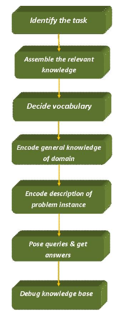
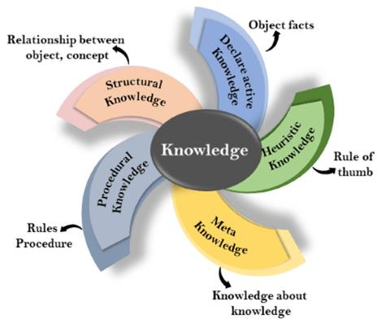
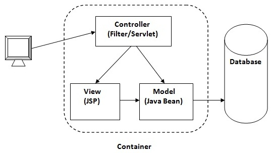

Introduction
Notes for computer engg. sem 6 SPPU university exam
You may notice NEEDS REFACTORING bullets which mean that the topic might be incomplete.
PROGRESS
-
Artificial Intelligence
- Unit III Adversarial Search and Games
- Unit IV Knowledge
- Unit V Reasoning
- Unit VI Planning
- Prelim Questions
-
Cloud Computing
- Unit III Virtualization in Cloud Computing
- Unit IV Cloud Platforms and Cloud Applications
- Unit V Security in Cloud Computing
- Unit VI Advanced Techniques in Cloud Computing
- Prelim Questions
-
Data Science and Big Data
- Unit III Big Data Analytics Life Cycle
- Unit IV Predictive Big Data Analytics with Python
- Unit V Big Data Analytics and Model Evaluation
- Unit VI Data Visualization and Hadoop
- Prelim Questions
-
Web technologies
- Unit III Java Servlets and XML
- Unit IV JSP and Web Services
- Unit V Server Side Scripting Languages
- Unit VI Ruby and Rails
- Prelim Questions
BTW,
-
Entire theory was based on google searches
-
Tried to keep the notes short but failed in some areas.
-
Navigating through the notes is pretty easy:
-
Sidebar can be toggled with the help of the hamburger menu in the top left corner.
-
Use the paint brush button to change the theme.
-
Search button for fast fuzzy search through the entire book.
-
-
To read more information about a topic, look for "More Details" whenever necessary. They are a link to the topic's resource.
-
You might find dropdowns in some places. They were added for unnecessary sections but quick reference just in case.
-
Improvements are welcome. Email me at: zim@onionmail.org
-
Source code for this book can be found at: https://github.com/zim0369/uniexam.
SYLLABI
Artificial Intelligence
-
Unit III Adversarial Search and Games
Game Theory, Optimal Decisions in Games, Heuristic Alpha–Beta Tree Search, Monte Carlo Tree Search, Stochastic Games, Partially Observable Games, Limitations of Game Search Algorithms, Constraint Satisfaction Problems (CSP), Constraint Propagation: Inference in CSPs, Backtracking Search for CSPs.
-
Unit IV Knowledge
Logical Agents, Knowledge-Based Agents, The Wumpus World, Logic, Propositional Logic: A Very Simple Logic, Propositional Theorem Proving, Effective Propositional Model Checking, Agents Based on Propositional Logic, First-Order Logic, Representation Revisited, Syntax and Semantics of First-Order Logic, Using First-Order Logic, Knowledge Engineering in First-Order Logic.
-
Unit V Reasoning
Inference in First-Order Logic, Propositional vs. First-Order Inference, Unification and First-Order Inference, Forward Chaining, Backward Chaining, Resolution, Knowledge Representation, Ontological Engineering, Categories and Objects, Events, Mental Objects, and Modal Logic, Reasoning Systems for Categories, Reasoning with Default Information
-
Unit VI Planning
Automated Planning, Classical Planning, Algorithms for Classical Planning, Heuristics for Planning, Hierarchical Planning, Planning and Acting in Nondeterministic Domains, Time, Schedules, and Resources, Analysis of Planning Approaches, Limits of AI, Ethics of AI, Future of AI, AI Components, AI Architectures.
Cloud Computing
-
Unit III Virtualization in Cloud Computing
Introduction: Definition of Virtualization, Adopting Virtualization, Types of Virtualization, Virtualization Architecture and Software, Virtual Clustering, Virtualization Application, Pitfalls of Virtualization. Grid, Cloud and Virtualization: Virtualization in Grid, Virtualization in Cloud, Virtualization and Cloud Security. Virtualization and Cloud Computing: Anatomy of Cloud Infrastructure, Virtual infrastructures, CPU Virtualization, Network and Storage Virtualization.
-
Unit IV Cloud Platforms and Cloud Applications
Amazon Web Services (AWS): Amazon Web Services and Components, Amazon Simple DB, Elastic Cloud Computing (EC2), Amazon Storage System, Amazon Database services (Dynamo DB).Microsoft Cloud Services: Azure core concepts, SQL Azure, Windows Azure Platform Appliance. Cloud Computing Applications: Healthcare: ECG Analysis in the Cloud, Biology: Protein Structure Prediction, Geosciences: Satellite Image Processing, Business and Consumer Applications: CRM and ERP, Social Networking, Google Cloud Application: Google App Engine. Overview of OpenStack architecture.
-
Unit V Security in Cloud Computing
Risks in Cloud Computing: Risk Management, Enterprise-Wide Risk Management, Types of Risks in Cloud Computing. Data Security in Cloud: Security Issues, Challenges, advantages, Disadvantages, Cloud Digital persona and Data security, Content Level Security. Cloud Security Services: Confidentiality, Integrity and Availability, Security Authorization Challenges in the Cloud, Secure Cloud Software Requirements, Secure Cloud Software Testing.
-
Unit VI Advanced Techniques in Cloud Computing
Future Tends in cloud Computing, Mobile Cloud, Automatic Cloud Computing: Comet Cloud. Multimedia Cloud: IPTV, Energy Aware Cloud Computing, Jungle Computing, Distributed Cloud Computing Vs Edge Computing, Containers, Docker, and Kubernetes, Introduction to DevOps. IOT and Cloud Convergence: The Cloud and IoT in your Home, The IOT and cloud in your Automobile, PERSONAL: IoT in Healthcare.
Data Science and Big Data
-
Unit III Big Data Analytics Life Cycle
Introduction to Big Data, sources of Big Data, Data Analytic Lifecycle: Introduction, Phase 1: Discovery, Phase 2: Data Preparation, Phase 3: Model Planning, Phase 4: Model Building, Phase 5: Communication results, Phase 6: Operation alize.
-
Unit IV Predictive Big Data Analytics with Python
Introduction, Essential Python Libraries, Basic examples. Data Preprocessing: Removing Duplicates, Transformation of Data using function or mapping, replacing values, Handling Missing Data. Analytics Types: Predictive, Descriptive and Prescriptive. Association Rules: Apriori Algorithm, FP growth. Regression: Linear Regression, Logistic Regression. Classification: Naïve Bayes, Decision Trees. Introduction to Scikit-learn, Installations, Dataset, mat plotlib, filling missing values, Regression and Classification using Scikit-learn.
-
Unit V Big Data Analytics and Model Evaluation
Clustering Algorithms: K-Means, Hierarchical Clustering, Time-series analysis. Introduction to Text Analysis: Text-preprocessing, Bag of words, TF-IDF and topics. Need and Introduction to social network analysis, Introduction to business analysis. Model Evaluation and Selection: Metrics for Evaluating Classifier Performance, Holdout Method and Random Sub sampling, Parameter Tuning and Optimization, Result Interpretation, Clustering and Time-series analysis using Scikit- learn, sklearn. metrics, Confusion matrix, AUC-ROC Curves, Elbow plot.
-
Unit VI Data Visualization and Hadoop
Introduction to Data Visualization, Challenges to Big data visualization, Types of data visualization, Data Visualization Techniques, Visualizing Big Data, Tools used in Data Visualization, Hadoop ecosystem, Map Reduce, Pig, Hive, Analytical techniques used in Big data visualization. Data Visualization using Python: Line plot, Scatter plot, Histogram, Density plot, Box- plot.
Web technologies
-
Unit III Java Servlets and XML
Servlet: Servlet architecture overview, A “Hello World” servlet, Servlets generating dynamic content, Servlet life cycle, parameter data, sessions, cookies, URL rewriting, other Servlet capabilities, data storage, Servlets concurrency, databases (MySQL) and Java Servlets. XML: XML documents and vocabularies, XML declaration, XML Namespaces, DOM based XML processing, transforming XML documents, DTD: Schema, elements, attributes. AJAX: Introduction, Working of AJAX.
-
Unit IV JSP and Web Services
JSP: Introduction to Java Server Pages, JSP and Servlets, running JSP applications, Basic JSP, JavaBeans classes and JSP, Support for the Model-View-Controller paradigm, JSP related technologies. Web Services: Web Service concepts, Writing a Java Web Service, Writing a Java web service client, Describing Web Services: WSDL, Communicating Object data: SOAP. Struts: Overview, architecture, configuration, actions, interceptors, result types, validations, localization, exception handling, annotations.
-
Unit V Server Side Scripting Languages
PHP: Introduction to PHP, uses of PHP, general syntactic characteristics, Primitives, operations and expressions, output, control statements, arrays, functions, pattern matching, form handling, files, cookies, session tracking, using MySQL with PHP, WAP and WML. Introduction to ASP.NET: Overview of the .NET Framework, Overview of C#, Introduction to ASP.NET, ASP.NET Controls, Web Services. Overview of Node JS.
-
Unit VI Ruby and Rails
Introduction to Ruby: Origins & uses of Ruby, scalar types and their operations, simple input and output, control statements, fundamentals of arrays, hashes, methods, classes, code blocks and iterators, pattern matching. Introduction to Rails: Overview of Rails, Document Requests, Processing Forms, Rails Applications and Databases, Layouts, Rails with Ajax. Introduction to EJB.
Artificial Intelligence
-
Unit III Adversarial Search and Games
Game Theory, Optimal Decisions in Games, Heuristic Alpha–Beta Tree Search, Monte Carlo Tree Search, Stochastic Games, Partially Observable Games, Limitations of Game Search Algorithms, Constraint Satisfaction Problems (CSP), Constraint Propagation: Inference in CSPs, Backtracking Search for CSPs.
-
Unit IV Knowledge
Logical Agents, Knowledge-Based Agents, The Wumpus World, Logic, Propositional Logic: A Very Simple Logic, Propositional Theorem Proving, Effective Propositional Model Checking, Agents Based on Propositional Logic, First-Order Logic, Representation Revisited, Syntax and Semantics of First-Order Logic, Using First-Order Logic, Knowledge Engineering in First-Order Logic.
-
Unit V Reasoning
Inference in First-Order Logic, Propositional vs. First-Order Inference, Unification and First-Order Inference, Forward Chaining, Backward Chaining, Resolution, Knowledge Representation, Ontological Engineering, Categories and Objects, Events, Mental Objects, and Modal Logic, Reasoning Systems for Categories, Reasoning with Default Information
-
Unit VI Planning
Automated Planning, Classical Planning, Algorithms for Classical Planning, Heuristics for Planning, Hierarchical Planning, Planning and Acting in Nondeterministic Domains, Time, Schedules, and Resources, Analysis of Planning Approaches, Limits of AI, Ethics of AI, Future of AI, AI Components, AI Architectures.
Unit III: Adversarial Search and Games
Game Theory
For MCQs:
States where the game has ended are called terminal states.
"zero-sum” means that what is good for one player is just as bad for the other: there is no “win-win” outcome. A utility function is also called an objective function or payoff function.
Chess is considered a “zero-sum” game,
Game tree is also known as Search tree or space graph
Notes:
Definition
Game Theory tries to understand the strategic moves of the players and deicide the optimal move from the set of all possible moves. To achieve this it makes use of game tree. A game tree is a recursive search function that examines all possible moves and their results and then decide the optimal move.
Working:
Start at the current board position,
Check all the possible moves the player can make
From each possible move predict which move the opponent will play
Decide the optimal move based on opponents move and results.
The two players and usually named as MAX and MIN.
MAX moves first, and then the players take turns moving until the game is over
At the end of the game, points are awarded to the winning player and penalties are given to the loser
A game can be formally defined with the following elements:
Initial state, which specifies how the game is set up at the start.
TO-MOVE : The player whose turn it is to move in state
ACTIONS : The set of legal moves in state
RESULT : The transition model, which defines the state resulting from taking action
in state .
TERMINAL : States where the game has ended are called terminal states.
UTILITY FUNCTION : A utility function defines the final numeric value to player when the game ends in terminal state
MCQs to solve:
https://engineeringinterviewquestions.com/mcqs-on-game-theory-and-answers/ https://www.sanfoundry.com/artificial-intelligence-mcqs-game-theory-1/
Videos to watch :
Introduction to Game Playing in Artificial Intelligence | Learn Game Playing Algorithms with Example
Optimal Decisions in Games
MIN MAX ALGO
In artificial intelligence, minimax is adecision-making strategy undergame theory, which is used to minimize the losing chances in a game and to maximize the winning chances. This strategy is also known as ‘Minmax,’ ’MM,’ or ‘Saddle point.’
We can easily understand this strategy via game tree- where the nodes represent the states of the game and edges represent the moves made by the players in the game. Players will be two namely:
- MIN: Decrease the chances of MAX to win the game.
- MAX: Increases his chances of winning the game.
They both play the game alternatively, i.e., turn by turn and following the above strategy, i.e., if one wins, the other will definitely lose it.
In minimax strategy, the result of the game or the utility value is generated by aheuristic function by propagating from the initial node to the root node. It follows thebacktracking technique and backtracks to find the best choice. MAX will choose that path which will increase its utility value and MIN will choose the opposite path which could help it to minimize MAX’s utility value.
MINIMAX algorithm is a backtracking algorithm where it backtracks to pick the best move out of several choices. MINIMAX strategy follows the DFS (Depth- first search) concept. Here, we have two players MIN and MAX, and the game is played alternatively between them, i.e., when MAX made a move, then the next turn is of MIN. It means the move made by MAX is fixed and, he cannot change it. The same concept is followed in DFS strategy, i.e., we follow the same path and cannot change in the middle. That’s why in MINIMAX algorithm, instead of BFS, we follow DFS.
- Keep on generating the game tree/ search tree till a limit d.
- Compute the move using a heuristic function.
- Propagate the values from the leaf node till the current position following the minimax strategy.
- Make the best move from the choices.
For example, in the above figure, the two players MAX and MIN are
there. MAX starts the game by choosing one path and propagating all the nodes of that path. Now, MAX will backtrack to the initial node and choose the best path where his utility value will be the maximum. After this,
its MIN chance. MIN will also propagate through a path and again will backtrack, but MIN will choose the path which could minimize MAX winning chances or the utility value.
So, if the level is minimizing, the node will accept the minimum value from the successor nodes. If the level is maximizing, the node will accept the maximum value from the successor.
Note: The time complexity of MINIMAX algorithm is O(bd) where b is the branching factor and d is the depth of the search tree.

For example, in the above figure, the two players MAX and MIN are
there. MAX starts the game by choosing one path and propagating all the nodes of that path. Now, MAX will backtrack to the initial node and choose the best path where his utility value will be the maximum. After this,
its MIN chance. MIN will also propagate through a path and again will backtrack, but MIN will choose the path which could minimize MAX winning chances or the utility value.
So, if the level is minimizing, the node will accept the minimum value from the successor nodes. If the level is maximizing, the node will accept the maximum value from the successor.
Note: The time complexity of MINIMAX algorithm is O(bd) where b is the branching factor and d is the depth of the search tree.

Heuristic Alpha Beta Tree Search
Alpha-beta pruning is an advance version of MINIMAX algorithm. The drawback of minimax strategy is that it explores each node in the tree deeply to provide the best path among all the paths. This increases its time complexity. But as we know, the performance measure is the first consideration for any optimal algorithm. Therefore, alpha-beta pruning reduces this drawback of minimax strategy by less exploring the nodes of the search tree.
The method used in alpha-beta pruning is that it cutoff the search by exploring less number of nodes. It makes the same moves as a minimax algorithm does, but it prunes the unwanted branches using the pruning technique
Working of Alpha-beta Pruning
Consider the below example of a game tree where P and Q are two players. The game will be played alternatively, i.e., chance by chance. Let, P be the player who will try to win the game by maximizing its winning chances. Q is the player who will try to minimize **P’**s winning chances. Here, ? will represent the maximum value of the nodes, which will be the value for P as well. ? will represent the minimum value of the nodes, which will be the value of Q.

- Any one player will start the game. Following the DFS order, the player will choose one path and will reach to its depth, i.e., where he will find
the TERMINAL value.
- If the game is started by player P, he will choose the maximum value in order to increase its winning chances with maximum utility value.
- If the game is started by player Q, he will choose the minimum value in order to decrease the winning chances of A with the best possible minimum utility value.
- Both will play the game alternatively.
- The game will be started from the last level of the game tree, and the value will be chosen accordingly.
- Like in the below figure, the game is started by player Q. He will pick the leftmost value of the TERMINAL and fix it for beta (?). Now, the next TERMINAL value will be compared with the ?-value. If the value will be smaller than or equal to the ?-value, replace it with the current ?-value otherwise no need to replace the value.
- After completing one part, move the achieved ?-value to its upper node and fix it for the other threshold value, i.e., ?.
- Now, its P turn, he will pick the best maximum value. P will move to explore the next part only after comparing the values with the current ?-value. If the value is equal or greater than the current ?-value, then only it will be replaced otherwise we will prune the values.
- The steps will be repeated unless the result is not obtained.
- So, number of pruned nodes in the above example are four and MAX wins the
game with the maximum UTILITY value, i.e.,3
The rule which will be followed is: “Explore nodes if necessary otherwise prune the unnecessary nodes.”
Note: It is obvious that the result will have the same UTILITY value that we may get from the MINIMAX strategy.
Monte Carlo Tree Search
It is a probabilistic and heuristic driven search algorithm
The basic MCTS strategy does not use a heuristic evaluation function. Instead, the value of a state is estimated as the average utility over a number of simulations of complete games starting from the state. A simulation (also called a playout or rollout) chooses moves first
for one player, than for the other, repeating until a terminal position is reached. At that point the rules of the game (not fallible heuristics) determine who has won or lost, and by what score. For games in which the only outcomes are a win or a loss, “average utility” is the same as “win percentage.”
pure Monte Carlo search, is to do N simulations starting from the current state of the game, and track which of the possible moves from the current position has the highest win percentage.
It balances two factors:
exploration of states that have had few playouts, and exploitation of states that have done well in past playouts, to get a more accurate estimate of their value.
Monte Carlo tree search does that by
maintaining a search tree and growing it on each iteration of the following four steps:
SELECTION: Starting at the root of the search tree, we choose a move (guided by the selection policy), leading to a successor node, and repeat that process, moving down the tree to a leaf.
EXPANSION: We grow the search tree by generating a new child of the selected node; SIMULATION: We perform a playout from the newly generated child node, choosing moves for both players according to the playout policy. These moves are not recorded in the search tree.
BACK-PROPAGATION: We now use the result of the simulation to update all the
search tree nodes going up to the root.

Advantages of Monte Carlo Tree Search:
- MCTS is a simple algorithm to implement.
- Monte Carlo Tree Search is a heuristic algorithm. MCTS can operate effectively without any knowledge in the particular domain, apart from the rules and end conditions, and can can find its own moves and learn from them by playing random playouts.
- The MCTS can be saved in any intermediate state and that state can be used in future use cases whenever required.
- MCTS supports asymmetric expansion of the search tree based on the circumstances in which it is operating.
Disadvantages of Monte Carlo Tree Search:
- As the tree growth becomes rapid after a few iterations, it requires a huge amount of memory.
- There is a bit of a reliability issue with Monte Carlo Tree Search. In certain scenarios, there might be a single branch or path, that might lead to loss against the opposition when implemented for those turn-based games. This is mainly due to the vast amount of combinations and each of the nodes might not be visited enough number of times to understand its result or outcome in the long run.
- MCTS algorithm needs a huge number of iterations to be able to effectively decide the most efficient path. So, there is a bit of a speed issue there.
Stochastic Games
Stochastic games are simulations of dynamic interactions in which the environment changes in response to the activities of the participants. "In a stochastic game, the play progresses by steps from position to position, according to transition probabilities determined jointly by the two players," Shapley writes.
A group of participants participates in a stochastic game. At each stage of the game, the action takes place in a specific state (or position, in Shapley's terminology), and each player selects an action from a list of options. The stage payoff that each player receives is determined by the collection of actions that the players choose, as well as the current state, as well as a probability distribution for the subsequent state that the game will visit.
Stochastic games apply von Neumann's model of strategic-form games to dynamic settings in which the environment varies in response to the players' decisions. They also use the Markov decision problem model, which was created by numerous RAND Corporation researchers in 1949–1952, to competitive scenarios with multiple decision makers.
The complexity of stochastic games arises from the fact that the players' decisions have two, sometimes opposing, consequences. First, the players' actions, in combination with the present state, determine the immediate payment that each player receives. Second, the present state and the players' activities influence the next state selection, which influences future reward possibilities. Each player, in particular, must balance these factors when deciding on his actions, which might be a difficult decision. Although this dichotomy is also present in one-player sequential decision problems, the presence of additional players who maximize their own goals adds complexity to the analysis of the situation.
-
Two player Games: For modelling and analysis of discrete systems functioning in an uncertain (adversarial) environment, stochastic two-player games on directed graphs are commonly employed. As vertices, a system's and its environment's possible configurations are represented, and transitions correspond to the system's, its environment's, or "nature's" actions. An infinite path in the graph corresponds to a run of the system. As a result, a system and its environment can be viewed as two hostile players, with one player (the system) aiming to maximise the probability of "good" runs and the other player (the environment) aiming to maximise the chance of "bad" runs. Although there may be an equilibrium value for this probability in many circumstances, there may not be optimal solutions for both parties. We go over some of the fundamental notions and algorithmic concerns that have been studied in this field, as well as some long-standing outstanding difficulties. Then we'll go through a few recent findings.
-
Application: Economic theory, evolutionary biology, and computer networks all use stochastic games. They are generalisations of repeated games that correspond to the unique case of a single state.
-
Key takeaway: Stochastic games are simulations of dynamic interactions in which the environment changes in response to the activities of the participants. "In a stochastic game, the play progresses by steps from position to position, according to transition probabilities determined jointly by the two players," Shapley writes.
Partially Observable Games
In deterministic partially observable games, uncertainty about the state of the board arises entirely from lack of access to the choices made by the opponent.
For a partially observable
game, the notion of a strategy is altered; instead of specifying a move to make for each possible move the opponent might make, we need a move for every possible percept sequence that might be received.
Card games such as bridge, whist, hearts, and poker feature stochastic partial observability, where the missing information is generated by the random dealing of cards.
treat the start of the game as a chance node with every possible deal as an
outcome, and then use the EXPECTIMINIMAX formula to pick the best move.
Limitations in game search algorithm
Alpha–beta search uses the heuristic
evaluation function as an approximation
Monte Carlo search computes an approximate
average over a random selection of playouts.
when the branching factor is high or it is difficult to
define an evaluation function, Monte Carlo search is preferred
One limitation of alpha–beta search is its vulnerability to errors in the heuristic function.
A second limitation of both alpha–beta and Monte Carlo is that they are designed to calculate (bounds on) the values of legal moves. But sometimes there is one move that is obviously best (for example when there is only one legal move), and in that case, there is no point wasting computation time to figure out the value of the move
A third limitation is that both alpha-beta and Monte Carlo do all their reasoning at the level of individual moves.
Constraint satisfaction problems
Constraint satisfaction is a technique where a problem is solved when its values satisfy certain constraints or rules of the problem.
The main idea is to eliminate large portions of the search space all at once by identifying variable/value combinations that violate the constraints.
A constraint satisfaction problem consists of three components, and : X is a set of variables, {X1,….Xn}
D is a set of domains, , {D1,.......Dn}, one for each variable.
C is a set of constraints that specify allowable combinations of values.
Where,
X is a set of variables.
D consists of a set of allowable values for each variable
For example, a Boolean variable would have the domain {true, false} .
C is constraint
Each constraint consists of a pair ,(scope, rel) where scope is a tuple of variables that participate in the constraint and rel is a relation that defines the values that those variables can take on.
An assignment of values to a variable can be done in three ways:
Consistent or Legal Assignment:
An assignment which does not violate any constraint or rule is called Consistent or legal assignment.
Complete Assignment:
An assignment where every variable is assigned with a value, and the solution to the CSP remains consistent. Such assignment is known as Complete assignment.
Partial Assignment:
An assignment which assigns values to some of the variables only. Such type of assignments are called Partial assignments.
Partial Solution is a partial assignment that is consistent.
Why formulate a problem as a CSP?
- CSPs yield a natural representation for a wide variety of problems; it is often easy to formulate a problem as a CSP.
- Years of development work have gone into making CSP solvers fast and efficient.
- a CSP solver can quickly prune large swathes of the search space that an atomic state-space searcher cannot
MCQs
MCQs
The 8-queens problem can also be viewed as a finite-domain CSP. Constraint Types in CSP
Unary Constraint :
restricts the value of a single variable. For example, in the map-coloring problem it could be the case that South Australians won’t tolerate the color green; we can express that with the unary Constraint.
Binary Constraint :
A binary constraint relates two variables. For example, is a binary constraint. A binary CSP is one with only unary and binary constraints; it can be represented as a constraint graph.
Global Constraints:
It is the constraint type which involves an arbitrary number of variables.
Inference in CSPs
Inference is nothing but reaching conclusion or achieving result on the basis of evidence and reasoning.
In local state-spaces, the choice is only one, i.e., to search for a solution. But in CSP, we have two choices either:
We can search for a solution or
We can perform a special type of inference called constraint propagation.
Constraint propagation is a special type of inference which helps in reducing the legal number of values for the variables. The idea behind constraint propagation is local consistency.
If we treat each variable as a node in a graph and each binary constraint as an edge, then the process of enforcing local consistency in each part of the graph causes inconsistent values to be eliminated throughout the graph. There are different types of local consistency Namely
Node Consistency:
A single variable (corresponding to a node in the CSP graph) is node-consistent if all the values in the variable’s domain satisfy the variable’s unary constraints.
It is easy to eliminate all the unary constraints in a CSP by reducing the domain of variables with unary constraints at the start of the solving process.
Arc Consistency:
A variable in a CSP is arc-consistent if every value in its domain satisfies the variable’s binary constraints
The most popular algorithm for enforcing arc consistency is called AC-3 (see Figure 6.3 ). To make every variable arc-consistent, the AC-3 algorithm maintains a queue of arcs to consider.
Path Consistency:
When the evaluation of a set of two variable with respect to a third variable can be extended over another variable, satisfying all the binary constraints. It is similar to arc consistency.
k-consistency:
Stronger forms of propagation can be defined with the notion of -consistency. A CSP is - consistent if, for any set of variables and for any consistent assignment to those variables, a consistent value can always be assigned to any th variable
Backtracking search for CSPs
The minimum-remaining-values and degree heuristics are domain-independent
methods for deciding which variable to choose next in a backtracking search. The least constraining- value heuristic helps in deciding which value to try first for a given
variable. Backtracking occurs when no legal assignment can be found for a variable. Conflict-directed backjumping backtracks directly to the source of the problem.
Constraint learning records the conflicts as they are encountered during search in order
to avoid the same conflict later in the search.
The complexity of solving a CSP is strongly related to the structure of its constraint
graph. Tree-structured problems can be solved in linear time.
Cutset conditioning can reduce a general CSP to a tree-structured one and is quite efficient (requiring only linear
memory) if a small cutset can be found.
Unit IV: Knowledge
Knowledge Based Agents
knowledge-based agents use a process of reasoning over an internal representation of
knowledge to decide what actions to take. Knowledge-based agent uses some task-specific knowledge to solve a problem efficiently.
Knowledge-based agents can accept
new tasks in the form of explicitly described goals; they can achieve competence quickly by
being told or learning new knowledge about the environment; and they can adapt to
changes in the environment by updating the relevant knowledge.
the representation of knowledge is done via logics.
There are three main components of logic, which are as follows:
Syntax: It is the sequence of a specific language which should be followed in order to form a sentence. Syntax is the representation of a language. Every language has its own syntax.
For example, ax2+bx+c is a well-formed syntax of a quadratic equation.
Semantics: The sentence or the syntax which a logic follows should be meaningful. Semantics defines the sense of the sentence which relates to the real world.
For example, Indian people celebrate Diwali every year. This sentence represents the true fact about the country and its people who are Indians.
Each sentence is expressed in a language called a knowledge representation language and
represents some assertion about the world.
When the sentence is taken as being given
without being derived from other sentences, we call it an axiom.
A knowledge-based system comprises of two distinguishable features which are:
A Knowledge base
An Inference Engine
Knowledge base: A Knowledge base represents the actual facts which exist in the real world. It is the central component of a knowledge-based agent. It is a set of sentences which describes the information related to the world.
Note: Here, a sentence is not an English language sentence, but it is represented in a language known as Knowledge representation language.
Inference Engine: It is the engine of a knowledge-based system which allows to infer new knowledge in the system.
There must be a way to add new sentences to the knowledge base and a way to query what is known. The standard names for these operations are TELL and ASK, respectively.
When the agent solves a problem, it calls the agent program each time. The agent program performs three things:
It TELLS the knowledge base what it has perceived from the environment.
It ASKS the knowledge base about the actions it should take?
It TELLS the action which is chosen, and finally, the agent executes that action.

These functions create an interface between the two main components of an intelligent agent, i.e., sensors and actuators.

The functions are discussed below:
MAKE-PERCEPT-SENTENCE()
This function returns a sentence which tells the perceived information by the agent at a given time.
MAKE-ACTION-QUERY()
This function returns a sentence which tells what action the agent must take at the current time.
MAKE-ACTION-SENTENCE()
This function returns a sentence which tells an action is selected as well as executed.
Wumpus Word
The Wumpus world is a game playing which provides an environment to the knowledge-based agent to showcase its stored knowledge. It was developed by Gregory Yob in 1973.
About the game:
- It is a single-player game.
- It is a cave consisting of rooms which are connected with one-another via passways.
- There is a beast or monster in the game named Wumpus, lurking somewhere the cave.
- Wumpus eats everyone who tries to enter the cave.
- The player needs to kill the Wumpus.
- The player has only one arrow to shoot out the monster.
- There are some rooms containing bottomless pits which may trap anyone whoever wanders in the room.
- The goal of the game is to search for a heap of gold.

PEAS Description of the Wumpus World
- Performance Measure: The player is awarded with the following utilities:
- (+1000): It is for coming out of the cave safely with the gold.
- (-1000): It is for falling into the pit or if eaten by the Wumpus.
- (-1): It is for each action taken by the player.
- (-10): It is for raising the arrow up.
The game ends if the player comes out of the cave safely or dies.
- Environment: The environment provided in the Wumpus world is as follows:
- It is a 4X4 grid of rooms.
- The player always starts in the square labeled [1,1] and facing towards the right.
- Location of the monster and the gold is choosen randomly in a uniform distribution.
- Remember, the location chosen will never be the starting point.
- Each square room other than the starting one can be a pit with 0.2
probability.
- Actuators: The player performs the following actions:
- The agent can move forward or TurnLeft by 900 and TurnRight by 900.
- The player dies if he enters a room having a pit or alive monster. It is safe to enter the room if the Wumpus is dead.
- If the player will try to move forward and bumps into the wall, then the player will not move.
- Using the action Grab, the player can pick up the gold in the same room.
- Using the action Shoot, the player can shoot the monster with the arrow. Either the arrow will shoot the monster or will hit on the wall.
- The action Climb is used to come out of the cave but only from the square
[1,1].
- Sensors: The player is provided with five sensors, which gives a single bit of information:
- The player will perceive a Stench, if Wumpus is present in the room which is directly adjacent to the player.
- The player will perceive a Breeze, if in the square is directly adjacent to the pit.
- The player will perceive a Glitter, if in the square gold is present.
- The player will perceive a Bump, when the player walks into the wall.
When the player will shoot out the monster, it will emit a scary Scream which can be heard/perceived from anywhere in the cave.
in each case for which the agent draws a conclusion from the available
information, that conclusion is guaranteed to be correct if the available information is correct. This is a fundamental property of logical reasoning
Logic
A logic is a formal language that allows sound inference and has well defined syntax and semantics. There are various logics that allow you to represent various types of things and allow for more or less efficient inference. Different varieties of logic exist, such as propositional logic, predicate logic, temporal logic, and description logic. However, expressing something in logic may not be natural, and conclusions may be ineffective.
-
Example of logic Language of numerical constraints:
-
A sentence: x + 3 ≤ z x, z - variable symbols (primitives in the language)
-
An interpretation: I: x = 5, z = 2
Variables mapped to specific real numbers
-
Valuation (meaning) function V: V (x + 3 ≤ z, I) is False for I: x = 5, z = 2 Is True for I: x = 5, z = 10
-
Types of logic:
- Different types of logics possible
- Propositional logic
- First-order logic
- Temporal logic
- Numerical constraints logic
- Map-coloring logic
-
Key takeaway:
- A logic is a formal language, with precisely defined syntax and semantics, which supports sound inference.
- The logic may be different types like propositional logic, predicate logic, temporal logic, description logic etc.
Propositional Logic: A Very Simple Logic,
Syntax: The statements given in a problem are represented via propositional symbols. Each sentence consists of a single propositional symbol. The propositional symbol begins with an uppercase letter and may be followed by some other subscripts or letters. We have two fixed propositional symbols, i.e., True and False.
Complex sentences are constructed from simpler sentences, using parentheses and
operators called logical connectives. There are five connectives in common use:
- not(¬): It is known as the negation of a sentence. A literal can be a positive literal or a negative literal.
- and(^): When a sentence is having (^) as the main connective. It is known
as Conjunction, and its parts are known as Conjuncts. For example, (Y1 ^ Y2) ? (Y3 ^ Y4) ? …(Yn ^ Ym), such type of sentences are known as Conjunctive sentences.
- or(V): When a sentence is having (V) as the main connective. It is known as Disjunction, and its parts are known as Disjuncts. For example, (Y1 ? Y2) V (Y3 ? Y4) V …(Yn ? Ym), such type of sentences are known as Disjunctive sentences.
- implies(=>): When (Y1 V Y2) => Y3 is given, it is known as the Implication of a sentence. It is like if->then clause, where if this implies then it will happen. Implication is sometimes referred to as Rules or if-then statement. It can also be denoted as ( ) or ( ).
- if and only if (ó): It represents implication at both sides where the expression is (a1 V a2)?a3,. Such type of connective is called biconditional implication. It returns true if both sides satisfy one another, else returns false.This can also be denoted as (?).
Precedence Order of the Connectives
There are following five rules regarding the semantics of the complex sentences P and Q in a given model m :
¬P: Its value will be false, iff it is true in the model m.
(P ? Q): Its value is true, iff both P and Q are true in m.
(P v Q): Its value is true, iff either P is true, or Q is true in m.
(P=> Q): Its value is true, iff the value of P is false, and that of Q is true in m.
(P ? Q): The value will be true, iff P and Q value is either true or false in the given (P ? Q): The value will be true, iff P and Q value is either true or false in the given model m.
Note: Here, iff means if and only if.

Propositional Theorem Proving
Theorem proving—applying rules of inference directly to the sentences in our knowledge base to construct a proof of the desired sentence without consulting models.
Logical equivalence means two sentences and are logically equivalent if they are true in the same set of models.

A sentence is valid if it is true in all models. For
example, the sentence P ∨ ¬P is valid. Valid sentences are also known as tautologies—they are necessarily true.
A sentence is satisfiable if it is true in, or satisfied by, some model.

Effective Propositional Model Checking
Not so important topic according to me. Choosing to ignore this one.
Agents Based on Propositional Logic
skipped
First Order Logic
First-order logic is also called first-order predicate calculus; it may be abbreviated as FOL or FOPC.
In predicate logic, the input is taken as an entity, and the output it gives is either true or false.
Elements and their symbols in Predicate Logic
- Objects: It refers to an entity that exists in the real world. For example, Ram, John, etc. are referred to as Objects.
- Functions: Any function performed by the object/on the object. For
example, LeftLeg, writes, eats, etc. are some of the functions.
- Relations: The relation of an object with the other object defines its relation**. For example,** brother, mother, king, etc. are some types of relations which exist in the real world.
The symbols used to represent these elements. They are as follows:
- Constant Symbols: These symbols are used to represent the objects.
- Predicate Symbols: These symbols are used to represent relations.
- Function Symbols: These symbols are used to represent the functions performed by the object.
Some examples follow:
“One plus two equals three.” Objects: one, two, three, one plus two; Relation: equals; Function: plus. (“One plus two” is a name for the object that is obtained by applying the function “plus” to the objects “one” and “two.” “Three” is another name for this object.) “Squares neighboring the wumpus are smelly.” Objects: wumpus, squares; Property: smelly; Relation: neighboring.
“Evil King John ruled England in 1200.” Objects: John, England, 1200; Relation: ruled during; Properties: evil, king.
The primary difference between propositional and first-order logic
Propositional logic assumes
that there are facts that either hold or do not hold in the world. Each fact can be in one of two states—true or false—and each model assigns true or false to each proposition symbol. First-order logic assumes more; namely, that the world consists of
objects with certain relations among them that do or do not hold.
Representation Revisited
Programming languages (such as C++, Java, and Lisp) are by far the most widely used formal languages.
This procedural method contrasts with propositional logic's declarative character, in which knowledge and inference are separated and inference is domain- independent.
They lack the expressiveness required to deal with incomplete data.
- Using disjunction and negation, propositional logic has enough expressive capability to deal with partial knowledge.
- Compositionality is a third characteristic of propositional logic that is useful in representation languages.
The meaning of a sentence in a compositional language is determined by the meaning of its constituent elements.
For example, ―S1,4 ^ S1,2‖ is related to the meanings of ―S1,4‖ and ―S1,2‖.
Propositional logic lacks the expressive power to succinctly explain a complex environment with numerous items.
For example, we were compelled to establish a distinct regulation for each
square regarding breezes and pits, such as: B 1,1⇔(P 1,2 or P 2,1)
In English, though, it seems simple enough to state unequivocally that squares near to pits are airy.
Natural languages are also non-compositional, in the sense that the meaning of a statement like "Then she saw it" might be influenced by the context created by numerous preceding and following sentences.
Finally, natural languages contain ambiguity, which can make thinking harder.
The following are the most obvious features of natural language syntax:
- Object-referential nouns and noun phrases ( squares , pits, wumpuses ).
- Verbs and verb phrases that allude to object relationships (is breezy, is adjacent to, shoots).
- Some of these relationships are functions, meaning they have only one value for each input. It's simple to start a list of objects, relations, and functions:
Objects: People, houses, numbers, theories, Ronald McDonald, colors, baseball games, wars, centuries….
Relation: These can be unary relations or properties like red, round, bogus, prime, multi-storied............, or more general n-ary relations like brother of, bigger than, within, part of, has colour, happened after, owns, comes between, etc.
Functions: father of, closest friend, third inning of, more than, and the start of.
- The first-order logic language has a syntax and semantics based on objects and relations.
- First-order logic can also be used to convey facts about some or all of the universe's items.
- This allows generic laws or norms to be represented, such as the sentence "Squares adjacent to the Wumpus are stinky."
The ontological commitment made by each language—that is, what it assumes about the nature of reality—is the basic difference between propositional and first- order logic.
- Propositional logic, for example, assumes that there are facts in the world that either hold or do not hold. There are two possible states for each fact: true or untrue.
- Temporal logic assumes that facts are true at specific moments and that those times (which can be points or intervals) are in chronological sequence. Higher-order logic considers the first-order logic's relations and functions to be objects in and of themselves. This enables claims to be made about all object relations. A talent for dealing with logical notation is required of an AI student.
Syntax and Semantics of First Order
Syntax: It defines the way of representing the given predicates. As these predicates are represented via quantifiers, there are different types of quantifiers used:
- Universal Quantifier(For all/every): When the predicate is indicating about all/everything, we use for all quantifier. It is denoted as " ? "
- Existential Quantifier(For some): When the predicate is indicating about some quantity, we use for some quantifier. It is denoted as “?”
- Nested Quantifiers: It is the nesting of the same type of quantifier. One predicate is nested under the other predicate.
- Atomic Sentences: These sentences are formed via predicate symbols
may or may not be followed by a list of terms.
Example: Parents(Ram, Sita) where Ram and Sita are the parents.
- Complex Sentences: These sentences make use of logical connectives to construct more complex sentences.
- Equality: We use the equality symbol to express that two terms refer to the same object**. For example,** Eleveenth_President(India)= Dr. APJ Abdul Kalam. Here, both LHS is equal to RHS. It means that both terms refer to the same entity/ person.
Semantics: It defines the sense of the given predicate. It allows to make more logical expression by devising its semantics. Semantics allow us to understand the sentence meaning.
Let’s understand Predicate logic with the help of below examples: Example 1: Lipton is a tea.
Solution: Here, the object is Lipton.
It will be represented as Tea(Lipton).
Note: In this example, there is no requirement of quantifiers because the quantity is not specified in the given predicate. Let’s see more.
Example 2: Every man is mortal.
Solution: Here, the quantifier is the universal identifier, and the object is man. Let x be the man.
Thus, it will be represented as x: man(x) ? mortal(x).
Example 3: All girls are beautiful.
Solution: Here, we are talking about all girls. It means universal quantifier will be used. The object is girls. Let, y be the girls.
Therefore, it will be represented as girls(y) ? beautiful(y).
Example 4: All that glitters is not gold.
Solution: Here, we will represent gold as x.
Therefore, it will be represented as glitters(x) ? ¬gold(x).
Using First Order Logic
Again not an important topic
Knowledge Engineering
Process of knowledge base construction in called knowledge engineering.
a knowledge engineer investigates a specific domain, learn the important concepts regarding that domain, and creates the formal representation of the objects and relations in that domain.
There are 7 steps in knowledge engineering:

- IDENTIFY THE QUESTIONS
- A knowledge engineer should be able to identify the task by asking a few questions like:
- Do the knowledge base will support?
- What kinds of facts will be available for each specific problem?
The task will identify the knowledge requirement needed to connect the problem instance with the answers.
instance with the answers.
- ASSEMBLE THE RELEVANT KNOWLEDGE
- A knowledge engineer should be an expert in the domain. If not, he should work with the real experts to extract their knowledge. This concept is
known as Knowledge Acquisition.
Note: Here, we do not represent the knowledge formally. But to understand the scope of the knowledge base and also to understand the working of the domain.
For the wumpus world, which is defined by an artificial set of rules, the relevant
knowledge is easy to identify.
- DECIDE ON A VOCABULARY OF PREDICATES, FUNCTIONS, AND CONSTANTS.
- Translating important domain-level concepts into logical level concepts. Here, the knowledge engineer asks questions like:
- What are the elements which should be represented as objects?
- What functions should be chosen?
After satisfying all the choices, the vocabulary is decided.
- ENCODE GENERAL KNOWLEDGE ABOUT THE DOMAIN
- In this step, the knowledge engineer pen down the axioms for all the chosen
vocabulary terms.
Note: Here, misconceptions occur between the vocabulary terms.
•
- Encode description of the specific problem instance: We write the simple atomic sentences for the selected vocabulary terms. We encode the chosen problem instances.
- Raise queries to the inference procedure and get answers: It is the testing step. We apply the inference procedure on those axioms and problem-specific facts which we want to know.
- Debug the knowledge base: It is the last step of the knowledge engineering process where the knowledge engineer debugs all the errors.
Propositional vs First order Inference
One way to do first-order inference is to convert the first-order knowledge base to propositional logic and use propositional inference. first step is eliminating universal quantifiers.


Knowledge Engineering in First-Order Logic Inference is used in First-Order
Logic to generate new facts or sentences from current ones. It's crucial to understand some basic FOL terms before diving into the FOL inference rule.
-
Substitution: Substitution is a fundamental approach for modifying phrases and formulations. All first-order logic inference systems contain it. The substitution becomes more difficult when there are quantifiers in FOL. We refer to the replacement of a constant "a" for the variable "x" when we write F[a/x].
-
Equality: Atomic sentences are generated in First-Order Logic not only through the employment of predicate and words, but also through the application of equality. We can do this by using equality symbols, which indicate that the two terms relate to the same thing.
-
FOL inference rules for quantifier: Because inference rules in first-order logic are comparable to those in propositional logic, below are some basic inference rules in FOL:
- Universal Generalization
- Universal Instantiation
- Existential Instantiation
- Existential introduction
-
Universal Generalization:
-
Universal generalization is a valid inference rule that states that if premise P(c) is true for any arbitrary element c in the universe of discourse, we can arrive at the conclusion x P. (x).
-
It can be represented as: formula not visible
-
If we want to prove that every element has a similar property, we can apply this rule.
-
x must not be used as a free variable in this rule.
-
Example: Let's represent, P(c): "A byte contains 8 bits", so for ∀ x P(x) "All bytes contain 8 bits.", it will also be true.
-
-
Universal Instantiation:
- Universal instantiation, often known as universal elimination or UI, is a valid inference rule. It can be used numerous times to add more sentences.
- The new knowledge base is logically equivalent to the previous one.
- We can infer any phrase by replacing a ground word for the variable, according to the UI.
- According to the UI rule, any phrase P(c) can be inferred by substituting a ground term c (a constant inside domain x) for any object in the universe of discourse in x P(x).
- It can be represented as: formula not visible
- Example: IF "Every person like ice-cream"=> ∀x P(x) so we can infer that "John likes ice-cream" => P(c)
-
Existential Instantiation:
- Existential Elimination, also known as Existential Instantiation, is a valid first- order logic inference rule.
- It can only be used once to substitute for the existential sentence.
- Despite the fact that the new KB is not conceptually identical to the previous KB, it will suffice if the old KB was.
- This rule states that one can infer P(c) from the formula given in the form of ∃x P(x) for a new constant symbol c.
- The only constraint with this rule is that c must be a new word for which P(c) is true.
- It can be represented as: formula not visible
-
Existential introduction:
- An existential generalization, also known as an existential introduction, is a valid inference rule in first-order logic.
- If some element c in the world of discourse has the characteristic P, we can infer that something else in the universe has the attribute P, according to this rule.
- It can be represented as: formula not visible
- Example: Let's say that, "Pritisha got good marks in English." "Therefore, someone got good marks in English."
-
Propositional vs. First-Order Inference: Previously, inference in first order logic was checked via propositionalization, which is the act of turning the Knowledge Base included in first order logic into propositional logic and then utilizing any of the propositional logic inference mechanisms to check inference.
-
Key takeaway:
- In First-Order Logic, inference is used to derive new facts or sentences from existing ones.
- In First-Order Logic, atomic sentences are formed not only via the use of predicate and words, but also via the application of equality.
- There are some Inference rules that can be applied to sentences with quantifiers to obtain sentences without quantifiers.
Unit V: Reasoning
Unification and first order inference
-
It is the key component of First-order inference algorithms. Unification is the process used by the lifted inference rules to find substituents that could give identical but different logical expressions. It means the meaning of the sentence should not be changed, but it should be expressed in multiple ways. The UNIFY algorithm in unification takes two sentences as input and
then returns a unifier if one exists:
UNIFY(p,q)= ? where SUBST( ? , p) = SUBST( ?, ).
Let see how UNIFY works with the help of the below example:
Given:
Knows(Ram,x). The question is- Whom does Ram knows?
The UNIFY algorithm will search all the related sentences in the knowledge base, which could unify with Knows(Ram,x).
UNIFY (Knows(Ram, x), Knows(Ram, Shyam))?{x/Shyam}
UNIFY (Knows{Ram,x}, Knows{y, Aakash})?{x/Aakash, y/Ram}
UNIFY (Knows{Ram,x}, Knows{x, Raman})?fails.
The last one failed because we have used the same variable for two persons at the same time.
Unification Algorithm
Earlier, we have studied TELL and ASK functions which are used to inform and interrogate a knowledge base. These are the primitive functions
of STORE and FETCH functions**. STORE** function is used to store a
sentence s into the knowledge base and FETCH function is used to return all the unifiers with some sentences.
A simple scheme called predicate indexing puts all the
facts in one bucket and all the brother facts in another. The buckets can be stored in a hash table for efficient access.
Predicate indexing is useful when there are many predicate symbols but only a few clauses for each symbol
Forward Chaining
First-order definite clauses are disjunctions of literals of which exactly one is positive. definite clause is either atomic, or is an implication whose antecedent is a
conjunction of positive literals and whose consequent is a single positive literal.
A typical first-order definite
clause looks like this:
King(x) ^ Greedy(x) => Evil(x) ,
but the literals king(john) and greedy (john) also count as definite clauses. First-order literals can include variables, so Greedy(y) is interpreted as “everyone is greedy” (the universal quantifier is implicit).
In forward chaining, we start with the atomic sentences in the knowledge base and apply Modus Ponen in forward direction. Also adding new sentences until any inference is not made.
Starting from the known
facts, it triggers all the rules whose premises are satisfied, adding their conclusions to the
known facts. The process repeats until the query is answered (assuming that just one
answer is required) or no new facts are added.
Consider the below axioms:
- Gita loves all types of clothes.
- Suits are clothes.
- Jackets are clothes.
- Anything any wear and isn’t bad is clothes.
- Sita wears skirt and is good.
- Renu wears anything Sita wears.
Apply forward chaining and prove that Gita loves Kurtis.

Backward Chaining
These algorithms work backward from the goal, chaining through rules to
find known facts that support the proof. Backward chaining, is clearly a depth-first search algorithm. is clearly a depth- first search algorithm suffers from problems with repeated states and incompleteness.
Example:
Consider the below axioms:
-
Gita loves all types of clothes.
-
Suits are clothes.
-
Jackets are clothes.
-
Anything any wear and isn’t bad is clothes.
-
Sita wears skirt and is good.
-
Renu wears anything Sita wears.
Apply backward chaining and prove that Gita loves Kurtis.
NOTE:
the graph of forward and backward chaining is same. It means that forward chaining follows thebottom-up approach and backward chaining follows thetop-down approach.
Resolution
Resolution works for any knowledge base.
This method is basically used for proving the satisfiability of a sentence. In resolution method, we use Proof by Refutation technique to prove the given statement.
The key idea for the resolution method is to use the knowledge base and negated goal to obtain null clause (which indicates contradiction). Resolution method is also called Proof by Refutation. Since the knowledge base itself is consistent, the contradiction must be introduced by a negated goal. As a result, we have to conclude that the original goal is true.
In FOPL, the process to apply the resolution method is as follows:
- Convert the given axiom into CNF, i.e., a conjunction of clauses. Each clause should be dis-junction of literals.
- Apply negation on the goal given.
- Use literals which are required and prove it.
- Unlike propositional logic, FOPL literals are complementary if one unifies with the negation of other literal.
Note: Skolemization is the process of removing existential quantifiers by elimination.
Knowledge Representation

Humans are best at understanding, reasoning, and interpreting knowledge. Humans know things, which is that of the knowledge and as per that of their knowledge they perform several of the actions in that of the real world. But how machines do all of these things come under the knowledge representation and the reasoning. Hence we can describe that of the Knowledge representation as follows they are:
- Knowledge representation and the reasoning (KR, KRR) is the part of Artificial intelligence which concerned with AI agents thinking and how thinking contributes to intelligent behaviour of agents.
- It is responsible for representing information about the real world so that a computer can understand and then can utilize that of the knowledge to solve that of the complex real world problems for instance diagnosis a medical condition or communicating with humans in natural language.
- It is also a way which describes that how we can represent that of the knowledge in that of the artificial intelligence. Knowledge representation is not just that of the storing data into some of the database, but it also enables of an intelligent machine to learn from that of the knowledge and experiences so that of the it can behave intelligently like that of a human. What to Represent: Following are the kind of knowledge which needs to be represented in that of the AI systems:
- Object: All the facts about that of the objects in our world domain. Example Guitars contains strings, trumpets are brass instruments.
- Events: Events are the actions which occur in our world.
- Performance: It describes that of the behaviour which involves the knowledge about how to do things.
- Meta-knowledge: It is knowledge about what we know.
- Facts: Facts are the truths about the real world and what we represent.
- Knowledge-Base: The central component of the knowledge-based agents is the knowledge base. It is represented as KB. The Knowledgebase is a group of the Sentences (Here, sentences are used as a technical term and not identical with the English language). Knowledge: Knowledge is the awareness or familiarity gained by that of the experiences of facts, data, and situations. Following are the types of knowledge in artificial intelligence:
Ontological Engineering

- This field of engineering describes:
- How to make representations that are more broad and adaptable
- Actions, time, physical objects, and beliefs are examples of concepts.
- Works on a far larger scale than K.E.
- Define general framework of concepts
- Upper ontology
- Limitations of logic representation
- Red, green and yellow tomatoes: exceptions and uncertainty.
- Ontological engineering is a term used to describe the process of representing abstract concepts.
Categories and Objects
- Sorting the items into categories.
- At the level of categories, some reasoning takes happen.
- "I'd like to eat an apple," says the narrator.
- Member(x, Apple) and Subset(x, Apple) are Apple(x) and Member(x, Apple) respectively (Apple, Food).
- The categories create a hierarchy, or simply a network, in which each class inherits the properties of the parent (apples are both food and fruit).
- A taxonomy is made up of the categories of a class.
- The organisation of items into categories is required by KR.
- Interaction at the object level;
- Reasoning at the category level
- Categories play a role in predictions about objects
- Based on perceived properties
- FOL can represent categories in two ways (First Order Logic)
- Predicates: apple(x)
- Reification of categories into objects: apples
- Category = set of its members
- Category organization
- Relation = inheritance:
- Food is edible in all forms; fruit is a subclass of food, and apples are a subclass of fruit, hence an apple is edible.

Events
The usefulness of situation calculus is limited: it was created to represent a world in which activities are discrete, instantaneous, and occur one at a time. Consider filling a bathtub, which is a continual action. Situation calculus can claim that the tub is empty before the action and filled after the action, but it can't describe what happens in the middle of the activity. It also can't depict two simultaneous actions, as cleaning one's teeth while waiting for the tub to fill. We present an alternative formalism known as event calculus to address such circumstances, which is based on points of time rather than situations.
Instances of event categories are used to describe events.4 Shankar's flight from San Francisco to Washington, D.C. Is described as follows:
- E1 ∈ Flyings ∧ Flyer (E1, Shankar ) ∧ Origin(E1, SF) ∧ Destination(E1,DC)
Then we use Happens(E1, I to indicate that the event E1 occurred at the time interval i. A (start, finish) pair of times is used to express time intervals.
Mental Objects & Modal Logic


Reasoning Systems for Categories
skipped
Reasoning with Default Information
skipped
Unit VI: Planning
Automated Planning
The field of Artificial Intelligence known as Automated Planning investigates this discussion process computationally. Its goal is to aid planning by reasoning on conceptual models, which are abstract and formal representations of the domain, the effects and combinations of activities, and the requirements to be met and objectives to be met. The planning domain is the conceptual model of the domain in which activities are carried out, plans are combinations of actions, and goals are the needs to be met. Intuitively, a planning problem entails determining a plan that satisfies the goal in a specific domain, given a planning domain and a goal. For Automated Planning, we give a broad formal framework.
Domains, plans, and goals are the three fundamental components of the planning problem that the framework is built upon.
Domain - We allow for nondeterministic domains, which are domains in which actions may have varied effects and it is impossible to predict which of the various possible outcomes will actually occur at the time of planning. We also take partial observability into account.
Plans - We define plans in which the action to be performed in a particular state may be influenced by information about prior execution phases. There are plans that rely on a finite number of execution steps (finite- memory plans) and plans that do not rely on prior execution steps (non- memory plans) (memory-less plans). Plan executions, in general, result in trees (called execution trees) whose nodes correspond to domain states.
Goals - Goals are defined as sets of acceptable trees that correspond to intended planning domain evolutions. They can be used to represent traditional reachability goals, which are requirements expressed on the leaves of execution trees that specify the end states to be achieved once a plan is performed.
Deterministic domains, plans that are sequences of actions, and reachability goals can all be used to mimic traditional planning.
Nondeterministic domains do, in fact, model uncertainty in action effects, whereas partial observability does so for observations.
Key takeaway
The field of Artificial Intelligence known as Automated Planning investigates this discussion process computationally. Its goal is to aid planning by reasoning on conceptual models, which are abstract and formal representations of the domain, the effects and combinations of activities, and the requirements to be met and objectives to be met.
Classical Planning
Classical planning is the process of constructing complicated plans of action using the issue structure as a guide.
Invariants are used in optimum planning (graph theory, complexity theory).
Domain-specific solvers are integrated to improve the efficiency of classical planning on certain domains (puzzles, logistics, video games). Machine learning approaches are being used in the planning and extraction of structural data (machine learning, deep learning, neural networks).
Optimize your strategy.
In traditional planning, the agent performs three tasks:
-
planning: After determining the problem, the agent makes a plan.
-
Acting: It chooses the course of action to adopt.
-
Learning: The agent's actions cause him to learn new things.

PDDL (Planning Domain Definition Language) is a language that is used to represent all actions in a single action schema.
The four basic things required in a search problem are described by PDLL:
- Initial state - Each state is represented as the union of the ground and functionless atoms in its initial state.
- Action - It is defined by a series of action schemas that define the ACTION() and RESULT() functions implicitly.
- Result - The collection of activities taken by the agent yielded this result.
- Goal - The goal is the same as a precondition, which is a literal conjunction (whose value is either positive or negative).
There are various examples which will make PDLL understandable:
- Air cargo transport
- The spare tire problem
- The blocks world and many more.
Advantages of Classical Planning Classical planning has the following benefits:
- It has enabled the development of precise domain-independent heuristics.
- The systems are simple to use and operate efficiently.
Complexity of the classical planning
There are two decision difficulties that arise in traditional planning:
- PlanSAT: is a query that asks if any plan exists that solves a planning difficulty.
- Bounded PlanSAT: It's a question that asks if there's a solution with a length of k or less.
Key takeaway
Classical planning is the process of constructing complicated plans of action using the issue structure as a guide.
Algorithms for Classical Planning
Now we'll take a look at planning algorithms. We saw how the description of a planning problem defines a search problem: we can search through the space of states, looking for a goal, starting from the initial state. One of the wonderful features of the declarative representation of action schemas is that we can search for the initial state backwards from the objective.
Forward (progression) state-space search
Now that we've seen how a planning problem maps to a search problem, we may utilize any of the heuristic search algorithms or a local search algorithm to solve planning problems (provided we keep track of the actions used to reach the goal). Forward state-space search was thought to be too inefficient to be feasible from the beginning of planning research (about 1961) until roughly 1998. It's not difficult to think of reasons for this.
Second, state spaces in planning issues are frequently huge. Consider a cargo scenario with ten airports, each having five planes and 20 items of goods. The objective is to transport all of the cargo from airport A to airport B. The problem has a straightforward solution: load the cargo into one of the planes at A, fly the plane to B, and discharge the cargo.
The objective is to transport all of the cargo from airport A to airport B. The problem has a straightforward solution: load the cargo into one of the planes at A, fly the plane to B, and discharge the cargo. The average branching factor is high, therefore finding the answer can be difficult: each of the 50 planes can travel to 9 different airports, and each of the 200 packages can be unloaded (if loaded) or loaded into any plane at its airport (if it is unloaded). So there are a minimum of 450 activities (when all the packages are at airports with no planes) and a maximum of 10,450 actions in any situation (when all packages and planes are at the same airport).
Let's say there are roughly 2000 potential actions per state on average, therefore the search graph has about 200041 nodes up to the depth of the obvious solution.
Backward (regression) relevant-states search
In regression search, we begin at the goal and work backwards until we identify a set of steps that leads to the original state. Because we only evaluate activities that are related to the objective, it's termed relevant-states search (or current state). At each phase, just like in belief-state search, there are a number of relevant states to consider, not just one.
We begin with the goal, which is a set of literals that describes a set of states—for example, the goal PoorFamous describes states in which Poor is false, Famous is true, and any other fluent can have any value. There are 2n ground states (each fluent might be true or false) but 3n descriptions of sets of target states in a domain with n ground fluents (each fluent can be positive, negative, or not mentioned).
Heuristics for Planning
Without a good heuristic function, neither forward nor backward search is efficient. Remember that a heuristic function h(s) measures the distance between a state s and the goal, and that we may utilize A search to identify optimal solutions if we can construct an admissible heuristic for this distance—one that does not overestimate. By establishing a relaxed issue that is easier to solve, an admissible heuristic can be generated. The heuristic for the original problem is then the exact cost of a solution to this easier problem.
Consider a search issue as a network with nodes representing states and edges representing operations. The goal is to find a path from the original state to the desired state. We may make this problem easier in two ways: by adding more edges to the graph, making it stricter to identify a path, or by grouping several nodes together, generating an abstraction of the state space with fewer states, making it easier to search.
First, we'll look at heuristics for adding edges to the graph. The disregard preconditions heuristic, for example, removes all preconditions from actions. Every action becomes relevant in every stage, and any single goal can be accomplished in a single step (assuming an applicable action exists—if not, the problem is impossible to solve). This almost indicates that the number of steps required to solve the relaxed problem is equal to the number of unmet goals— almost, but not quite, because some acts may accomplish several goals and others may negate the results of others. Consider and ignore is a good way to get an accurate heuristic for many problems.
First, we loosen up the actions by removing all preconditions and consequences that aren't literals in the goal. Then we count the least number of activities required to achieve the goal when the impacts of those actions are added together. This is a case of the set-cover problem in action. One small annoyance is that the set-cover problem is NP-hard. Thankfully, a basic greedy algorithm will always provide a set covering that is within a factor of log n of the true lowest covering, where n is the number of literals in the target. Unfortunately, the greedy algorithm loses its admissibility guarantee.
Key takeaway
Without a good heuristic function, neither forward nor backward search is efficient. Remember that a heuristic function h(s) measures the distance between a state s and the goal, and that we may utilize A search to identify optimal solutions if we can construct an admissible heuristic for this distance—one that does not overestimate.
Hierarchical Planning
When planning, it's common to have hierarchical information on the actions, or a description of how complex actions are broken down. For instance, a complicated activity such as "serving coffee" can be broken down into two complex actions: "making coffee" and "bringing coffee." As a result, there exist planners, such as ABSTRIPS, that take as input the hierarchical description of the activities in addition to the description of the actions. For example, one can start planning at a general level and then drill down into the details if necessary (as does ABSTRIPS for example). A hierarchical task network is then used to express the goal (HTN).
-
Hierarchical planning, often known as HTN planning, is a planning system based on the Hierarchical Task Network (HTN).
-
It combines Partial Order Planning and HTN Planning concepts.
-
HTN planning is frequently organized around a single "top-level" action termed Act, with the purpose of finding an Act execution that meets the goal.
-
The first plan is considered as a high-level statement of what needs to be done in HTN planning.
-
Decomposition actions are used to refine this strategy.
-
Each action decomposition breaks down a higher-level activity into a jumble of lower-level actions.
-
This deconstruction continues until the plan is reduced to its most basic actions.
-
Consider a hierarchical travel plan from a specific source to a specific destination.

- Assume we're traveling from source "Mumbai" to destination "Goa" in the above hierarchical planner diagram.
- Then you can decide how you want to travel: by plane, bus, or car. Assume you decide to travel by "Bus."
- The "Take-Bus" strategy can then be broken down into a series of tasks, such as going to Mumbai – Bus stop, purchasing a bus ticket, boarding the bus, and departing for Goa.
- The four acts in the previous point can now be split down into their component parts. Take, for example, "By-Ticket for Bus."
- It may be broken down into three steps: go to the bus stop counter, request a ticket, and pay for the ticket.
- As a result, each of these actions can be further deconstructed until we reach the level of actions that can be performed without thought in order to generate the needed motor control sequences.
Advantages of Hierarchical Planning:
- The main advantage of a hierarchical structure is that it reduces the plan at each level of the hierarchy to a small number of activities at the next lower level, lowering the computing cost of determining the best method to organise those activities for the current challenge.
- Many real-world applications demand very big plans, which HTN algorithms may generate.
- In the event that something goes wrong, the hierarchical structure makes it simple to rectify the problem.
- Hierarchical planning is far more efficient than single-level planning for complex issues.
Disadvantages of Hierarchical Planning:
- A Deterministic environment is required by many HTN planners.
- Many HTN planners are unable to deal with unpredictable results of actions.
Key takeaway
When planning, it's common to have hierarchical information on the actions, or a description of how complex actions are broken down.
Planning and Acting in Nondeterministic Domains, Time, Schedules, and
Resources
Domain
We allow for nondeterministic domains, which are domains in which actions may have varied effects and it is impossible to predict which of the various possible outcomes will actually occur at the time of planning. We also take partial observability into account. It represents the reality that the state of the domain cannot always be observed completely, and so cannot be determined uniquely in some instances. The special circumstances of full observability, where the state may be totally observed and hence uniquely determined, and null observability, where no observation is ever feasible at run time, are both included in a model with partial observability.
Time, Schedule and Resources
The standard planning representation can communicate about what to do and in what order, but it can't talk about how to execute it.
- Temporal ordering constraint - When an activity should occur (before and/or after a particular time and/or specific action(s)), there are temporal ordering constraints.
- Resource constraints - outlines the resources required to carry out a task.
Representing Temporal Constraints, Resource Constraints, and the Available Resources
Each action is represented by:
- A period of time
- A collection of temporal ordering constraints (actions that must be performed before this action may be carried out)
- A set of limits on resources
Each resource is represented by 3 things:
- The resource's kind (e.g. Bolts, wrenches, or pilots).
- The quantity of that resource at the start.
- Whether or not that resource:
- Consumable - e.g. The bolts are no longer available for use
- Reusable - e.g. a pilot is occupied during a flight but is available again when the flight is over
- Sharable
Actions have the ability to generate resources.
A solution must meet all of the activities' and resources' temporal ordering constraints.
Example of a Scheduling Issue (Assembly of 2 Cars).
The problem of assembling two cars consists of the following steps:
- Resources: There are four different sorts of resources, with a certain
number of each type available at the start:

| Resource type | Number available | Consumable or reusable |
|---|---|---|
| Engine hoist | 1 | Reusable |
| Wheel station | 1 | Reusable |
| Lug nuts | 500 | Consumable |
| Inspector | 2 | Reusable |
- Ordering & resource constraints: 2 jobs, each of form [AddEngine, AddWheels, Inspect] and their individual action durations and its resource constraints

| Action | Duration units | Resources constraints |
|---|---|---|
| AddEngine1 | 30 | 1 engine hoist |
| AddEngine2 | 60 | 1 engine hoist |
| AddWheels1 | 30 | 1 wheel station and 40 lug nuts |
| AddWheels2 | 15 | 1 wheel station and 40 lug nuts |
| Inspect1 | 10 | 1 inspector |
| Inspect2 | 10 | 1 inspector |
Key takeaway
We allow for nondeterministic domains, which are domains in which actions may have varied effects and it is impossible to predict which of the various possible outcomes will actually occur at the time of planning. We also take partial observability into account.
Analysis of Planning Approaches
Planning brings together the two key AI disciplines we've discussed so far: search and logic. A planner can be thought of as either a programme that looks for a solution or one that (constructively) argues that one exists. The cross-fertilization of ideas from the two fields has resulted in performance gains of several orders of magnitude over the last decade, as well as a rise in the usage of planners in industrial applications. Regrettably, we do not yet have a firm grasp of which strategies are most effective in particular situations. It's possible that new procedures will arise that will supplant old ones.
For a more complex example, it was determined that the propositions involved in commanding NASA's Deep Space One spacecraft are serializable for the Remote Agent planner that commanded NASA's Deep Space One spacecraft. This is perhaps unsurprising, given that engineers construct spaceships to be as simple to manage as possible (subject to other constraints). The Remote Agent planner was able to eliminate the majority of the search by taking use of the serialized ordering of goals. This meant it could control the spacecraft in real time, which had previously been thought impossible.
GRAPHPLAN, SATPLAN, and FF are examples of planners who have advanced the science of planning by improving the performance of planning systems, explaining the representational and combinatorial challenges involved, and developing useful heuristics. However, it is unclear how far these procedures can be scaled. Further progress on larger issues is likely to require some type of synthesis of first- order and hierarchical representations with the efficient techniques already in use, rather than relying solely on factored and propositional representations.
Key takeaway
Planning brings together the two key AI disciplines we've discussed so far: search and logic. A planner can be thought of as either a programme that looks for a solution or one that (constructively) argues that one exists.
Limits of AI
The availability of data is one of the most significant obstacles to AI implementation. Data is frequently fragmented, inconsistent, and of low quality, posing hurdles for firms attempting to leverage AI at scale. To avoid this, you should have a defined approach for obtaining the data that your AI will require from the start.
Another major impediment to AI adoption is a skills scarcity and a lack of technical professionals.
Another important factor to consider when purchasing AI technology is the price.
Cost and maintenance - Purchase costs can be high, and there may be a need for ongoing maintenance and repair, as with any new technology.
Lack of creativity - A good marketing effort requires a high level of creativity. Machines just do not possess the ability to think creatively. Humans, unlike robots, have the ability to think and feel, which influences their decision-making when it comes to creativity.
Other AI limitations include:
- Implementation times, which can vary based on what you're trying to accomplish.
- Integration issues and a lack of knowledge about cutting-edge technology.
- Interoperability with various systems and platforms, as well as usability.
Key takeaway
The availability of data is one of the most significant obstacles to AI implementation. Data is frequently fragmented, inconsistent, and of low quality, posing hurdles for firms attempting to leverage AI at scale.
Ethics of AI
Artificial Intelligence ethics, often known as AI ethics, is a set of beliefs, ideas, and methodologies that use commonly accepted criteria of right and wrong to govern moral behavior in the development and deployment of AI systems.
In recent years, the ethics of AI and robotics have gotten a lot of press attention, which helps support related research but also risks undermining it: the press frequently talks as if the issues under discussion are just predictions of what future technology will bring, and as if we already know what would be most ethical and how to get there.
Some technologies, such as nuclear power, automobiles, and plastics, have sparked ethical and political debate as well as considerable regulatory initiatives to limit their trajectory, usually after some damage has been done. New technologies, in addition to "ethical issues," challenge present norms and conceptual frameworks, which is of particular interest to philosophy.
A variety of ethical challenges have arisen as a result of AI's rapid growth. These are some of them:
- The potential for employment loss as a result of automation technologies
- Employees must be redeployed or retrained in order to keep their positions.
- Machine-created wealth should be distributed fairly.
- The impact of human-machine interaction on human attention and behaviour
- The necessity to address algorithmic bias in data resulting from human bias
- The safety of AI systems that have the capacity to cause harm (e.g. Autonomous weapons).
- Because smart machines are considered to learn and develop independently, there is a need to guard against unforeseen outcomes.
Future of AI
Artificial Intelligence (AI) is a breakthrough discipline of computer science that is poised to become a key component of several future technologies such as big data, robotics, and the Internet of Things (IoT). In the coming years, it will continue to be a technical trailblazer. AI has gone from science fiction to reality in a few of years. Machines that assist people with intelligence can be found in the real world as well as in science fiction films. We now live in a world of Artificial Intelligence, which was only a story a few years ago.
Because AI is such a revolutionary technology, there are numerous questions concerning its future and impact on humans. It's risky, but it's also a fantastic opportunity. Artificial intelligence will be used to improve both defensive and offensive cyber operations. In addition, new cyber-attack methods will be developed to exploit AI technology's specific vulnerabilities.
Future impact of AI in different sectors 
Healthcare: In the healthcare industry, AI will be critical in promptly and effectively diagnosing ailments. With the help of AI, new drug discovery will be speedier and more cost-effective. It will also improve patient engagement in their care by making appointment booking and bill payment easier and with fewer errors. Apart from these helpful applications, one of AI's greatest challenges in healthcare is ensuring its acceptance in daily clinical operations.
Cyber security: Without a question, ensuring data security is a top responsibility for every company. The following are some predictions about how cyber security will alter as a result of AI:
- Security incidents will be tracked using AI techniques.
- NLP is used to identify the source of cyber-attacks.
- RPA bots are used to automate rule-based operations and procedures.
Transportation: In the transportation industry, a fully autonomous vehicle has not yet been produced, but researchers are working on it.
E-commerce: In the near future, Artificial Intelligence will play a critical role in the e-commerce industry. In the future, we can expect e-commerce to include automated warehouse and inventory management, shopper personalisation, and the employment of chatbots.
Employment: In the job market, AI is already being employed with stringent regulations and algorithms that automatically reject an employee's résumé if it does not meet the company's requirements.
Apart from the aforementioned industries, AI has a bright future in manufacturing, finance and banking, entertainment, and other fields.
Key takeaway
Artificial Intelligence (AI) is a breakthrough discipline of computer science that is poised to become a key component of several future technologies such as big data, robotics, and the Internet of Things (IoT). In the coming years, it will continue to be a technical trailblazer.
AI Components
Learning, thinking, problem solving, perception, and language use are all aspects of intelligence.
 Learning
Learning
Computer programmes, like humans, learn in a variety of ways. When it comes to AI, this platform's learning is divided into a variety of categories. Learning for AI comprises the trial-and-error approach, which is one of the most important aspects of AI. The solution continues to solve problems until it obtains the desired results. As a consequence, the programme keeps track of all the movements that resulted in positive outcomes and stores them in its database for use the next time the computer is presented with the same problem.
Individual things, such as multiple solutions to problems, vocabulary, foreign languages, and so on, are memorized as part of AI's learning component, often known as rote learning. The generalization method is then used to put this learning process into practice.
Reasoning
Reasoning is one of the most important components of artificial intelligence because of its ability to differentiate. To reason is to allow the platform to make inferences that are appropriate for the situation at hand.
Problem-solving
Problem solving, especially in artificial intelligence, can be defined as a methodical search through a set of options in order to arrive at a predetermined goal or solution. There are two types of problem-solving methods: special purpose and general purpose. A special-purpose approach is designed specifically for a problem and typically takes advantage of extremely specific aspects of the scenario in which the problem exists. A general-purpose method, on the other hand, can be used to solve a wide range of issues.
Perception
The fact that an object can seem differently depending on the angle from which it is viewed, the direction and intensity of illumination in the scene, and how much the object contrasts with the surrounding field, makes analysis more difficult.
Artificial perception has progressed to the point that optical sensors can identify humans, autonomous vehicles can drive at highway speeds, and robots can roam through buildings collecting empty drink cans.
Language - understanding
Language can be defined as a collection of diverse system indications that use convention to justify their means.
Similarly, AI is designed in such a way that it can grasp English, the most widely spoken human language. In this way, the platform enables computers to quickly comprehend the many computer programmes that are run on them.
A language is a set of signs with predetermined meaning. Language does not have to be limited to the spoken word in this sense. For example, traffic signs form a mini language, with "danger ahead" being a matter of convention in some nations.
Key takeaway
Learning, thinking, problem solving, perception, and language use are all aspects of intelligence.
AI Architectures
Today's architecture is a multi-skilled profession that draws on a variety of disciplines, including structural and environmental engineering, as well as social and material sciences. We have a long history of studying, adapting, and leveraging available technology to broaden and strengthen our design capabilities at Foster + Partners. The Applied Research and Development (ARD) team is at the forefront of this, having recently investigated the possibilities of employing artificial intelligence (AI) in the creative process.
Many systems and processes must be perfected in order to accurately mimic human intelligence; one example is the AI subset known as machine learning, which is defined as "the study of computer algorithms that allow computer programmes to automatically improve through experience" by computer scientist Tom Mitchell.
Machine learning has the ability to analyze our designs more rapidly and at a lower cost in the context of architecture and design. The ARD team has been experimenting with two methods for incorporating it into the design process, as well as some potentially innovative applications.
Many architectural projects today are of immense scale and complexity, characterized by a diverse array of overlapping talent and technologies. Machine learning may be able to assist us in this diverse subject by allowing us to solve problems and find patterns that were previously dependant on complex analytical simulations and programmes. Due to the time and effort required, design optimization based on their findings has been almost difficult, weakening the value of these tools.
Questions
Questions from SKN's recent(May 2022) prelim examinations
Unit III : Adversarial Search and Games
- Give and explain Game Theory.
- Explain Optimal Decisions in Games.
- Explain Heuristic Alpha–Beta Tree Search with example.
- Explain Monte Carlo Tree Search with example.
- Explain Stochastic Games with example.
- Give and explain Partially Observable Games with example.
- Give and explain Limitations of Game Search Algorithms.
- Explain Constraint Satisfaction Problems (CSP) with example.
- Explain Constraint Propagation: Inference in CSPs,Backtracking Search for CSPs.
- What is best first search process?What are its advantages.
- How does the ALPHA-BETA pruning algorithm influence overall task
Complexity. Add ALPHA-BETA values to the problem tree and mark out
pruned(unnecessary) nodes. One digit values of static evaluation function of
leaf nodes are given in sequence:
- 8-7-2, 9-1-6, 2-4-1 || 1-3-5, 3-9-2, 6-5-2 || 1-2-3, 9-7-2, 8-6-4
- Explain MINIMAX procedure in detail
- Write MINIMAX algorithm and explain with suitable example the concept of ALPHA-Beta cut-offs.
Unit IV : Knowledge
- What is Logical Agents.
- Explain Knowledge-Based Agents.
- What is The Wumpus World.
- Explain Logic and Propositional Logic.
- Explain A Very Simple Logic & Propositional Theorem Proving.
- What is mean by Effective Propositional Model Checking.
- What is Agents Based on Propositional Logic.
- Explain First-Order Logic.
- Explain Representation Revisited.
- Give and Explain Syntax and Semantics of First-Order Logic Using First-Order Logic.
- Explain in details Knowledge Engineering in First-Order Logic.
- Difference between propositional and FOL logic.
- How will you represent facts in propositional logic with an example?
Unit V : Reasoning
- Explain Inference in First-Order Logic.
- Give difference between Propositional vs. First-Order Inference.
- Explain Unification and First-Order Inference.
- Explain Forward Chaining.
- Explain in details Backward Chaining.
- Explain in details Resolution and Knowledge Representation.
- Write a short notes on
- Ontological Engineering
- Categories and Objects
- Events
- Mental Objects and Modal Logic.
- Explain in details Reasoning Systems for Categories & Reasoning with Default Information.
- Give Difference between propositional and FOL logic.
- Give Difference between forward chaining and backward chaining.
Unit VI : Planning
- Explain in details Automated Planning & Classical Planning.
- Give and explain Algorithms for Classical Planning.
- Explain in details Heuristics for Planning.
- Explain Hierarchical Planning.
- Explain in details Planning and Acting in Nondeterministic Domains, Time, Schedules, and Resources.
- Give and explain Analysis of Planning Approaches, Limits of AI.
- Explain in details Ethics of AI, Future of AI.
- Explain in details Components and AI Architectures.
- What is planning? How planning is different from programming?
- Explain various components of a planning systems
Cloud Computing
-
Unit III Virtualization in Cloud Computing
Introduction: Definition of Virtualization, Adopting Virtualization, Types of Virtualization, Virtualization Architecture and Software, Virtual Clustering, Virtualization Application, Pitfalls of Virtualization. Grid, Cloud and Virtualization: Virtualization in Grid, Virtualization in Cloud, Virtualization and Cloud Security. Virtualization and Cloud Computing: Anatomy of Cloud Infrastructure, Virtual infrastructures, CPU Virtualization, Network and Storage Virtualization.
-
Unit IV Cloud Platforms and Cloud Applications
Amazon Web Services (AWS): Amazon Web Services and Components, Amazon Simple DB, Elastic Cloud Computing (EC2), Amazon Storage System, Amazon Database services (Dynamo DB).Microsoft Cloud Services: Azure core concepts, SQL Azure, Windows Azure Platform Appliance. Cloud Computing Applications: Healthcare: ECG Analysis in the Cloud, Biology: Protein Structure Prediction, Geosciences: Satellite Image Processing, Business and Consumer Applications: CRM and ERP, Social Networking, Google Cloud Application: Google App Engine. Overview of OpenStack architecture.
-
Unit V Security in Cloud Computing
Risks in Cloud Computing: Risk Management, Enterprise-Wide Risk Management, Types of Risks in Cloud Computing. Data Security in Cloud: Security Issues, Challenges, advantages, Disadvantages, Cloud Digital persona and Data security, Content Level Security. Cloud Security Services: Confidentiality, Integrity and Availability, Security Authorization Challenges in the Cloud, Secure Cloud Software Requirements, Secure Cloud Software Testing.
-
Unit VI Advanced Techniques in Cloud Computing
Future Tends in cloud Computing, Mobile Cloud, Automatic Cloud Computing: Comet Cloud. Multimedia Cloud: IPTV, Energy Aware Cloud Computing, Jungle Computing, Distributed Cloud Computing Vs Edge Computing, Containers, Docker, and Kubernetes, Introduction to DevOps. IOT and Cloud Convergence: The Cloud and IoT in your Home, The IOT and cloud in your Automobile, PERSONAL: IoT in Healthcare.
Unit III: Virtualization in Cloud Computing
- Virtualization in cloud computing allows a provider to virtualize servers, storage, or other physical hardware or data center resources, which can then, in turn, allow them to provide numerous services such as infrastructure, software, and platforms.
Adopting Virtualization
-
Some users may confuse virtualization with cloud computing, but they’re not entirely the same.
-
Virtualization is the creation of a virtual resource such as a server, desktop, operating system, file, storage space, or network to help businesses manage and scale workloads.
-
Cloud computing is the sharing of resources, software, applications and data as a service. Together, the two can be used to provide even greater advantages.
-
-
Reasons to adopt virtualization:
- Increased agility for the business
- Better resource deployment
- Greater operational efficiency
- Enhanced security
- Higher availability
- Stronger disaster recovery
- Improved quality of service
- Reduced energy consumption
- Preparation for the cloud
Types of Virtualization
-
Types of Virtualization
- Application Virtualization.
- Network Virtualization.
- Desktop Virtualization.
- Storage Virtualization.
- Server Virtualization.
- Data virtualization.
Virtualization architecture & software
Virtualization architecture
-
A virtualization architecture is a conceptual model specifying the arrangement and interrelationships of the particular components involved in delivering a virtual -- rather than physical -- version of something, such as an operating system (OS), a server, a storage device or network resources.

Left: Traditional architecture | Right: Virtual architecture
Virtualization software
-
Virtualization software, also called hypervisor, allows a single host computer to create and run one or more virtual environments.
-
Virtualization software is most often used to emulate a complete computer system in order to allow a guest operating system to be run, for example allowing Linux to run as a guest on top of a PC that is natively running a Microsoft Windows operating system (or the inverse, running Windows as a guest on Linux).
-
Uses of virtualization software:
- Back up: You can backup your entire operating system or server installation as a virtual OS.
- Run a different OS: Let's say you want to try out Linux without having to install it on a physical hard drive.
- Run ancient apps: Say an application you want to run only works on win8 and you're using win10 then instead of reinstalling an outdated OS on real hardware why not just install windows 8 in a VM.
- Look at dirty files: Taking a look at malicious files might put your computer and your data at risk so it would be better to check it in a sandboxed environment.
- Using sandboxed browsers: Hackers have successfully exploited all four of most popular browsers — Chrome, Internet Explorer, Firefox, and Safari. Browser plugins can be malicious too. In this case using a sandboxed browser like the TOR browser is safer.
- Try an application: You just want to check if an application you wrote works well on multiple operating systems then using virtual machines would be more convenient as compared to installing on real hardware.
Virtual Clustering
-
Virtual clusters are built with VMs installed at distributed servers from one or more physical clus-ters. The VMs in a virtual cluster are interconnected logically by a virtual network across several physical networks. Figure 3.18 illustrates the concepts of virtual clusters and physical clusters. Each virtual cluster is formed with physical machines or a VM hosted by multiple physical clusters. The virtual cluster boundaries are shown as distinct boundaries.
-
The provisioning of VMs to a virtual cluster is done dynamically to have the following interest-ing properties:
- The virtual cluster nodes can be either physical or virtual machines. Multiple VMs running with different OSes can be deployed on the same physical node.
- A VM runs with a guest OS, which is often different from the host OS, that manages the resources in the physical machine, where the VM is implemented.
- The purpose of using VMs is to consolidate multiple functionalities on the same server. This will greatly enhance server utilization and application flexibility.
Virtual Applications
-
Virtual apps are applications that are optimized to run in a virtual environment. Simply put, a virtual app simply runs on a computer without being installed on it.
-
Remote apps are a popular virtual app delivery solution wherein the virtual applications installed on a server are delivered to users’ devices. These applications are not installed on the user’s device; instead, software called a client is installed on the device that connects to the server, and the application is presented as screenshots sent to the device.
-
ThinApp is an example of an agentless application virtualization solution, while Microsoft App-V represents an agent-based virtual app solution. Parallels Remote Application Server, Citrix, and VMware are the leading providers of application virtualization solutions in the market.
Pitfalls of Virtualization
Have added both pros and cons
-
Pros
- Cheaper
- Predictable costs
- reduced workload
- Better uptime
- Faster deployment of resources
- Promotes digital entrepreneurship
- Energy savings
-
Cons(pitfalls)
- High implementation cost
- Has limitations
- Security risk
- Availability issue
- Scalability issue
- Requires several links in a chain that must work together cohesively
- Time consuming
Grid, Cloud & Virtualization
Grid Computing
-
Grid Computing can be defined as a network of computers working together to perform a task that would rather be difficult for a single machine. All machines on that network work under the same protocol to act as a virtual supercomputer.
-
The task that they work on may include analyzing huge datasets or simulating situations that require high computing power.
-
Computers on the network contribute resources like processing power and storage capacity to the network.
-
Grid computing is also called as "distributed computing." It links multiple computing resources (PC's, workstations, servers, and storage elements) together and provides a mechanism to access them.
-
The main advantages of grid computing are that it increases user productivity by providing transparent access to resources, and work can be completed more quickly.
Cloud
-
"The cloud" refers to servers that are accessed over the Internet, and the software and databases that run on those servers. Cloud servers are located in data centers all over the world. By using cloud computing, users and companies do not have to manage physical servers themselves or run software applications on their own machines.
-
The cloud enables users to access the same files and applications from almost any device, because the computing and storage takes place on servers in a data center, instead of locally on the user device. This is why a user can log in to their Instagram account on a new phone after their old phone breaks and still find their old account in place, with all their photos, videos, and conversation history. It works the same way with cloud email providers like Gmail or Microsoft Office 365, and with cloud storage providers like Dropbox or Google Drive.
Virtualization
-
Virtualization in cloud computing is defined as a creation of a virtual version of a server, a desktop, a storage device, an operating system, or network resources.
-
Virtualization in cloud computing allows a provider to virtualize servers, storage, or other physical hardware or data center resources, which can then, in turn, allow them to provide numerous services such as infrastructure, software, and platforms.
-
Virtualization is a technique, which allows to share a single physical instance of a resource or an application among multiple customers and organizations. It does by assigning a logical name to a physical storage and providing a pointer to that physical resource when demanded.
-
Types of Virtualization:
Virtualization in Grid
-
Whereas a grid has many systems in a network and hence multiple people can have ownership. Virtualization helps in providing cloud better security. Grid computing is more economical. It splits the work and distributes it over the network on computers increasing the efficiency as well.
-
Virtualization allows addressing multiple problems in Grid systems, such as coping with the heterogeneity of Grid resources, the difference in software stacks, and enhanced features in resource management such as more general check pointing or migration models. Adopting virtualization in smart ways gets us closer to real Grid computing with more flexibility in the type of applications and the resources to use.
-
Grid computing enables the virtualization of distributed computing resources suchas processing, network bandwidth,and storage capacity to create a single system image, granting users and applications seamless access to vast IT capabilities.
Virtualization in Cloud
-
Virtualization plays a very important role in the cloud computing technology, normally in the cloud computing, users share the data present in the clouds like application etc, but actually with the help of virtualization users shares the Infrastructure.
-
The main usage of Virtualization Technology is to provide the applications with the standard versions to their cloud users, suppose if the next version of that application is released, then cloud provider has to provide the latest version to their cloud users and practically it is possible because it is more expensive.
-
To overcome this problem we use basically virtualization technology, By using virtualization, all severs and the software application which are required by other cloud providers are maintained by the third party people, and the cloud providers has to pay the money on monthly or annual basis.
-
Types of Virtualization in Cloud Computing:
- Application Virtualization
- Network Virtualization
- Desktop Virtualization
- Storage Virtualization
- Server Virtualization
- Data virtualization
Virtualization and Cloud Security.
-
Cloud security, also known as cloud computing security, is a collection of security measures designed to protect cloud-based infrastructure, applications, and data. These measures ensure user and device authentication, data and resource access control, and data privacy protection. They also support regulatory data compliance. Cloud security is employed in cloud environments to protect a company's data from distributed denial of service (DDoS) attacks, malware, hackers, and unauthorized user access or use.
-
Types of clouds:
-
Public clouds: Public cloud services are hosted by third-party cloud service providers. A company doesn't have to set up anything to use the cloud, since the provider handles it all. Usually, clients can access a provider's web services via web browsers. Security features, such as access control, identity management, and authentication, are crucial to public clouds.
-
Private clouds: Private clouds are typically more secure than public clouds, as they're usually dedicated to a single group or user and rely on that group or user's firewall. The isolated nature of these clouds helps them stay secure from outside attacks since they're only accessible by one organization. However, they still face security challenges from some threats, such as social engineering and breaches. These clouds can also be difficult to scale as your company's needs expand.
-
Hybrid clouds: Hybrid clouds combine the scalability of public clouds with the greater control over resources that private clouds offer. These clouds connect multiple environments, such as a private cloud and a public cloud, that can scale more easily based on demand. Successful hybrid clouds allow users to access all their environments in a single integrated content management platform.
-
-
Cloud security is critical since most organizations are already using cloud computing in one form or another. This high rate of adoption of public cloud services is reflected in Gartner’s recent prediction that the worldwide market for public cloud services will grow 23.1% in 2021.
-
Virtualized security, or security virtualization, refers to security solutions that are software-based and designed to work within a virtualized IT environment. This differs from traditional, hardware-based network security, which is static and runs on devices such as traditional firewalls, routers, and switches.
Virtualization and Cloud Computing
Anatomy of Cloud Infrastructure
-
Anatomy of Cloud Computing
-
Provisioning and Configuration Module: It is the lowest level of cloud and typically resides on bare hardware (as a firmware) or on the top of the hypervisor layer. Its function is to abstract the underlying hardware and provide a standard mechanism to spawn instance of virtual machine on demand. It also handles the post-configuration of the operating systems and applications residing on the VM
-
Monitoring and Optimization: This layer handles the monitoring of all services, storage, networking and applications components in cloud. Based on the statistics, it could perform routine functions that optimize the behavior of the infrastructure components and provide relevant data to the cloud administrator to further optimize the configuration for maximum utilization and performance,
-
Metering and Chargeback: This layer provides functions to measure the usage of resources in cloud. The metering module collects all the utilization data per domain per use. This module gives the cloud administrator enough data to measure ongoing utilization of resources and to create invoices based on the usage on a periodic basis.
-
Orchestration: Orchestration is a central to cloud operations. Orchestration converts requests from the service management layer and the monitoring, chargeback modules to appropriate action item which are then submitted to provisioning and configuration module for final closure. Orchestration updates the CMDB in the process.
-
Configuration Management Database (CMDB): It is a central configuration repository wherein all the meta data and configuration of different modules, resources are kept and updated in the real-time basis. The repository can then be accessed using standards protocols like SOAP by third-party software and integration components. All updates in CMDB happen in real time as requests get processed in cloud.
-
Cloud Life cycle Management Layer (CLM): This layer handles the coordination of all other layers in cloud. All requests internal and external are addressed to the CLM layer first. CLM may internally route requests and actions to other layers for further processing.
-
Service Catalog: It is central to the definition of cloud, SC defines what kind of services the cloud is capable of providing and at what cost to the end user. SC is the first thing that is drafted before a cloud is architecture. The service management layer consults SC before it processes any request for a new resource.
-
Virtual infrastructures
-
A virtual infrastructure allows you to utilise the IT capabilities of physical resources as software that can be used across multiple platforms. These resources are shared across multiple virtual machines (VMs) and applications for maximum efficiency, creating a virtual infrastructure.
-
Benefits of virtual infrastructure
- Cost savings: By consolidating servers, virtualization reduces capital and operating costs associated with variables such as electrical power, physical security, hosting and server development.
- Scalability: A virtual infrastructure allows organizations to react quickly to changing customer demands and market trends by ramping up on CPU utilization or scaling back accordingly.
- Increased productivity: Faster provisioning of applications and resources allows IT teams to respond more quickly to employee demands for new tools and technologies.
- Simplified server management: Simplified server management makes sure IT teams can spin up, or down, virtual machines when required and re-provision resources based on real-time needs.
CPU Virtualization
-
CPU Virtualization is a hardware feature found in all current AMD & Intel CPUs that allows a single processor to act as if it was multiple individual CPUs.This allows an operating system to more effectively & efficiently utilize the CPU power in the computer so that it runs faster.
-
CPU Virtualization emphasizes performance, running apps/programs, and runs directly on the processor whenever possible. All operations are controlled by an emulator that controls software to run accordingly, CPU Virtualisation is not the same as emulation. The emulator works the same as a normal computer machine does, it makes a copy of data and generates the same output as a physical machine does. The emulation function gives a feeling of working on multiple platforms while being on a single platform.
-
CPU Virtualization helps all the virtual machines to behave like physical machines and distribute their physical resources like virtual machines sharing their physical memories.
-
CPU Virtualization improves performance and efficiency to a greater extent because virtual machines work on a single CPU, sharing resources is actually like using multiple processors at the same time. This saves Cost and Money.
-
Types of CPU Virtualization:
-
Hardware-assisted CPU Virtualization : Hardware supports CPU Virtualization through certain processors like Guest User. This Uses different versions of code and the mode is known as a Guest mode. The best part of hardware-assisted CPU Virtualization is, it doesn’t need any translation while we use it for Hardware assistance. In short, it uplifts system calls and makes them run faster than expected.
-
Software-based CPU Virtualization : This type of CPU Virtualization is software-based and it helps application code to get executed on a processor. First, the privileged code gets translated, and then translated code is directly executed on the processor. This translation process is known as Binary Translation. The translated code is slow in execution and is very large at the same time. Guest programs that are programmed in privileged coding run very smoothly and fast. Applications with privileged coding would run slower comparatively in a virtual environment.
-
Virtualization and Processor-Specific behavior: Although this software virtualizes the CPU, the virtual machine can detect the model of a processor on which it is running, processor models may differ in CPU features they offer and applications running on these CPUs may use these features. Therefore it is not possible to use v motion to transfer virtual machines running on processors with different feature sets.
-
Network and Storage Virtualization.
Network Virtualization
Network virtualization is a method of combining the available resources in a network to consolidate multiple physical networks, divide a network into segments or create software networks between virtual machines (VMs).
Refer virtualization section for more
Storage Virtualization
Storage virtualization in Cloud Computing is nothing but the sharing of physical storage into multiple storage devices which further appears to be a single storage device. It can be also called as a group of an available storage device which simply manages from a central console.
Refer virtualization section for more
Unit IV: Cloud Platforms and Cloud Applications
Amazon Web Services (AWS): Amazon Web Services and Components
- Amazon Web Services, Inc. is a subsidiary of Amazon that provides on-demand cloud computing platforms and APIs to individuals, companies, and governments, on a metered pay-as-you-go basis. These cloud computing web services provide distributed computing processing capacity and software tools via AWS server farms.
AWS Services

- Amazon Web Services offer the following services for various computing
purposes:
- Hosting a web site
- Social networking
- Academic computing
- Sharing media
- Hosting applications
- Backup, storage, and disaster recovery
- Media distribution and content delivery
- Developing and testing environments
- Search engines
AWS Components
-
Data Management and Data Transfer: To run HPC applications in the AWS cloud, you need to move the required data into the cloud. There are several data transport solutions designed to securely transfer huge amounts of data. This overcomes issues like a long time for transfer, high network costs, and security concerns. Also, you can automate the movement of data between the AWS cloud and on-premises storage. There are options for establishing a private connection to the AWS from your premises. This increases bandwidth to provide more throughput, reduces the cost of the network, and provides a consistent network experience.
-
Compute & Networking: There are several compute instances types that can be customized according to your needs. It also handles monitoring your application and adjusting its capacity for maintaining a steady and predictable performance at an affordable cost. Also, setting up application scaling across multiple services for multiple resources takes a few minutes. Enhanced networking options from AWS allow achieving lower inter-instance latency and higher bandwidth.
-
Storage: When looking for an HPC solution, you need to consider the storage options and cost. There are several flexible blocks, object, and file storage options in AWS services that allow permanent and transient data storage. It allows allocating storage volumes according to the size you need. You can store and access and data type over the cloud without doing a data migration project. Also, with AWS services, you can transfer your workload to the cloud from on-premises.
-
Automation and Orchestration: For using the infrastructure efficiently, you need to automate scheduling submitted jobs and the job submission process. AWS services allow you to run thousands of batch computing jobs through the dynamic provision of the computer resources on the basis of the requirements.
-
Operations and Management: As a system administrator, you are responsible for avoiding cost overruns and monitoring the infrastructure. There are several management and monitoring services that allow you to optimize utilization of resources, monitor the application, get a complete view of operational health, and respond to the performance changes.
-
Visualization: With the AWS services, you can easily visualize the engineering simulations’ results without moving huge amounts of data. Now, you can access the interactive applications remotely over a standard network and deliver application sessions to any workstation.
-
Security and Compliance: For running applications on the cloud, you need to have an understanding of regulatory compliance and security management. There are several quick-launch templates and security related services offered by AWS that helps in protecting data and customer privacy by putting strong safeguards in the AWS infrastructure.
Amazon Simple DB
-
Amazon SimpleDB is a distributed database written in Erlang by Amazon.com. It is used as a web service in concert with Amazon Elastic Compute Cloud and Amazon S3 and is part of Amazon Web Services.
Elastic Cloud Computing (EC2)
-
Amazon Elastic Compute Cloud is a part of Amazon.com's cloud-computing platform, Amazon Web Services, that allows users to rent virtual computers on which to run their own computer applications.
-
EC2 refers to an on-demand computing service on the AWS cloud platform. Under computing, it includes all the services a computing device can offer to you along with the flexibility of a virtual environment. It also allows the user to configure their instances as per their requirements i.e. allocate the RAM, ROM, and storage according to the need of the current task. Even the user can dismantle the virtual device once its task is completed and it is no more required. For providing, all these scalable resources AWS charges some bill amount at the end of every month, bill amount is entirely dependent on your usage.
-
Features of Amazon EC2:
- Functionality: EC2 provides its users a true virtual computing platform, where they can various operations and even launch another EC2 instance from this virtually created environment. This will increase the security of these virtual devices. Not only creating but also EC2 allows us to customize our environment as per our requirements, at any point of time during the life span of this virtual machine. Amazon EC2 itself comes with a set of default AMI(Amazon Machine Image) options supporting various operating systems along with some pre-configured resources like RAM, ROM, storage, etc. Besides these AMI options, we can also create an AMI curated with the combination of default and user-defined configurations. And for future purposes, we can store this user-defined AMI, so that next time, the user won’t have to re-configure a new AMI from scratch. Rather than this whole process, the user can simply use the older reference while creating a new EC2 machine.
- Operating Systems: Amazon EC2 includes a wide range of operating
systems to choose from while selecting your AMI. Not only these selected
options, but users are also even given the privileges to upload their
own operating systems and opt for that while selecting AMI during
launching an EC2 instance. Currently, AWS has the following most
preferred set of operating systems available on the EC2 console.
- Amazon Linux
- Windows Server
- Ubuntu Server
- SUSE Linux
- Red Hat Linux
-
Software: Amazon is single-handedly ruling the cloud computing market, because of the variety of options available on it for its users. It allows its users to choose from various software present to run on their EC2 machines. This whole service is allocated to AWS Marketplace on the AWS platform. Numerous software like SAP, LAMP and Drupal, etc are available on AWS to use.
-
Scalability and Reliability: EC2 provides us the facility to scale up or scale down as per the needs. All dynamic scenarios can easily be tackled by EC2 with the help of this feature. And because of the flexibility of volumes and snapshots, it is highly reliable for its users. Due to the scalable nature of the machine, many organizations like Flipkart, Amazon rely on days whenever humongous traffic occurs on their portals.
Amazon Storage System
-
Amazon Simple Storage Service (Amazon S3) is an object storage service that offers industry-leading scalability, data availability, security, and performance.
Amazon Database services (Dynamo DB).
-
Amazon DynamoDB is a fully managed proprietary NoSQL database service that supports key–value and document data structures and is offered by Amazon.com as part of the Amazon Web Services portfolio. DynamoDB exposes a similar data model to and derives its name from Dynamo, but has a different underlying implementation.
Microsoft Cloud Services
- Microsoft Azure, often referred to as Azure, is a cloud computing service operated by Microsoft for application management via Microsoft-managed data centers.
Azure core concepts
| Concept Name | Description |
|---|---|
| Regions | Azure is a global cloud platform which is available across various regions around the world. When you request a service, application, or VM in Azure, you are first asked to specify a region. The selected region represents datacenter where your application runs. |
| Datacenter | In Azure, you can deploy your applications into a variety of data centers around the globe. So, it is advisable to select a region which is closer to most of your customers. It helps you to reduce latency in network requests. |
| Azure portal | The Azure portal is a web-based application which can be used to create, manage and remove Azure resource and services. It is located at https://portal.azure.com. |
| Resources | Azure resource is an individual computer, networking data or app hosting services which charged individually. Some common resources are virtual machines( VM), storage account, or SQL databases. |
| Resource groups | An Azure resource group is a container which holds related resource for an Azure solution. It may include every resource or just resource which you wants to manage. |
| Resource Manager templates | It is a JSON which defines one or more resource to deploy to a resource group. It also establishes dependencies between deployed resources. |
| Automation: | Azure allows you to automate the process of creating, managing and deleting resource by using PowerShell or the Azure command-line Interface(CLI). |
| Azure PowerShell | PowerShell is a set of modules that offer cmdlets to manage Azure. In most cases, you are allowed to use, the cmdlets command for the same tasks which you are performing in the Azure portal. |
| Azure command-line interface(CLI) | The Azure CLI is a tool that you can use to create, manage, and remove Azure resources from the command line. |
| REST APIs | Azure is built on a set of REST APIs help you perform the same operation that you do in Azure portal Ul. It allows your Azure resources and apps to be manipulated via any third party software application. |
SQL Azure
-
Microsoft Azure SQL Database is a managed cloud database provided as part of Microsoft Azure. A cloud database is a database that runs on a cloud computing platform, and access to it is provided as a service. Managed database services take care of scalability, backup, and high availability of the database.
Windows Azure Platform Appliance.
-
The Windows Azure Platform Appliance consists of Windows Azure, SQL Azure and a Microsoft-specified configuration of network, storage and server hardware. Service providers, governments and large enterprises who would, for example, invest in a 1000 servers at a time, will be able to deploy the Windows Azure platform on their own hardware in their datacenter. Microsoft Windows Azure Platform Appliance is optimized for scale out applications - such as eBay- and datacenter efficiency across hundreds to thousands to tens-of-thousands servers.
Cloud Computing Applications:
-
Cloud service providers provide various applications in the field of art, business, data storage and backup services, education, entertainment, management, social networking, etc.
Healthcare
- Cloud computing in healthcare describes the practice of implementing remote servers accessed via the internet to store, manage and process healthcare-related data. This is in contrast to establishing an on-site data center with servers, or hosting the data on a personal computer.
-
Collaboration: Sharing facilitates collaboration. As healthcare information is meant to stay confidential, with the cloud, the data can be securely shared among all the relevant healthcare stakeholders like doctors, nurses, and care-givers that, too, in real-time.
-
Security: Healthcare data needs to stay confidential. The abundant data held by this domain makes it a focal point of attraction to the malicious actors, resulting in security and data breaches.
-
Cost: Cloud can hold an enormous amount of information at a very minimal cost. Cloud computing works on the pay-as-you-go and subscription model, which indicates you only have to pay for those services which you are availing.
-
Speed: Cloud-based tools can update and upgrade their features at a commendable pace with minimal intervention, and you can get real-time updates as well on all the relevant information.
-
Scalability and Flexibility: Cloud facilitates technologies that are used in healthcare like electronic medical records, mobile apps, patient portals, devices with IoT, big data analytics.
ECG(Electrocardiogram) Analysis in the Cloud
-
ECG analysis in cloud computing: cloud computing technologies allows the remote monitoring of a patient's heart beat data. Through this way the patient at risk can be constantly monitored without going to the hospital for ECG analysis. At the same time the Doctor's can instantly be notified with cases that need's their attention.
-
An ECG is just a visual image of a record of the electrical activity of the heart muscle as it varies over time, typically printed on paper for easier study. Similarly, like other muscles, the heart contracts in response to electrical depolarization caused in the muscle cells. When it's the time of day, it's the amount of the electrical activity, when amplified and registered for just a few seconds that we call a heart rhythm.
-
With ECG data collection and tracking, it's possible to test for chest pain, low-grade heart rhythm disturbances, arrhythmias, and more. An E-G (electrocardiogram) is the electrical expression of the contractile movement of the myocardium.
-
Advantages:
-
Since cloud computing systems are now readily available and deliver the services in less time, it's got the promise to be a massive disruptor to how the technology is distributed.
-
As a consequence, the doctor doesn't need to put a huge effort into computing, since there is a lot of software on which to run.
-
Cloud infrastructure is highly scalable; it can be maximized and minimized according to the needs of each user.
-
Cloud computing (or cloud computing) systems are now available and aim to provide reliable services to consumers with less time.
-
The doctor's office would not need to invest in a broad computer system.
-
Biology
- Cloud computing is an emerging technology that provides various computing services on demand. It provides convenient access to a shared pool of higher-level services and other system resources. Nowadays, cloud computing has a great significance in the fields of geology, biology, and other scientific research areas.
Protein Structure Prediction
-
Protein structure prediction is the best example in research area that makes use of cloud applications for its computation and storage.
-
A protein is composed of long chains of amino acids joined together by peptide bonds. The various structures of protein help in the designing of new drugs and the various sequences of proteins from its three-dimensional structure in predictive form is known as a Protein structure prediction.
-
Firstly primary structures of proteins are formed and then prediction of the secondary, tertiary and quaternary structures are done from the primary one. In this way predictions of protein structures are done. Protein structure prediction also makes use of various other technologies like artificial neural networks, artificial intelligence, machine learning and probabilistic techniques, also holds great importance in fields like theoretical chemistry and bioinformatics.
-
There are various algorithms and tools that exists for protein structure prediction. CASP (Critical Assessment of Protein Structure Prediction) is a well-known tool that provides methods for automated web servers and the results of research work are placed on clouds like CAMEO (Continuous Automated Model Evaluation) server. These servers can be accessed by anyone as per their requirements from any place. Some of the tools or servers used in protein structure prediction are Phobius, FoldX, LOMETS, Prime, Predict protein, SignalP, BBSP, EVfold, Biskit, HHpred, Phre, ESyired3D. Using these tools new structures are predicted and the results are placed on the cloud-based servers.
Geosciences
- Earth science or geoscience includes all fields of natural science related to the planet Earth.
Satellite Image Processing,
-
Satellite Image Processing is an important field in research and development and consists of the images of earth and satellites taken by the means of artificial satellites. Firstly, the photographs are taken in digital form and later are processed by the computers to extract the information. Statistical methods are applied to the digital images and after processing the various discrete surfaces are identified by analyzing the pixel values.
-
Majorly there are four kinds of resolutions associated with satellite imagery. These are:
- Spatial resolution: It is determined by the sensors Instantaneous Field of View(IFoV) and is defined as the pixel size of an image that is visible to the human eye being measured on the ground. Since it has high resolving power or the ability to separate and hence is termed as Spatial Resolution.
- Spectral resolution: This resolution measures the wavelength internal size and determines the number of wavelength intervals that the sensor measures.
- Temporal resolution: The word temporal is associated with time or days and is defined as the time that passes between various imagery cloud periods.
- Radiometric resolution: This resolution provides the actual characteristics of the image and is generally expressed in bits size. It gives the effective bit depth and records the various levels of brightness of imaging system.
Business and Consumer Applications
CRM and ERP
-
CRM (Customer Relationship Management) and ERP (Enterprise Resource Planning) software are powerful tools for a business or enterprise to use. CRM handles the sales, marketing, and customer service information.
Social Networking
-
Social networks help boost internet usability by storing heavy multimedia content in cloud storage systems. Videos and photographs are the most popular content on social media, which essentially use up the maximum space allocated to them. They have the capacity to slow down applications and servers with all of their resource demands. Cloud computing vendors such as Salesforce and Amazon nowadays provide varied services including Customer Relationship Management (CRM) and Enterprise Resource Planning (ERP). As they deliver these things through cloud servers, clients can use the flexibility and scalability of the system without purchasing standalone software or hardware.
-
Apart from data storage, the social networks are now also using clouds for various other tasks. For example, this can be ideal for big data analytics. One of the benefits of using cloud systems is that users can access vast amount of structured and even non-structured data easily. Just take a look at the much-improved analytics provided by sites like Facebook, especially for its business users.
-
Another way cloud computing becomes helpful is by reducing the cost of data backup and recovery in case of a disaster. If the data is only stored in one central location, it becomes much riskier. If something happens there, it is almost impossible to recover the data. But through cloud they remain accessible through shared resources across the globe. This is especially useful for social networks as the store personal data of its users, and so cannot afford to lose even one part of it.
Google Cloud Application
- Google Cloud Platform, offered by Google, is a suite of cloud computing services that runs on the same infrastructure that Google uses internally for its end-user products, such as Google Search, Gmail, Google Drive, and YouTube.
Google App Engine.
-
Google App Engine is a cloud computing platform as a service for developing and hosting web applications in Google-managed data centers. Applications are sandboxed and run across multiple servers.
Overview of OpenStack architecture.
-
OpenStack is a free, open standard cloud computing platform. It is mostly deployed as infrastructure-as-a-service in both public and private clouds where virtual servers and other resources are made available to users.
-
OpenStack contains a modular architecture along with several code names for the components.

Unit V: Security in Cloud Computing
Risks in Cloud Computing
Risk Management
-
Risk management is one of the cloud computing environment controls which aims to assess and manage risks related to cloud computing and to prevent those risks from impacting.
-
The risk-based approach of managing information systems is a holistic activity that needs to be fully integrated into every aspect of the organization, from planning to system development life cycle processes, to security controls allocation and continuous monitoring. Therefore, a Risk Management Framework (RMF) provides a disciplined and structured process that integrates information security and risk management activities into the system development life cycle. An RMF operates primarily at tier 3 in the risk management hierarchy, but it can also have interactions at tier 1 and tier 2.
Enterprise-Wide Risk Management
-
Enterprise-wide risk management (ERM) is a process of coordinated risk management that places greater emphasis on co-operation among departments to manage an organisation's range of risks as a whole. ERM offers a framework to effectively manage uncertainty, respond to risk and exploit opportunities as they arise.
-
Five steps to ERM are:
- Identify Risk
- Analyze Risk
- Evaluate or Rank Risk
- Treat Risk or Control Risk
- Monitor and Review Risk
Types of Risks in Cloud Computing
-
Data Loss: Data loss is the most common cloud security risks of cloud computing. It is also known as data leakage. Data loss is the process in which data is being deleted, corrupted, and unreadable by a user, software, or application. In a cloud computing environment, data loss occurs when our sensitive data is somebody else's hands, one or more data elements can not be utilized by the data owner, hard disk is not working properly, and software is not updated.
-
Hacked Interfaces and Insecure APIs: As we all know, cloud computing is completely depends on Internet, so it is compulsory to protect interfaces and APIs that are used by external users. APIs are the easiest way to communicate with most of the cloud services. In cloud computing, few services are available in the public domain. These services can be accessed by third parties, so there may be a chance that these services easily harmed and hacked by hackers.
-
Data Breach: Data Breach is the process in which the confidential data is viewed, accessed, or stolen by the third party without any authorization, so organization's data is hacked by the hackers.
-
Vendor lock-in: Vendor lock-in is the of the biggest security risks in cloud computing. Organizations may face problems when transferring their services from one vendor to another. As different vendors provide different platforms, that can cause difficulty moving one cloud to another.
-
Increased complexity strains IT staff: Migrating, integrating, and operating the cloud services is complex for the IT staff. IT staff must require the extra capability and skills to manage, integrate, and maintain the data to the cloud.
-
Spectre & Meltdown: Spectre & Meltdown allows programs to view and steal data which is currently processed on computer. It can run on personal computers, mobile devices, and in the cloud. It can store the password, your personal information such as images, emails, and business documents in the memory of other running programs.
-
Denial of Service (DoS) attacks: Denial of service (DoS) attacks occur when the system receives too much traffic to buffer the server. Mostly, DoS attackers target web servers of large organizations such as banking sectors, media companies, and government organizations. To recover the lost data, DoS attackers charge a great deal of time and money to handle the data.
-
Account hijacking: Account hijacking is a serious security risk in cloud computing. It is the process in which individual user's or organization's cloud account (bank account, e-mail account, and social media account) is stolen by hackers. The hackers use the stolen account to perform unauthorized activities.
Data Security in Cloud
-
The three letters in "CIA triad" stand for Confidentiality, Integrity, and Availability. The CIA triad is a common model that forms the basis for the development of security systems. They are used for finding vulnerabilities and methods for creating solutions.
-
The core principles of information security and data governance—data confidentiality, integrity, and availability (known as the CIA triad)—also apply to the cloud:
- Confidentiality: protecting the data from unauthorized access and disclosure
- Integrity: safeguard the data from unauthorized modification so it can be trusted
- Availability: ensuring the data is fully available and accessible when it’s needed
MORE DETAILED
-
Confidentiality: Confidentiality involves the efforts of an organization to make sure data is kept secret or private. To accomplish this, access to information must be controlled to prevent the unauthorized sharing of data—whether intentional or accidental. A key component of maintaining confidentiality is making sure that people without proper authorization are prevented from accessing assets important to your business. Conversely, an effective system also ensures that those who need to have access have the necessary privileges.
For example, those who work with an organization’s finances should be able to access the spreadsheets, bank accounts, and other information related to the flow of money. However, the vast majority of other employees—and perhaps even certain executives—may not be granted access. To ensure these policies are followed, stringent restrictions have to be in place to limit who can see what.
-
Integrity: Integrity involves making sure your data is trustworthy and free from tampering. The integrity of your data is maintained only if the data is authentic, accurate, and reliable.
For example, if your company provides information about senior managers on your website, this information needs to have integrity. If it is inaccurate, those visiting the website for information may feel your organization is not trustworthy. Someone with a vested interest in damaging the reputation of your organization may try to hack your website and alter the descriptions, photographs, or titles of the executives to hurt their reputation or that of the company as a whole.
-
Availability: Even if data is kept confidential and its integrity maintained, it is often useless unless it is available to those in the organization and the customers they serve. This means that systems, networks, and applications must be functioning as they should and when they should. Also, individuals with access to specific information must be able to consume it when they need to, and getting to the data should not take an inordinate amount of time.
If, for example, there is a power outage and there is no disaster recovery system in place to help users regain access to critical systems, availability will be compromised. Also, a natural disaster like a flood or even a severe snowstorm may prevent users from getting to the office, which can interrupt the availability of their workstations and other devices that provide business-critical information or applications. Availability can also be compromised through deliberate acts of sabotage, such as the use of denial-of-service (DoS) attacks or ransomware.
Security Issues
-
Data Loss: Data Loss is one of the issues faced in Cloud Computing. This is also known as Data Leakage. As we know that our sensitive data is in the hands of Somebody else, and we don’t have full control over our database. So if the security of cloud service is to break by hackers then it may be possible that hackers will get access to our sensitive data or personal files.
-
Interference of Hackers and Insecure API’s: As we know if we are talking about the cloud and its services it means we are talking about the Internet. Also, we know that the easiest way to communicate with Cloud is using API. So it is important to protect the Interface’s and API’s which are used by an external user. But also in cloud computing, few services are available in the public domain. An is the vulnerable part of Cloud Computing because it may be possible that these services are accessed by some third parties. So it may be possible that with the help of these services hackers can easily hack or harm our data.
-
User Account Hijacking: Account Hijacking is the most serious security issue in Cloud Computing. If somehow the Account of User or an Organization is hijacked by Hacker. Then the hacker has full authority to perform Unauthorized Activities.
-
Changing Service Provider: Vendor lock In is also an important Security issue in Cloud Computing. Many organizations will face different problems while shifting from one vendor to another. For example, An Organization wants to shift from AWS Cloud to Google Cloud Services then they ace various problem’s like shifting of all data, also both cloud services have different techniques and functions, so they also face problems regarding that. Also, it may be possible that the charges of AWS are different from Google Cloud, etc.
-
Lack of Skill: While working, shifting o another service provider, need an extra feature, how to use a feature, etc. are the main problems caused in IT Company who doesn’t have skilled Employee. So it requires a skilled person to work with cloud Computing.
-
Denial of Service (DoS) attack: This type of attack occurs when the system receives too much traffic. Mostly DoS attacks occur in large organizations such as the banking sector, government sector, etc. When a DoS attack occurs data is lost. So in order to recover data, it requires a great amount of money as well as time to handle it.
Challenges
-
DDoS and Denial-of-Service Attacks: As more and more businesses and operations move to the cloud, cloud providers are becoming a bigger target for malicious attacks. Distributed denial of service (DDoS) attacks are more common than ever before. Verisign reported IT services, cloud platforms (PaaS) and SaaS was the most frequently targeted industry during the first quarter of 2015.
-
Data breaches: Known data breaches in the U.S. hit a record-high of 738 in 2014, according to the Identity Theft Research Center, and hacking was (by far) the number one cause. That’s an incredible statistic and only emphasizes the growing challenge to secure sensitive data.
-
Data loss: When business critical information is moved into the cloud, it’s understandable to be concerned with its security. Losing cloud data, either through accidental deletion and human error, malicious tampering including the installation of malware (i.e. DDoS), or an act of nature that brings down a cloud service provider, could be disastrous for an enterprise business. Often a DDoS attack is only a diversion for a greater threat, such as an attempt to steal or delete data.
-
Insecure access control points: One of the great benefits of the cloud is it can be accessed from anywhere and from any device. But, what if the interfaces and particularly the application programming interfaces (APIs) users interact with aren’t secure? Hackers can find and gain access to these types of vulnerabilities and exploit authentication via APIs if given enough time.
-
Notifications and alerts: Awareness and proper communication of security threats is a cornerstone of network security and the same goes for cloud computing security. Alerting the appropriate website or application managers as soon as a threat is identified should be part of a thorough data security and access management plan. Speedy mitigation of a threat relies on clear and prompt communication so steps can be taken by the proper entities and impact of the threat minimized.
Advantages
-
24×7 Visibility: The best cloud security solutions like AppTrana enable 24×7 monitoring of the application and cloud-based assets. This helps organizations to have continuous visibility into their risk posture and its impact on the business.
-
Higher Availability: Cloud computing security solutions typically have built-in redundancies to ensure that the application/ resources are always available. The CDNs used have distributed global networks of edge servers that deliver content optimally, accelerate application performance, and minimize access to the server. Together, they handle traffic surges in a way that on-premises/ hardware solutions cannot.
-
Effective protection against DDoS Attacks: Cloud security solutions provide the most effective protection against DDoS attacks, which are increasing in numbers, magnitude, sophistication, and severity. Cloud computing security helps to continuously monitor, identify, analyze, and mitigate DDoS attacks. The built-in redundancies, customizability, flexibility, scalability, and intelligence of such solutions can prevent volumetric, low, and slow attacks.
-
Data Security: The best cloud computing security solutions provide data security by design. They have security protocols and policies such as strong access controls and data encryption to prevent unauthorized entities from accessing confidential information.
-
Pay as you Go Model: The cloud security model ensures that you pay only for what you use and consume as opposed to making any upfront investment.
-
Advanced Threat Detection: By using end-point scanning and global threat intelligence, cloud computing security can detect threats more easily.
-
Regulatory Compliance: Top-notch cloud application security providers help to ensure regulatory standards and industry-specific compliance needs. This is done through its enhanced infrastructure and managed security services.
Disadvantages
-
Risk of data confidentiality: There is always a risk that user data can be accessed by other people. So data and cloud protection must be good because if it won’t be dangerous for data confidentiality.
-
Depends on internet connection: The internet is the only way to cloud computing. When there is no internet connection in your place, or the internet path to the cloud provider is in trouble, automatically access to your cloud computing machine will be disconnected. Now this is where the biggest obstacle is happening in developing countries and remote areas that do not have good internet access.And the weakness of public cloud is where everyone accesses the same server and server and will increase the risk of attack, and down the server.
-
The level of security: Secrecy and security are among the most doubtful things in cloud computing. By using a cloud computing system means we are fully entrusted with the security and confidentiality of data to companies that provide cloud computing servers. When you experience a problem, you cannot sue the server for errors in the data. When you experience a problem, you cannot sue the server for errors in the data.
-
Compliance: Which refers to the risk of a level compliance deviation from the provider against the regulations applied by the user.
-
Vulnerable in the event of an attack: There are lots of arguments against cloud computing one of which is computing because the Cloud Computing work system is online, each component that is on Cloud Computing can be exposed to a wide range, this is a wide open opportunity for attacks on data or activities stored on the server. When an attack is carried out by hackers, the problems that occur are data security, and data privacy.
-
Data Mobility: which refers to the possibility of sharing data between cloud services and how to retrieve data if one day the user makes a process of terminating cloud computing services.And there is local storage where the data can be used at any time as needed.
-
Technical problem: Besides that the use of Cloud Computing makes you unable to manage it yourself when there is a problem or a problem, you must contact customer support who is not necessarily ready 24/7. This is a problem because for some support you also have to pay more money.
-
Low Connection: Does not work well if the connection is slow. The quality of cloud computing servers is one of the most important considerations before we decide to provide cloud computing server service providers. When the server is down or the permorma is not good, we will be harmed because of poor server quality.
Cloud Digital persona and Data security
-
Digital Persona: The digital representation of someone's personal information that is purposely created by the user or collected without the user's knowledge. For security purposes, people might create a digital persona with a Google Voice phone number that forwards to their private number. However, almost everyone who uses the Internet has a digital persona that is created by third parties and derived from their Web surfing history and social media posts.
-
For more details find digital persona section on this web page
-
Data Security: Refer Data Security section above
Content Level Security
- Content Level Security (CLS) is a feature that controls who has access to edit or read content. During the process of creating a document, the content goes through several stages. Each stage requires input from users with different roles.
Cloud Security Services
-
Identity and access: You are provided with control for secured management of identities and access. It includes people, processes and systems used for managing access to your enterprise resources. It is managed by making sure that the identity of the user is verified and the access rights are provided at the correct level.
-
Data loss prevention: This service offers protection of data by providing you with pre-installed data loss prevention software, along with a set of rules deployed.
-
Web security: Web security is provided as an additional protection against malware from entering the enterprise through web browsing and other such activities. This cloud service is provided either by installing a software or an appliance or through the cloud by redirecting your web traffic over to the cloud provider.
-
E-mail security: It provides control over the in-bound and out-bound e-mails to protect your organization from malicious attachments and phishing. This cloud service helps enforce corporate policies such as acceptable use, spam and in providing business continuity options. One of the solution adopted by many cloud e-mail security services is digital signatures, which allows identification and non-repudiation.
-
Security assessment: There are various tools implemented for the users of the SaaS delivery model, such as variant elasticity, low administration overhead, negligible setup time and pay-per use with low investment in the initial stage.
-
Intrusion management: It is the process that uses pattern recognition for detection and reaction to events that are statistically unusual and unexpected. It may also require reconfiguration of your system components in real time so as to prevent an intrusion.
-
Security information and managing events: Your system gathers information related to log and events. This information is used in correlating and analyzing, to provide you with real time reporting and alerts on events that require intervention.
-
Encryption: There are typical algorithms that are computationally difficult or nearly impossible to break.
-
Disaster management: This cloud service helps in continuing your business and managing disasters by providing flexibility and reliable failover for services that are required in case of service interruptions.
-
Network security: The network security services provides you with address security controls, which in a cloud environment is generally provided through virtual devices.
Confidentiality
-
Data confidentiality is the process of protecting data from illegal access and disclosure from the outsourced server and unauthorized users. This is done by encrypting the data so that only the authorized users can decrypt it.
Integrity and Availability
-
Integrity: Protect the data from the unauthorized insert, update, or delete. The data owner and authorized users should be able to recognize if the data is corrupted or incomplete, and receive the most recent updated version of the data, which guarantees accuracy and consistency of data.
-
Availability: The data in the cloud servers should be accessible to its users. Major threats to availability are denial of service (DOS) attacks, natural disasters, and equipment failures at the service provider’s end.
Security Authorization Challenges in the Cloud
-
Data Breaches: Consequences of a data breach may include: Data breaches put classified data at risk.
-
Misconfiguration and Inadequate Change Control: This is one of the most common challenges of the cloud. In 2017, a misconfigured AWS Simple Storage Service (S3) cloud storage bucket exposed detailed and private data of 123 million American households.
-
Lack of Cloud Security Architecture and Strategy: One of the biggest challenges is the implementation of appropriate security architecture to withstand cyberattacks. Unfortunately, this process is still a mystery for many organizations.
-
Insufficient Identity, Credential, Access and Key Management: In both public and private cloud settings, CSPs and cloud consumers are required to manage IAM without compromising security.
-
Account Hijacking: Account hijacking is a threat in which malicious attackers gain access to and abuse accounts that are highly privileged or sensitive. In cloud environments, the accounts with the highest risks are cloud service accounts or subscriptions.
-
Insider Threat: Insider negligence is the cause of most security incidents. Employee or contractor negligence was the root cause of most of the reported insider incidents. Some common scenarios cited include: misconfigured cloud servers, employees storing sensitive company data on their own insecure personal devices and systems, and employees or other insiders falling prey to phishing emails that led to malicious attacks on company assets.
-
Insecure Interfaces and APIs: Poorly designed APIs could lead to misuse or—even worse—a data breach. Broken, exposed, or hacked APIs have caused some major data breaches.
-
Limited Cloud Usage Visibility: Limited cloud usage visibility occurs when an organization does not possess the ability to visualize and analyze whether cloud service use within the organization is safe or malicious. This scenario results in a self-support model called Shadow IT. one-third of all successful security attacks on companies will come through shadow IT systems and resources.
Secure Cloud Software Requirements
-
Top-of-the-Line Perimeter Firewall: Most firewalls are very simple—they typically inspect a packet’s source and destination and that’s all. Some more advanced firewalls feature stable packet inspection, which checks the integrity of the file packets for stability issues prior to approving or rejecting the packet.
-
Intrusion Detection Systems with Event Logging: Numerous IT security compliance standards require businesses to have a means of tracking and recording intrusion attempts. So, for any business that wants to meet compliance standards such as PCI or HIPAA, using IDS event logging solutions is a must.
-
Internal Firewalls for Individual Applications, and Databases: While having a strong perimeter firewall can block external attacks, internal attacks are still a major threat. Infrastructures that lack internal firewalls to restrict access to sensitive data and applications cannot be considered secure.
-
Data-at-Rest Encryption: Encrypting the data that is stored on your cloud infrastructure can be an effective way to keep your most sensitive information from being accessed by the wrong party.
-
Tier IV Data Centers with Strong Physical Security: The physical hardware used to run a cloud environment represents one last opportunity for hackers and industrial spies to steal your most important data. When allowed direct access to the hardware that runs the cloud, hackers have free reign to steal data or upload malware directly to your systems.
Secure Cloud Software Testing
-
Cloud penetration testing is designed to assess the strengths and weaknesses of a cloud system to improve its overall security posture. Cloud penetration testing helps to: Identify risks, vulnerabilities, and gaps. Impact of exploitable vulnerabilities. Determine how to leverage any access obtained via exploitation.
Unit VI Advanced Techniques in Cloud Computing
Future Trends in Cloud Computing
-
Hybrid/ Multi-Cloud Solutions: Hybrid cloud computing refers to using a combination of the private cloud as well as a third-party public cloud service. It is primarily used to allow workloads to move between private and public clouds, giving users more flexibility with their computing needs.
-
Backup And Disaster Recovery: Cyber attacks, data outages, and system failures are a part and parcel of running a business these days. Most businesses have dealt with their servers crashing, leading to loss of critical data files. To ensure such issues don’t damage the organization and its processes, backup and disaster recovery has become a trending use case of the cloud. If Spiceworks reports are to be believed, 15% of the cloud budget is allocated to Backup and Disaster Recovery, which is the highest budget allocation followed by email hosting and productivity tools.
-
Serverless Architecture: A serverless architecture removes all barriers that a standard IT infrastructure would usually bring. Users don’t have to purchase or rent the servers that they run their data on. Instead, a third-party will handle it all for you, allowing your organization to tackle other tasks.
-
AI Platform: As technology advances, one of the most common cloud computing trends to look forward to is AI. Tech giants are now looking into incorporating AI to process big data to improve their business functioning.
-
Cloud Security: Data theft, leakage, and deletion- security is a big challenge even for traditional IT infrastructures. But, with more companies moving to cloud platforms, it’s important to ensure that cloud service providers can create an airtight security system to guarantee the safety of their client’s data.
-
IoT Platform: With a hyper-connected world, one of the most popular cloud computing trends is the rise of IoT platforms. A study by Gartner suggests the number of connected things in use will be going up to 25 billion by 2021 from 14.2 billion as of 2019.
-
Edge Computing: It is a method of optimizing cloud computing network system by performing data processing at the edge of the network, near the source of the data. It works real-time on the cloud servers to process less time-sensitive data or store data for the long term.
-
DevSecOps: Cloud computing services provide users with a seamless and simple experience in managing their data but there are many security risks involved. The security risk of cloud computing includes network eavesdropping, illegal invasion, denial of service attacks, side channel attacks, virtualization vulnerabilities, and abuse of cloud services.
-
Service Mesh: Since cloud platforms are complex, it is critical to ensure that the platform has a fast and safe communication environment. With a service mesh, users have a dedicated layer for service-to-service communication, making their cloud platform highly dynamic and secure.
-
Open Source: This industry is moving towards a path of innovation and collaboration. With this shift in how cloud services are managed, many organizations are looking at adopting an Open Source cloud computing service for their business.
Mobile Cloud
-
Mobile cloud computing uses cloud computing to deliver applications to mobile devices. These mobile apps can be deployed remotely using speed and flexibility and development tools. Mobile cloud applications can be built or revised quickly using cloud services. They can be delivered to many different devices with different operating systems, computing tasks, and data storage. Thus, users can access applications that could not otherwise be supported.
-
Key features:
- Facilitates the quick development, Shared resources of mobile apps.
- Supports a variety of development approaches and devices.
- Improves reliability with information backed up and stored in the cloud.
- Applications use fewer device resources because they are cloud-supported.
- Mobile devices are connected to services delivered on an API architecture.
Automatic Cloud Computing
-
Cloud automation is a broad term that refers to processes and tools that reduce or eliminate manual efforts used to provision and manage cloud computing workloads and services. Organizations can apply cloud automation to private, public and hybrid cloud environments.
-
Benefits:
- Improved security and resilience
- Improved backup processes
- Improved governance
Comet Cloud
-
COMET Cloud is an Internet data storage designed for recording measured values from selected COMET measuring instruments. The data is accessible after the user's connection to the Internet and is displayed in a web browser in the form of a table or graph.
-
Main features of COMETCloud
- display of measured values in the form of a table or graph
- comparison of measured values of several sensors in one time period
- storing GPS coordinates for the device position and displaying all devices on a map
- user-friendly display of measured values in an embedded image of a building or technology diagram
- user name of each device
- insert a note for each device
Multimedia Cloud
-
Cloud Computing opened the opportunity for media operators who serve content providers, IPTV (Internet Protocol Television) operators and multimedia players. When we consider multimedia players, adopting cloud computing is often one of the important priorities in the coming years. Some media players, for example, companies like media post-production, already utilize these kinds of cloud computing–based service capabilities for managing the digital delivery.
-
In the future, multimedia companies will use cloud computing first, who started looking to move their storage requirements into cloud computing. The cost and the investment return for these kinds of services have accelerated.
IPTV
-
Internet Protocol television (IPTV) is the delivery of television content over Internet Protocol (IP) networks. This is in contrast to delivery through traditional terrestrial, satellite, and cable television formats. Unlike downloaded media, IPTV offers the ability to stream the source media continuously. As a result, a client media player can begin playing the content (such as a TV channel) almost immediately. This is known as streaming media.
Energy Aware Cloud Computing
-
Cloud infrastructures are increasingly becoming essential components for providing Internet services. By benefiting from economies of scale, Clouds can efficiently manage and offer a virtually unlimited number of resources and can minimize the costs incurred by organizations when providing Internet services. However, as Cloud providers often rely on large data centres to sustain their business and offer the resources that users need, the energy consumed by Cloud infrastructures has become a key environmental and economical concern.
-
Implementing efficient techniques, frameworks, etc. for better energy efficiency in cloud computing is called "Energy Aware Cloud Computing".
Jungle Computing
-
Jungle computing is a form of high performance computing that distributes computational work across cluster, grid and cloud computing.
-
The increasing complexity of the high performance computing environment has provided a range of choices beside traditional supercomputers and clusters. Scientists can now use grid and cloud infrastructures, in a variety of combinations along with traditional supercomputers - all connected via fast networks. And the emergence of many-core technologies such as GPUs, as well as supercomputers on chip within these environments has added to the complexity. Thus, high-performance computing can now use multiple diverse platforms and systems simultaneously, giving rise to the term "computing jungle".
Distributed Cloud Computing Vs Edge Computing
-
A distributed cloud is an architecture where multiple clouds are used to meet compliance needs, performance requirements, or support edge computing while being centrally managed from the public cloud provider.
-
In essence, a distributed cloud service is a public cloud that runs in multiple locations, including:
- The public cloud provider’s infrastructure
- The public cloud provider’s infrastructure
- In another cloud provider’s data center
- On third party or colocation center hardware
-
Edge vs Distributed Computing:

Containers
-
Containers are lightweight packages of your application code together with dependencies such as specific versions of programming language runtimes and libraries required to run your software services.
-
Containers are packages of software that contain all of the necessary elements to run in any environment. In this way, containers virtualize the operating system and run anywhere, from a private data center to the public cloud or even on a developer’s personal laptop.
-
Containers make it easy to share CPU, memory, storage, and network resources at the operating systems level and offer a logical packaging mechanism in which applications can be abstracted from the environment in which they actually run.
-
Benefits Of Containers:
-
Separation of responsibility: Containerization provides a clear separation of responsibility, as developers focus on application logic and dependencies, while IT operations teams can focus on deployment and management instead of application details such as specific software versions and configurations.
-
Workload portability: Containers can run virtually anywhere, greatly easing development and deployment: on Linux, Windows, and Mac operating systems; on virtual machines or on physical servers; on a developer’s machine or in data centers on-premises; and of course, in the public cloud.
-
Application isolation: Containers virtualize CPU, memory, storage, and network resources at the operating system level, providing developers with a view of the OS logically isolated from other applications.
-
Docker
-
Docker is a set of platform as a service products that use OS-level virtualization to deliver software in packages called containers. The service has both free and premium tiers. The software that hosts the containers is called Docker Engine.
Kubernetes
-
Kubernetes is an open-source container orchestration system for automating software deployment, scaling, and management. Google originally designed Kubernetes, but the Cloud Native Computing Foundation now maintains the project.
Introduction to DevOps
-
DevOps is the combination of cultural philosophies, practices, and tools that increases an organization's ability to deliver applications and services at high velocity: evolving and improving products at a faster pace than organizations using traditional software development and infrastructure management processes.
-
A DevOps engineer introduces processes, tools, and methodologies to balance needs throughout the software development life cycle, from coding and deployment, to maintenance and updates.
IoT and Cloud Convergence
-
The Internet of things describes physical objects with sensors, processing ability, software, and other technologies that connect and exchange data with other devices and systems over the Internet or other communications networks.
-
The field has evolved due to the convergence of multiple technologies, including ubiquitous computing, commodity sensors, increasingly powerful embedded systems, and machine learning.
The Cloud and IoT in your Home
-
Home cloud computing is the process of using a remote server to store, manage and access data and applications from home. It allows users to access their files, applications, and other digital content from any device with an internet connection, whether it be a computer, phone, or tablet. Private cloud computing can also be used to back up data and protect the information in case of emergencies.
-
A lot of individuals and small businesses use home/private cloud computing to browse, search through files and even work on projects from any device. It’s a great alternative to setting up a server in your house because it eliminates the need for physical storage devices that contain data.
-
IoT home automation is the ability to control domestic appliances by electronically controlled, internet-connected systems. It may include setting complex heating and lighting systems in advance and setting alarms and home security controls, all connected by a central hub and remote-controlled by a mobile app.
The IoT and cloud in your Automobile
IoT in Automobile
-
“Automotive IoT” refers to the integration of such components as sensors, gadgets, clouds, and apps into vehicles and their use as a complex system for predictive maintenance, connection of cars, fleet management, etc.
-
Implementation of the Internet of Things for cars’ manufacturing brought the following benefits for the producers:
- better data collection and analysis with the following improvement and speed up of the whole manufacturing process;
- avoidance of certain risks and financial losses;
- higher industrial safety standards;
- equipment theft monitoring, etc.
Cloud in Automobile
-
The way we interact with our car changed entirely in a few decades. Nowadays, cloud technology in cars is present in several ways. For example, most electric cars can exchange information with remote data centers to inform the driver about the road and weather conditions.
-
The cloud technology in cars has a lot of possibilities. It is uniquely suited to set up, scale, manage and update features and services efficiently with a connected unit.
-
Automobile companies develop and adapt their connectivity software continuously to allow their customers a better interaction between the cloud, the car, and smartphones using infotainment as the primary interface.
PERSONAL
-
A personal cloud is a collection of digital content and services which are accessible from any device. The personal cloud is not a tangible entity. It is a place which gives users the ability to store, synchronize, stream and share content on a relative core, moving from one platform, screen and location to another.
IoT in Healthcare
-
IoT explores new dimensions of patient care through real-time health monitoring and access to patients' health data. This data is a goldmine for healthcare stakeholders to improve patient's health and experiences while making revenue opportunities and improving healthcare operations.
Questions
These are the questions from SKN's recent(May 2022) prelim examinations
-
Define virtualization and write down different types of virtualization. Explain Network and Storage Virtualization in detail.
-
Virtualization in cloud computing allows a provider to virtualize servers, storage, or other physical hardware or data center resources, which can then, in turn, allow them to provide numerous services such as infrastructure, software, and platforms.
-
The 7 Types of Virtualization
- OS Virtualization—aka Virtual Machines
- Application-Server Virtualization
- Application Virtualization
- Administrative Virtualization
- Network Virtualization
- Hardware Virtualization
- Storage Virtualization
-
Storage Virtualization:
-
Storage virtualization in Cloud Computing is nothing but the sharing of physical storage into multiple storage devices which further appears to be a single storage device. It can be also called as a group of an available storage device which simply manages from a central console.
-
This virtualization provides numerous benefits such as easy backup, achieving, and recovery of the data.
-
This whole process requires very less time and works in an efficient manner. Storage virtualization in Cloud Computing does not show the actual complexity of the Storage Area Network (SAN). This virtualization is applicable to all levels of SAN.
-
-
Network Virtualization:
-
Network Virtualization is a process of logically grouping physical networks and making them operate as single or multiple independent networks called Virtual Networks.
-
Tools for Network Virtualization :
- Physical switch OS: It is where the OS must have the functionality of network virtualization.
- Hypervisor: It is which uses third-party software or built-in networking and the functionalities of network virtualization.
-
Advantages of Network Virtualization :
- Improves manageability
- Improves utilization
- Enhances performance
- Enhances security
-
-
-
Explain virtualization in grid.
-
NEEDS REFACTORING
-
Virtualization allows addressing multiple problems in Grid systems, such as coping with the heterogeneity of Grid resources, the difference in software stacks, and enhanced features in resource management such as more general check pointing or migration models. Adopting virtualization in smart ways gets us closer to real Grid computing with more flexibility in the type of applications and the resources to use.
-
-
Explain Virtual Clustering in detail.
- NEEDS REFACTORING
-
Explain CPU virtualization in detail.
-
CPU Virtualization is a hardware feature found in all current AMD & Intel CPUs that allows a single processor to act as if it was multiple individual CPUs.This allows an operating system to more effectively & efficiently utilize the CPU power in the computer so that it runs faster.
-
CPU Virtualization improves performance and efficiency to a greater extent because virtual machines work on a single CPU, sharing resources is actually like using multiple processors at the same time. This saves Cost and Money.
-
Types of CPU Virtualization
-
Hardware-assisted CPU Virtualization : Hardware supports CPU Virtualization through certain processors like Guest User. This Uses different versions of code and the mode is known as a Guest mode.
-
Software-based CPU Virtualization : This type of CPU Virtualization is software-based and it helps application code to get executed on a processor.
-
Virtualization and Processor-Specific behavior: Although this software virtualizes the CPU, the virtual machine can detect the model of a processor on which it is running, processor models may differ in CPU features they offer and applications running on these CPUs may use these features.
-
-
-
Explain in detail Amazon Web Services & its components.
-
Amazon Web Services, Inc. is a subsidiary of Amazon that provides on-demand cloud computing platforms and APIs to individuals, companies, and governments, on a metered pay-as-you-go basis. These cloud computing web services provide distributed computing processing capacity and software tools via AWS server farms.
-
Amazon Web Services (AWS) is the world’s most comprehensive and broadly adopted cloud platform, offering over 200 fully featured services from data centers globally. Millions of customers—including the fastest-growing startups, largest enterprises, and leading government agencies—are using AWS to lower costs, become more agile, and innovate faster.
-
AWS Components:
-
Data Management and Data Transfer: To run HPC applications in the AWS cloud, you need to move the required data into the cloud. There are several data transport solutions designed to securely transfer huge amounts of data. This overcomes issues like a long time for transfer, high network costs, and security concerns. Also, you can automate the movement of data between the AWS cloud and on-premises storage. There are options for establishing a private connection to the AWS from your premises. This increases bandwidth to provide more throughput, reduces the cost of the network, and provides a consistent network experience.
-
Compute & Networking: There are several compute instances types that can be customized according to your needs. It also handles monitoring your application and adjusting its capacity for maintaining a steady and predictable performance at an affordable cost. Also, setting up application scaling across multiple services for multiple resources takes a few minutes. Enhanced networking options from AWS allow achieving lower inter-instance latency and higher bandwidth.
-
Storage: When looking for an HPC solution, you need to consider the storage options and cost. There are several flexible blocks, object, and file storage options in AWS services that allow permanent and transient data storage. It allows allocating storage volumes according to the size you need. You can store and access and data type over the cloud without doing a data migration project. Also, with AWS services, you can transfer your workload to the cloud from on-premises.
-
Automation and Orchestration: For using the infrastructure efficiently, you need to automate scheduling submitted jobs and the job submission process. AWS services allow you to run thousands of batch computing jobs through the dynamic provision of the computer resources on the basis of the requirements.
-
Operations and Management: As a system administrator, you are responsible for avoiding cost overruns and monitoring the infrastructure. There are several management and monitoring services that allow you to optimize utilization of resources, monitor the application, get a complete view of operational health, and respond to the performance changes.
-
Visualization: With the AWS services, you can easily visualize the engineering simulations’ results without moving huge amounts of data. Now, you can access the interactive applications remotely over a standard network and deliver application sessions to any workstation.
-
Security and Compliance: For running applications on the cloud, you need to have an understanding of regulatory compliance and security management. There are several quick-launch templates and security related services offered by AWS that helps in protecting data and customer privacy by putting strong safeguards in the AWS infrastructure.
-
-
-
Explain in detail Elastic Cloud Computing(EC2).
-
Amazon Elastic Compute Cloud is a part of Amazon.com's cloud-computing platform, Amazon Web Services, that allows users to rent virtual computers on which to run their own computer applications.
-
Features of Amazon EC2:
- Functionality: EC2 provides its users a true virtual computing platform, where they can various operations and even launch another EC2 instance from this virtually created environment. This will increase the security of these virtual devices. Not only creating but also EC2 allows us to customize our environment as per our requirements, at any point of time during the life span of this virtual machine. Amazon EC2 itself comes with a set of default AMI(Amazon Machine Image) options supporting various operating systems along with some pre-configured resources like RAM, ROM, storage, etc. Besides these AMI options, we can also create an AMI curated with the combination of default and user-defined configurations. And for future purposes, we can store this user-defined AMI, so that next time, the user won’t have to re-configure a new AMI from scratch. Rather than this whole process, the user can simply use the older reference while creating a new EC2 machine.
- Operating Systems: Amazon EC2 includes a wide range of operating
systems to choose from while selecting your AMI. Not only these
selected options, but users are also even given the privileges to
upload their own operating systems and opt for that while selecting
AMI during launching an EC2 instance. Currently, AWS has the
following most preferred set of operating systems available on the
EC2 console.
- Amazon Linux
- Windows Server
- Ubuntu Server
- SUSE Linux
- Red Hat Linux
-
-
Explain in detail Azure core concepts.
-
Microsoft Azure, often referred to as Azure, is a cloud computing service operated by Microsoft for application management via Microsoft-managed data centers.
-
Azure core concepts:
-
| Concept Name | Description |
|---|---|
| Regions | Azure is a global cloud platform which is available across various regions around the world. When you request a service, application, or VM in Azure, you are first asked to specify a region. The selected region represents datacenter where your application runs. |
| Datacenter | In Azure, you can deploy your applications into a variety of data centers around the globe. So, it is advisable to select a region which is closer to most of your customers. It helps you to reduce latency in network requests. |
| Azure portal | The Azure portal is a web-based application which can be used to create, manage and remove Azure resource and services. It is located at https://portal.azure.com. |
| Resources | Azure resource is an individual computer, networking data or app hosting services which charged individually. Some common resources are virtual machines( VM), storage account, or SQL databases. |
| Resource groups | An Azure resource group is a container which holds related resource for an Azure solution. It may include every resource or just resource which you wants to manage. |
| Resource Manager templates | It is a JSON which defines one or more resource to deploy to a resource group. It also establishes dependencies between deployed resources. |
| Automation: | Azure allows you to automate the process of creating, managing and deleting resource by using PowerShell or the Azure command-line Interface(CLI). |
| Azure PowerShell | PowerShell is a set of modules that offer cmdlets to manage Azure. In most cases, you are allowed to use, the cmdlets command for the same tasks which you are performing in the Azure portal. |
| Azure command-line interface(CLI) | The Azure CLI is a tool that you can use to create, manage, and remove Azure resources from the command line. |
| REST APIs | Azure is built on a set of REST APIs help you perform the same operation that you do in Azure portal Ul. It allows your Azure resources and apps to be manipulated via any third party software application. |
-
Explain in detail cloud computing applications:
-
Healthcare: Cloud computing in healthcare describes the practice of implementing remote servers accessed via the internet to store, manage and process healthcare-related data. This is in contrast to establishing an on-site data center with servers, or hosting the data on a personal computer.
-
ECG Analysis in the cloud:
-
ECG analysis in cloud computing: cloud computing technologies allows the remote monitoring of a patient's heart beat data. Through this way the patient at risk can be constantly monitored without going to the hospital for ECG analysis. At the same time the Doctor's can instantly be notified with cases that need's their attention.
-
An ECG is just a visual image of a record of the electrical activity of the heart muscle as it varies over time, typically printed on paper for easier study. Similarly, like other muscles, the heart contracts in response to electrical depolarization caused in the muscle cells. When it's the time of day, it's the amount of the electrical activity, when amplified and registered for just a few seconds that we call a heart rhythm.
-
With ECG data collection and tracking, it's possible to test for chest pain, low-grade heart rhythm disturbances, arrhythmias, and more. An E-G (electrocardiogram) is the electrical expression of the contractile movement of the myocardium.
-
-
-
Biology: Cloud computing is an emerging technology that provides various computing services on demand. It provides convenient access to a shared pool of higher-level services and other system resources. Nowadays, cloud computing has a great significance in the fields of geology, biology, and other scientific research areas.
-
Protein Structure Prediction:
-
Protein structure prediction is the best example in research area that makes use of cloud applications for its computation and storage.
-
A protein is composed of long chains of amino acids joined together by peptide bonds. The various structures of protein help in the designing of new drugs and the various sequences of proteins from its three-dimensional structure in predictive form is known as a Protein structure prediction.
-
Firstly primary structures of proteins are formed and then prediction of the secondary, tertiary and quaternary structures are done from the primary one. In this way predictions of protein structures are done. Protein structure prediction also makes use of various other technologies like artificial neural networks, artificial intelligence, machine learning and probabilistic techniques, also holds great importance in fields like theoretical chemistry and bioinformatics.
-
-
-
-
Explain different types of risks in cloud computing.
-
In many ways, the security threats facing today’s traditional data center environments overlap with those of a cloud computing environment. On both sides, cybercriminals aim to take advantage of vulnerabilities found in software.
-
There are several security risks to consider when making the switch to cloud computing. Here are 5 of the top security risks your organization should be aware of:
-
Data Loss: Data loss is the most common cloud security risks of cloud computing. It is also known as data leakage. Data loss is the process in which data is being deleted, corrupted, and unreadable by a user, software, or application. In a cloud computing environment, data loss occurs when our sensitive data is somebody else's hands, one or more data elements can not be utilized by the data owner, hard disk is not working properly, and software is not updated.
-
Hacked Interfaces and Insecure APIs: As we all know, cloud computing is completely depends on Internet, so it is compulsory to protect interfaces and APIs that are used by external users. APIs are the easiest way to communicate with most of the cloud services. In cloud computing, few services are available in the public domain. These services can be accessed by third parties, so there may be a chance that these services easily harmed and hacked by hackers.
-
Data Breach: Data Breach is the process in which the confidential data is viewed, accessed, or stolen by the third party without any authorization, so organization's data is hacked by the hackers.
-
Vendor lock-in: Vendor lock-in is the of the biggest security risks in cloud computing. Organizations may face problems when transferring their services from one vendor to another. As different vendors provide different platforms, that can cause difficulty moving one cloud to another.
-
Increased complexity strains IT staff: Migrating, integrating, and operating the cloud services is complex for the IT staff. IT staff must require the extra capability and skills to manage, integrate, and maintain the data to the cloud.
-
Spectre & Meltdown: Spectre & Meltdown allows programs to view and steal data which is currently processed on computer. It can run on personal computers, mobile devices, and in the cloud. It can store the password, your personal information such as images, emails, and business documents in the memory of other running programs.
-
Denial of Service (DoS) attacks: Denial of service (DoS) attacks occur when the system receives too much traffic to buffer the server. Mostly, DoS attackers target web servers of large organizations such as banking sectors, media companies, and government organizations. To recover the lost data, DoS attackers charge a great deal of time and money to handle the data.
-
Account hijacking: Account hijacking is a serious security risk in cloud computing. It is the process in which individual user's or organization's cloud account (bank account, e-mail account, and social media account) is stolen by hackers. The hackers use the stolen account to perform unauthorized activities.
-
-
Explain in detail cloud security services: Confidentiality, Integrity, & Availability
-
The three letters in "CIA triad" stand for Confidentiality, Integrity, and Availability. The CIA triad is a common model that forms the basis for the development of security systems. They are used for finding vulnerabilities and methods for creating solutions.
-
The core principles of information security and data governance—data confidentiality, integrity, and availability (known as the CIA triad)—also apply to the cloud:
- Confidentiality: protecting the data from unauthorized access and disclosure
- Integrity: safeguard the data from unauthorized modification so it can be trusted
- Availability: ensuring the data is fully available and accessible when it’s needed
-
-
Explain in detail different types of risks in Cloud Computing.
- Refer question 9
-
Explain need of secure cloud software requirements.
-
You need a secure way to immediately access your data. Cloud security ensures your data and applications are readily available to authorized users. You'll always have a reliable method to access your cloud applications and information, helping you quickly take action on any potential security issues.
-
Secure cloud software requirements:
-
Top-of-the-Line Perimeter Firewall: Most firewalls are very simple—they typically inspect a packet’s source and destination and that’s all. Some more advanced firewalls feature stable packet inspection, which checks the integrity of the file packets for stability issues prior to approving or rejecting the packet.
-
Intrusion Detection Systems with Event Logging: Numerous IT security compliance standards require businesses to have a means of tracking and recording intrusion attempts. So, for any business that wants to meet compliance standards such as PCI or HIPAA, using IDS event logging solutions is a must.
-
Internal Firewalls for Individual Applications, and Databases: While having a strong perimeter firewall can block external attacks, internal attacks are still a major threat. Infrastructures that lack internal firewalls to restrict access to sensitive data and applications cannot be considered secure.
-
Data-at-Rest Encryption: Encrypting the data that is stored on your cloud infrastructure can be an effective way to keep your most sensitive information from being accessed by the wrong party.
-
Tier IV Data Centers with Strong Physical Security: The physical hardware used to run a cloud environment represents one last opportunity for hackers and industrial spies to steal your most important data. When allowed direct access to the hardware that runs the cloud, hackers have free reign to steal data or upload malware directly to your systems.
-
-
Explain future trends in cloud computing.
-
Future Trends in Cloud Computing
-
Hybrid/ Multi-Cloud Solutions: Hybrid cloud computing refers to using a combination of the private cloud as well as a third-party public cloud service. It is primarily used to allow workloads to move between private and public clouds, giving users more flexibility with their computing needs.
-
Backup And Disaster Recovery: Cyber attacks, data outages, and system failures are a part and parcel of running a business these days. Most businesses have dealt with their servers crashing, leading to loss of critical data files. To ensure such issues don’t damage the organization and its processes, backup and disaster recovery has become a trending use case of the cloud. If Spiceworks reports are to be believed, 15% of the cloud budget is allocated to Backup and Disaster Recovery, which is the highest budget allocation followed by email hosting and productivity tools.
-
Serverless Architecture: A serverless architecture removes all barriers that a standard IT infrastructure would usually bring. Users don’t have to purchase or rent the servers that they run their data on. Instead, a third-party will handle it all for you, allowing your organization to tackle other tasks.
-
AI Platform: As technology advances, one of the most common cloud computing trends to look forward to is AI. Tech giants are now looking into incorporating AI to process big data to improve their business functioning.
-
Cloud Security: Data theft, leakage, and deletion- security is a big challenge even for traditional IT infrastructures. But, with more companies moving to cloud platforms, it’s important to ensure that cloud service providers can create an airtight security system to guarantee the safety of their client’s data.
-
IoT Platform: With a hyper-connected world, one of the most popular cloud computing trends is the rise of IoT platforms. A study by Gartner suggests the number of connected things in use will be going up to 25 billion by 2021 from 14.2 billion as of 2019.
-
Edge Computing: It is a method of optimizing cloud computing network system by performing data processing at the edge of the network, near the source of the data. It works real-time on the cloud servers to process less time-sensitive data or store data for the long term.
-
DevSecOps: Cloud computing services provide users with a seamless and simple experience in managing their data but there are many security risks involved. The security risk of cloud computing includes network eavesdropping, illegal invasion, denial of service attacks, side channel attacks, virtualization vulnerabilities, and abuse of cloud services.
-
Service Mesh: Since cloud platforms are complex, it is critical to ensure that the platform has a fast and safe communication environment. With a service mesh, users have a dedicated layer for service-to-service communication, making their cloud platform highly dynamic and secure.
-
Open Source: This industry is moving towards a path of innovation and collaboration. With this shift in how cloud services are managed, many organizations are looking at adopting an Open Source cloud computing service for their business.
-
-
-
Explain Docker and Kubernetes in detail.
-
Docker is a set of platform as a service products that use OS-level virtualization to deliver software in packages called containers. The service has both free and premium tiers. The software that hosts the containers is called Docker Engine.
-
Kubernetes is an open-source container orchestration system for automating software deployment, scaling, and management. Google originally designed Kubernetes, but the Cloud Native Computing Foundation now maintains the project.
-
-
Explain Mobile Cloud in detail: Key requirements, Automatic cloud computing, & Comet cloud
-
Key requirements:
-
Cloud infrastructure: Cloud infrastructure is a specific form of information architecture that is used to store data.
-
Data cache: In this, the data can be locally cached.
-
User Accommodation: Scope of accommodating different user requirements in cloud app development is available in mobile Cloud Computing.
-
Easy Access: It is easily accessed from desktop or mobile devices alike.
-
Cloud Apps facilitate to provide access to a whole new range of services.
-
-
-
Explain the IoT and cloud in automobile.
Data Science and Big Data
-
Unit III Big Data Analytics Life Cycle
Introduction to Big Data, sources of Big Data, Data Analytic Lifecycle: Introduction, Phase 1: Discovery, Phase 2: Data Preparation, Phase 3: Model Planning, Phase 4: Model Building, Phase 5: Communication results, Phase 6: Operation alize.
-
Unit IV Predictive Big Data Analytics with Python
Introduction, Essential Python Libraries, Basic examples. Data Preprocessing: Removing Duplicates, Transformation of Data using function or mapping, replacing values, Handling Missing Data. Analytics Types: Predictive, Descriptive and Prescriptive. Association Rules: Apriori Algorithm, FP growth. Regression: Linear Regression, Logistic Regression. Classification: Naïve Bayes, Decision Trees. Introduction to Scikit-learn, Installations, Dataset, mat plotlib, filling missing values, Regression and Classification using Scikit-learn.
-
Unit V Big Data Analytics and Model Evaluation
Clustering Algorithms: K-Means, Hierarchical Clustering, Time-series analysis. Introduction to Text Analysis: Text-preprocessing, Bag of words, TF-IDF and topics. Need and Introduction to social network analysis, Introduction to business analysis. Model Evaluation and Selection: Metrics for Evaluating Classifier Performance, Holdout Method and Random Sub sampling, Parameter Tuning and Optimization, Result Interpretation, Clustering and Time-series analysis using Scikit- learn, sklearn. metrics, Confusion matrix, AUC-ROC Curves, Elbow plot.
-
Unit VI Data Visualization and Hadoop
Introduction to Data Visualization, Challenges to Big data visualization, Types of data visualization, Data Visualization Techniques, Visualizing Big Data, Tools used in Data Visualization, Hadoop ecosystem, Map Reduce, Pig, Hive, Analytical techniques used in Big data visualization. Data Visualization using Python: Line plot, Scatter plot, Histogram, Density plot, Box- plot.
Unit III: Big Data Analytics Life Cycle
Introduction to Big Data
Big data refers to data sets that are too large or complex to be dealt with by traditional data-processing application software. Data with many fields offer greater statistical power, while data with higher complexity may lead to a higher false discovery rate.
-
Five Vs of big data:
-
Volume: The amount of data matters. With big data, you’ll have to process high volumes of low-density, unstructured data. This can be data of unknown value, such as Twitter data feeds, clickstreams on a web page or a mobile app, or sensor-enabled equipment. For some organizations, this might be tens of terabytes of data. For others, it may be hundreds of petabytes.
-
Velocity: Velocity is the fast rate at which data is received and (perhaps) acted on. Normally, the highest velocity of data streams directly into memory versus being written to disk. Some internet-enabled smart products operate in real time or near real time and will require real-time evaluation and action.
-
Variety: Variety refers to the many types of data that are available. Traditional data types were structured and fit neatly in a relational database. With the rise of big data, data comes in new unstructured data types. Unstructured and semistructured data types, such as text, audio, and video, require additional preprocessing to derive meaning and support metadata.
-
Veracity: It refers to inconsistencies and uncertainty in data, that is data which is available can sometimes get messy and quality and accuracy are difficult to control. Big Data is also variable because of the multitude of data dimensions resulting from multiple disparate data types and sources. Example: Data in bulk could create confusion whereas less amount of data could convey half or Incomplete Information.
-
Value: After having the 4 V’s into account there comes one more V which stands for Value!. The bulk of Data having no Value is of no good to the company, unless you turn it into something useful. Data in itself is of no use or importance but it needs to be converted into something valuable to extract Information. Hence, you can state that Value! is the most important V of all the 5V’s.
-
-
Big data benefits:
- Big data makes it possible for you to gain more complete answers because you have more information.
- More complete answers mean more confidence in the data—which means a completely different approach to tackling problems.
Sources of Big Data
The bulk of big data generated comes from three primary sources: social data, machine data and transactional data. In addition, companies need to make the distinction between data which is generated internally, that is to say it resides behind a company’s firewall, and externally data generated which needs to be imported into a system. Whether data is unstructured or structured is also an important factor. Unstructured data does not have a pre-defined data model and therefore requires more resources to make sense of it.
-
The three primary sources of Big Data
-
Social data comes from the Likes, Tweets & Retweets, Comments, Video Uploads, and general media that are uploaded and shared via the world’s favorite social media platforms. This kind of data provides invaluable insights into consumer behavior and sentiment and can be enormously influential in marketing analytics. The public web is another good source of social data, and tools like Google Trends can be used to good effect to increase the volume of big data.
-
Machine data is defined as information which is generated by industrial equipment, sensors that are installed in machinery, and even web logs which track user behavior. This type of data is expected to grow exponentially as the internet of things grows ever more pervasive and expands around the world. Sensors such as medical devices, smart meters, road cameras, satellites, games and the rapidly growing Internet Of Things will deliver high velocity, value, volume and variety of data in the very near future.
-
Transactional data is generated from all the daily transactions that take place both online and offline. Invoices, payment orders, storage records, delivery receipts – all are characterized as transactional data yet data alone is almost meaningless, and most organizations struggle to make sense of the data that they are generating and how it can be put to good use.
-
Data Analytic Lifecycle
The Data analytic lifecycle is designed for Big Data problems and data science projects. The cycle is iterative to represent real project. To address the distinct requirements for performing analysis on Big Data, step – by – step methodology is needed to organize the activities and tasks involved with acquiring, processing, analyzing, and repurposing data.
-
There are six phases in Data Analytics Lifecycle:

- Discovery: The data science team learn and investigate the problem. Develop context and understanding. Come to know about data sources needed and available for the project. The team formulates initial hypothesis that can be later tested with data.
- Data Preparation: Steps to explore, preprocess, and condition data prior to modeling and analysis. It requires the presence of an analytic sandbox, the team execute, load, and transform, to get data into the sandbox. Data preparation tasks are likely to be performed multiple times and not in predefined order. Several tools commonly used for this phase are – Hadoop, Alpine Miner, Open Refine, etc.
- Model Planning: Team explores data to learn about relationships between variables and subsequently, selects key variables and the most suitable models. In this phase, data science team develop data sets for training, testing, and production purposes. Team builds and executes models based on the work done in the model planning phase. Several tools commonly used for this phase are – Matlab, STASTICA.
- Model Building: Team develops datasets for testing, training, and production purposes. Team also considers whether its existing tools will suffice for running the models or if they need more robust environment for executing models. Free or open-source tools – Rand PL/R, Octave, WEKA. Commercial tools – Matlab , STASTICA.
- Communication Results: After executing model team need to compare outcomes of modeling to criteria established for success and failure. Team considers how best to articulate findings and outcomes to various team members and stakeholders, taking into account warning, assumptions. Team should identify key findings, quantify business value, and develop narrative to summarize and convey findings to stakeholders.
- Operationalize: The team communicates benefits of project more broadly and sets up pilot project to deploy work in controlled way before broadening the work to full enterprise of users. This approach enables team to learn about performance and related constraints of the model in production environment on small scale , and make adjustments before full deployment. The team delivers final reports, briefings, codes. Free or open source tools – Octave, WEKA, SQL, MADlib.
Applications of Big Data
-
In today’s world, there are a lot of data. Big companies utilize those data for their business growth. By analyzing this data, the useful decision can be made in various cases as discussed below:
-
Tracking Customer Spending Habit, Shopping Behavior: In big retails store (like Amazon, Walmart, Big Bazar etc.) management team has to keep data of customer’s spending habit (in which product customer spent, in which band they wish to spent, how frequently they spent), shopping behavior, customer’s most liked product (so that they can keep those products in the store). Which product is being searched/sold most, based on that data, production/collection rate of that product get fixed.
-
Recommendation: By tracking customer spending habit, shopping behavior, Big retails store provide a recommendation to the customer. E-commerce site like Amazon, Walmart, Flipkart does product recommendation. They track what product a customer is searching, based on that data they recommend that type of product to that customer.
-
Smart Traffic System: Data about the condition of the traffic of different road, collected through camera kept beside the road, at entry and exit point of the city, GPS device placed in the vehicle (Ola, Uber cab, etc.). All such data are analyzed and jam-free or less jam way, less time taking ways are recommended. Such a way smart traffic system can be built in the city by Big data analysis. One more profit is fuel consumption can be reduced.
-
Secure Air Traffic System: At various places of flight (like propeller etc) sensors present. These sensors capture data like the speed of flight, moisture, temperature, other environmental condition. Based on such data analysis, an environmental parameter within flight are set up and varied.
-
Auto Driving Car: Big data analysis helps drive a car without human interpretation. In the various spot of car camera, a sensor placed, that gather data like the size of the surrounding car, obstacle, distance from those, etc. These data are being analyzed, then various calculation like how many angles to rotate, what should be speed, when to stop, etc carried out. These calculations help to take action automatically.
-
Virtual Personal Assistant Tool: Big data analysis helps virtual personal assistant tool (like Siri in Apple Device, Cortana in Windows, Google Assistant in Android) to provide the answer of the various question asked by users. This tool tracks the location of the user, their local time, season, other data related to question asked, etc. Analyzing all such data, it provides an answer.
-
IoT: Manufacturing company install IOT sensor into machines to collect operational data. Analyzing such data, it can be predicted how long machine will work without any problem when it requires repairing so that company can take action before the situation when machine facing a lot of issues or gets totally down. Thus, the cost to replace the whole machine can be saved.
-
Education Sector: Online educational course conducting organization utilize big data to search candidate, interested in that course. If someone searches for YouTube tutorial video on a subject, then online or offline course provider organization on that subject send ad online to that person about their course.
-
Energy Sector: Smart electric meter read consumed power every 15 minutes and sends this read data to the server, where data analyzed and it can be estimated what is the time in a day when the power load is less throughout the city. By this system manufacturing unit or housekeeper are suggested the time when they should drive their heavy machine in the night time when power load less to enjoy less electricity bill.
-
Media and Entertainment Sector: Media and entertainment service providing company like Netflix, Amazon Prime, Spotify do analysis on data collected from their users. Data like what type of video, music users are watching, listening most, how long users are spending on site, etc are collected and analyzed to set the next business strategy.
-
Unit IV: Predictive Big Data Analytics with Python
Introduction
Predictive analytics is a branch of advanced analytics that makes predictions about future outcomes using historical data combined with statistical modeling, data mining techniques and machine learning. Companies employ predictive analytics to find patterns in this data to identify risks and opportunities.
Predictive analytics is often associated with big data and data science. Companies today are swimming in data that resides across transactional databases, equipment log files, images, video, sensors or other data sources. To gain insights from this data, data scientists use deep learning and machine learning algorithms to find patterns and make predictions about future events. These include linear and nonlinear regression, neural networks, support vector machines and decision trees. Learnings obtained through predictive analytics can then be used further within prescriptive analytics to drive actions based on predictive insights.
Python and R are two of the languages that are most commonly used for developing predictive analytics applications.
Essential Python Libraries
-
Numpy and Scipy: Fundamental Scientific Computing NumPy stands for Numerical Python. The most powerful feature of NumPy is n-dimensional array. This library also contains basic linear algebra functions, Fourier transforms, advanced random number capabilities and tools for integration with other low level languages like Fortran, C and C++. SciPy stands for Scientific Python. It is built on NumPy. Scipy is one of the most useful library for variety of high level science and engineering modules like discrete Fourier transform, Linear Algebra, Optimization and Sparse matrices.
-
Pandas: Data Manipulation and Analysis Pandas for structured data operations and manipulations. It is extensively used for data munging and preparation. Pandas were added relatively recently to Python and have been instrumental in boosting Python’s usage in data scientist community.
-
Matplotlib: Plotting and Visualization Matplotlib for plotting vast variety of graphs, starting from histograms to line plots to heat plots.. You can use Pylab feature in ipython notebook (ipython notebook –pylab = inline) to use these plotting features inline. If you ignore the inline option, then pylab converts ipython environment to an environment, very similar to Matlab.
-
Scikit-learn: Machine Learning and Data Mining Scikit Learn for machine learning. Built on NumPy, SciPy and matplotlib, this library contains a lot of efficient tools for machine learning and statistical modeling including classification, regression, clustering and dimensional reduction.
-
StatsModels: Statistical Modeling, Testing, and Analysis Statsmodels for statistical modeling. It is a Python module that allows users to explore data, estimate statistical models, and perform statistical tests. An extensive list of descriptive statistics, statistical tests, plotting functions, and result statistics are available for different types of data and each estimator.
-
Seaborn: For Statistical Data Visualization Seaborn for statistical data visualization. It is a library for making attractive and informative statistical graphics in Python. It is based on matplotlib. Seaborn aims to make visualization a central part of exploring and understanding data.
Basic examples
- Predicting buying behavior in retail
- Detecting sickness in healthcare
- Curating content in entertainment
- Predicting maintenance in manufacturing
- Detecting fraud in cybersecurity
- Predicting performance in sports
- Forecasting patterns in weather
Data Preprocessing:
Data preprocessing is a data mining technique which is used to transform the raw data in a useful and efficient format.
NEEDS REFACTORING
Removing Duplicates
Transformation of Data using function or mapping
Replacing values
Handling Missing Data
Analytics Types
-
Descriptive:
-
Descriptive analytics looks at what has happened in the past. As the name suggests, the purpose of descriptive analytics is to simply describe what has happened; it doesn’t try to explain why this might have happened or to establish cause-and-effect relationships. The aim is solely to provide an easily digestible snapshot.
-
Google Analytics is a good example of descriptive analytics in action; it provides a simple overview of what’s been going on with your website, showing you how many people visited in a given time period, for example, or where your visitors came from. Similarly, tools like HubSpot will show you how many people opened a particular email or engaged with a certain campaign.
-
There are two main techniques used in descriptive analytics: Data aggregation and data mining. Data aggregation is the process of gathering data and presenting it in a summarized format. Let’s imagine an ecommerce company collects all kinds of data relating to their customers and people who visit their website. The aggregate data, or summarized data, would provide an overview of this wider dataset—such as the average customer age, for example, or the average number of purchases made.
-
-
Predictive:
-
Predictive analytics seeks to predict what is likely to happen in the future. Based on past patterns and trends, data analysts can devise predictive models which estimate the likelihood of a future event or outcome. This is especially useful as it enables businesses to plan ahead.
-
Predictive models use the relationship between a set of variables to make predictions; for example, you might use the correlation between seasonality and sales figures to predict when sales are likely to drop. If your predictive model tells you that sales are likely to go down in summer, you might use this information to come up with a summer-related promotional campaign, or to decrease expenditure elsewhere to make up for the seasonal dip. Perhaps you own a restaurant and want to predict how many takeaway orders you’re likely to get on a typical Saturday night. Based on what your predictive model tells you, you might decide to get an extra delivery driver on hand.
-
In addition to forecasting, predictive analytics is also used for classification. A commonly used classification algorithm is logistic regression, which is used to predict a binary outcome based on a set of independent variables.
-
-
Prescriptive:
-
Prescriptive analytics looks at what has happened, why it happened, and what might happen in order to determine what should be done next. In other words, prescriptive analytics shows you how you can best take advantage of the future outcomes that have been predicted. What steps can you take to avoid a future problem? What can you do to capitalize on an emerging trend?
-
Prescriptive analytics is, without doubt, the most complex type of analysis, involving algorithms, machine learning, statistical methods, and computational modeling procedures. Essentially, a prescriptive model considers all the possible decision patterns or pathways a company might take, and their likely outcomes. This enables you to see how each combination of conditions and decisions might impact the future, and allows you to measure the impact a certain decision might have. Based on all the possible scenarios and potential outcomes, the company can decide what is the best “route” or action to take.
-
Expand Diagnostic analytics(not in syllabus)
- Diagnostic:
-
While not as exciting as predicting the future, analyzing data from the past can serve an important purpose in guiding your business. Diagnostic data analytics is the process of examining data to understand cause and event or why something happened. Techniques such as drill down, data discovery, data mining, and correlations are often employed.
-
Diagnostic data analytics help answer why something occurred. Like the other categories, it too is broken down into two more specific categories: discover and alerts and query and drill downs. Query and drill downs are used to get more detail from a report. For example, a sales rep that closed significantly fewer deals one month. A drill down could show fewer workdays, due to a two-week vacation.
-
Discover and alerts notify of a potential issue before it occurs, for example, an alert about a lower amount of staff hours, which could result in a decrease in closed deals. You could also use diagnostic data analytics to “discover” information such as the most-qualified candidate for a new position at your company.
-

Association Rules
Association rule learning is a rule-based machine learning method for discovering interesting relations between variables in large databases. It is intended to identify strong rules discovered in databases using some measures of interestingness. In any given transaction with a variety of items, association rules are meant to discover the rules that determine how or why certain items are connected.
Association rule learning is a great system for predicting the behavior in data interconnections. This makes it a noteworthy technique for classification, or discovering patterns in data, when implementing machine learning methods.
-
Benefits: There are many benefits of using Association rules like finding the pattern that helps understand the correlations and co-occurrences between data sets. A very good real-world example that uses Association rules would be medicine. Medicine uses Association rules to help diagnose patients. When diagnosing patients there are many variables to consider as many diseases will share similar symptoms. With the use of the Association rules, doctors can determine the conditional probability of an illness by comparing symptom relationships from past cases.
-
Downfalls: However, Association rules also lead to many different downfalls such as finding the appropriate parameter and threshold settings for the mining algorithm. But there is also the downfall of having a large number of discovered rules. The reason is that this does not guarantee that the rules will be found relevant, but it could also cause the algorithm to have low performance. Sometimes the implemented algorithms will contain too many variables and parameters. For someone that doesn’t have a good concept of data mining, this might cause them to have trouble understanding it.
Apriori Algorithm
Apriori algorithm is given by R. Agrawal and R. Srikant in 1994 for finding frequent itemsets in a dataset for boolean association rule. Name of the algorithm is Apriori because it uses prior knowledge of frequent itemset properties. We apply an iterative approach or level-wise search where k-frequent itemsets are used to find k+1 itemsets.
To improve the efficiency of level-wise generation of frequent itemsets, an important property is used called Apriori property which helps by reducing the search space.
Apriori Property: All non-empty subset of frequent itemset must be frequent. The key concept of Apriori algorithm is its anti-monotonicity of support measure. Apriori assumes that
All subsets of a frequent itemset must be frequent(Apriori property). If an itemset is infrequent, all its supersets will be infrequent.
FP growth(Frequent Pattern Growth Algorithm)
Frequent Pattern Growth Algorithm This algorithm is an improvement to the Apriori method. A frequent pattern is generated without the need for candidate generation. FP growth algorithm represents the database in the form of a tree called a frequent pattern tree or FP tree.
This tree structure will maintain the association between the itemsets. The database is fragmented using one frequent item. This fragmented part is called “pattern fragment”. The itemsets of these fragmented patterns are analyzed. Thus with this method, the search for frequent itemsets is reduced comparatively.
Regression
-
Regression, one of the most common types of machine learning models, estimates the relationships between variables. Whereas classification models identify which category an observation belongs to, regression models estimate a numeric value.
-
In the context of data science, regression specifically refers to the estimation of a continuous dependent variable or response from a list of input variables, or features.
-
Regression is essential for any machine learning problem that involves continuous numbers, which includes a vast array of real-life applications:
- Financial forecasting, such as estimating housing or stock prices
- Automobile testing
- Weather analysis
- Time series forecasting
Linear Regression
Linear regression is one of the easiest and most popular Machine Learning algorithms. It is a statistical method that is used for predictive analysis. Linear regression makes predictions for continuous/real or numeric variables such as sales, salary, age, product price, etc.
Linear regression algorithm shows a linear relationship between a dependent (y) and one or more independent (y) variables, hence called as linear regression. Since linear regression shows the linear relationship, which means it finds how the value of the dependent variable is changing according to the value of the independent variable.
Logistic Regression
Logistic regression is a process of modeling the probability of a discrete outcome given an input variable. The most common logistic regression models a binary outcome; something that can take two values such as true/false, yes/no, and so on. Multinomial logistic regression can model scenarios where there are more than two possible discrete outcomes. Logistic regression is a useful analysis method for classification problems, where you are trying to determine if a new sample fits best into a category. As aspects of cyber security are classification problems, such as attack detection, logistic regression is a useful analytic technique.
Classification
Data Classification is the process of organizing data into categories for its most effective and efficient use.
In a time where nearly everything is digitized, from personal records to highly sensitive corporate data, it's about time we take a closer look into classification. Data classification in data science refers to the process that tags and categorizes any kind of data so that it can be better understood and analyzed. The latter is what we'll be focusing on.
But also, a well-planned data classification system makes essential data easy to find and retrieve. This can be of particular importance for risk management, legal discovery, and compliance.
Naive Bayes
In statistics, naive Bayes classifiers are a family of simple "probabilistic classifiers" based on applying Bayes' theorem with strong (naive) independence assumptions between the features (see Bayes classifier). They are among the simplest Bayesian network models, but coupled with kernel density estimation, they can achieve high accuracy levels.
Naive Bayes classifiers are highly scalable, requiring a number of parameters linear in the number of variables (features/predictors) in a learning problem. Maximum-likelihood training can be done by evaluating a closed-form expression, which takes linear time, rather than by expensive iterative approximation as used for many other types of classifiers.
Decision Trees
A decision tree is a type of supervised machine learning used to categorize or make predictions based on how a previous set of questions were answered. The model is a form of supervised learning, meaning that the model is trained and tested on a set of data that contains the desired categorization.
The decision tree may not always provide a clear-cut answer or decision. Instead, it may present options so the data scientist can make an informed decision on their own. Decision trees imitate human thinking, so it’s generally easy for data scientists to understand and interpret the results.
Introduction to Scikit-learn
Scikit-learn (Sklearn) is the most useful and robust library for machine learning in Python. It provides a selection of efficient tools for machine learning and statistical modeling including classification, regression, clustering and dimensionality reduction via a consistence interface in Python. This library, which is largely written in Python, is built upon NumPy, SciPy and Matplotlib.
Installations
Install the 64bit version of Python 3, for instance from https://www.python.org Then run:
pip install -U scikit-learn
In order to check your installation you can use
python -m pip show scikit-learn # to see which version and where scikit-learn is installed
python -m pip freeze # to see all packages installed in the active virtualenv
python -c "import sklearn; sklearn.show_versions()"
Dataset
-
A dataset, or data set, is simply a collection of data.
-
The simplest and most common format for datasets you’ll find online is a spreadsheet or CSV format — a single file organized as a table of rows and columns. But some datasets will be stored in other formats, and they don’t have to be just one file. Sometimes a dataset may be a zip file or folder containing multiple data tables with related data.
Matplotlib
-
Matplotlib is a comprehensive library for creating static, animated, and interactive visualizations in Python. Matplotlib makes easy things easy and hard things possible.
- Create publication quality plots.
- Make interactive figures that can zoom, pan, update.
- Customize visual style and layout.
- Export to many file formats .
- Embed in JupyterLab and Graphical User Interfaces.
- Use a rich array of third-party packages built on Matplotlib.
Filling missing values
NEEDS REFACTORING
Regression and Classification using Scikit-learn
-
Python provides a lot of tools for implementing Classification and Regression. The most popular open-source Python data science library is scikit-learn. Let’s learn how to use scikit-learn to perform Classification and Regression in simple terms.
-
The basic steps of supervised machine learning include:
- Load the necessary libraries
- Load the dataset
- Split the dataset into training and test set
- Train the model
- Evaluate the model
Unit V: Big Data Analytics and Model Evaluation
Clustering Algorithms
-
Clustering is an unsupervised machine learning task. You might also hear this referred to as cluster analysis because of the way this method works.
-
Using a clustering algorithm means you're going to give the algorithm a lot of input data with no labels and let it find any groupings in the data it can.
-
Those groupings are called clusters. A cluster is a group of data points that are similar to each other based on their relation to surrounding data points. Clustering is used for things like feature engineering or pattern discovery.
-
Types of clustering algorithms:
-
Distribution-based: With a distribution-based clustering approach, all of the data points are considered parts of a cluster based on the probability that they belong to a given cluster.
-
Centroid-based: Centroid-based clustering is the one you probably hear about the most. It's a little sensitive to the initial parameters you give it, but it's fast and efficient.
-
Hierarchical-based: Hierarchical-based clustering is typically used on hierarchical data, like you would get from a company database or taxonomies. It builds a tree of clusters so everything is organized from the top-down.
-
K-Means
-
K-means clustering is the most commonly used clustering algorithm. It's a centroid-based algorithm and the simplest unsupervised learning algorithm.
-
This algorithm tries to minimize the variance of data points within a cluster. It's also how most people are introduced to unsupervised machine learning.
-
K-means is best used on smaller data sets because it iterates over all of the data points. That means it'll take more time to classify data points if there are a large amount of them in the data set.
-
Since this is how k-means clusters data points, it doesn't scale well.
-
Implementation:
from numpy import unique
from numpy import where
from matplotlib import pyplot
from sklearn.datasets import make_classification
from sklearn.cluster import KMeans
# initialize the data set we'll work with
training_data, _ = make_classification(
n_samples=1000,
n_features=2,
n_informative=2,
n_redundant=0,
n_clusters_per_class=1,
random_state=4
)
# define the model
kmeans_model = KMeans(n_clusters=2)
# assign each data point to a cluster
dbscan_result = dbscan_model.fit_predict(training_data)
# get all of the unique clusters
dbscan_clusters = unique(dbscan_result)
# plot the DBSCAN clusters
for dbscan_cluster in dbscan_clusters:
# get data points that fall in this cluster
index = where(dbscan_result == dbscan_clusters)
# make the plot
pyplot.scatter(training_data[index, 0], training_data[index, 1])
# show the DBSCAN plot
pyplot.show()
Hierarchical Clustering
Hierarchical clustering, also known as hierarchical cluster analysis, is an algorithm that groups similar objects into groups called clusters. The endpoint is a set of clusters, where each cluster is distinct from each other cluster, and the objects within each cluster are broadly similar to each other.
Time-series analysis
Time series analysis is a specific way of analyzing a sequence of data points collected over an interval of time. In time series analysis, analysts record data points at consistent intervals over a set period of time rather than just recording the data points intermittently or randomly. However, this type of analysis is not merely the act of collecting data over time.
What sets time series data apart from other data is that the analysis can show how variables change over time. In other words, time is a crucial variable because it shows how the data adjusts over the course of the data points as well as the final results. It provides an additional source of information and a set order of dependencies between the data.
Introduction to Text Analysis
Text analysis (TA) is a machine learning technique used to automatically extract valuable insights from unstructured text data. Companies use text analysis tools to quickly digest online data and documents, and transform them into actionable insights.
You can us text analysis to extract specific information, like keywords, names, or company information from thousands of emails, or categorize survey responses by sentiment and topic.
Text-preprocessing
Text preprocessing is an approach for cleaning and preparing text data for use in a specific context. Developers use it in almost all natural language processing (NLP) pipelines, including voice recognition software, search engine lookup, and machine learning model training. It is an essential step because text data can vary. From its format (website, text message, voice recognition) to the people who create the text (language, dialect), there are plenty of things that can introduce noise into your data.
The ultimate goal of cleaning and preparing text data is to reduce the text to only the words that you need for your NLP goals.
Bag of words
-
The bag-of-words model is a way of representing text data when modeling text with machine learning algorithms.
-
The bag-of-words model is simple to understand and implement and has seen great success in problems such as language modeling and document classification.
-
A bag-of-words model, or BoW for short, is a way of extracting features from text for use in modeling, such as with machine learning algorithms.
-
The approach is very simple and flexible, and can be used in a myriad of ways for extracting features from documents.
-
A bag-of-words is a representation of text that describes the occurrence of words within a document. It involves two things:
- A vocabulary of known words.
- A measure of the presence of known words.
-
It is called a “bag” of words, because any information about the order or structure of words in the document is discarded. The model is only concerned with whether known words occur in the document, not where in the document.
TF-IDF and topics
-
TF-IDF stands for term frequency-inverse document frequency and it is a measure, used in the fields of information retrieval (IR) and machine learning, that can quantify the importance or relevance of string representations (words, phrases, lemmas, etc) in a document amongst a collection of documents (also known as a corpus).
-
TF-IDF can be broken down into two parts TF (term frequency) and IDF (inverse document frequency).
-
Term frequency works by looking at the frequency of a particular term you are concerned with relative to the document. There are multiple measures, or ways, of defining frequency:
- Number of times the word appears in a document (raw count).
- Term frequency adjusted for the length of the document (raw count of occurences divided by number of words in the document).
- Logarithmically scaled frequency (e.g. log(1 + raw count)).
- Boolean frequency (e.g. 1 if the term occurs, or 0 if the term does not occur, in the document).
Need and Introduction to social network analysis
-
Social network analysis (SNA) is the process of investigating social structures through the use of networks and graph theory.[1] It characterizes networked structures in terms of nodes (individual actors, people, or things within the network) and the ties, edges, or links (relationships or interactions) that connect them.
-
Need for social network analysis:
-
Social network analysis (SNA) can provide insight into social influences within teams, and identify cultural issues.
-
The research conducted for SNA is interested in individuals, but the analysis itself focuses on connectivity: how individuals collaborate.
-
SNA has been used as a strategic approach to team building, and to understand how team building can change the dynamics of an organisation’s social network.
-
Introduction to business analysis.
Business analysis is a professional discipline of identifying business needs and determining solutions to business problems. Solutions often include a software-systems development component, but may also consist of process improvements, organizational change or strategic planning and policy development.
Model Evaluation and Selection
Model evaluation is a method of assessing the correctness of models on test data. The test data consists of data points that have not been seen by the model before.
Model selection is a technique for selecting the best model after the individual models are evaluated based on the required criteria.
Metrics for Evaluating Classifier Performance
Evaluation metrics are tied to machine learning tasks. There are different metrics for the tasks of classification and regression. Some metrics, like precision-recall, are useful for multiple tasks. Classification and regression are examples of supervised learning, which constitutes a majority of machine learning applications. Using different metrics for performance evaluation, we should be able to improve our model’s overall predictive power before we roll it out for production on unseen data. Without doing a proper evaluation of the Machine Learning model by using different evaluation metrics, and only depending on accuracy, can lead to a problem when the respective model is deployed on unseen data and may end in poor predictions.
Holdout Method and Random Sub sampling
Hold-Out Method is a resampling technique with a basic idea of dividing the training dataset into two parts i.e. train and test. On one part(train) you try to train the model and on the second part(test) i.e. the data which is unseen for the model, you make the prediction and check how well your model works on it.
Random subsampling performs K data splits of the entire sample. For each data split, a fixed number of observations is chosen without replacement from the sample and kept aside as the test data.
Parameter Tuning and Optimization
In machine learning, hyperparameter optimization or tuning is the problem of choosing a set of optimal hyperparameters for a learning algorithm. A hyperparameter is a parameter whose value is used to control the learning process. By contrast, the values of other parameters (typically node weights) are learned.
Result Interpretation
Data interpretation refers to the process of using diverse analytical methods to review data and arrive at relevant conclusions. The interpretation of data helps researchers to categorize, manipulate, and summarize the information in order to answer critical questions.
Clustering and Time-series analysis using Scikit- learn
Clustering methods, one of the most useful unsupervised ML methods, used to find similarity & relationship patterns among data samples. After that, they cluster those samples into groups having similarity based on features. Clustering determines the intrinsic grouping among the present unlabeled data, that’s why it is important.
The Scikit-learn library have sklearn.cluster to perform clustering of unlabeled data. Under this module scikit-leran have the following clustering methods −
sklearn.metrics
-
The sklearn.metrics module implements functions assessing prediction error for specific purposes. These metrics are detailed in sections on Classification metrics, Multilabel ranking metrics, Regression metrics and Clustering metrics.
-
Finally, Dummy estimators are useful to get a baseline value of those metrics for random predictions.
-
For the most common use cases, you can designate a scorer object with the scoring parameter. All scorer objects follow the convention that higher return values are better than lower return values. Thus metrics which measure the distance between the model and the data, like metrics.mean_squared_error, are available as neg_mean_squared_error which return the negated value of the metric.
-
The module sklearn.metrics also exposes a set of simple functions measuring a prediction error given ground truth and prediction:
-
functions ending with _score return a value to maximize, the higher the better.
-
functions ending with _error or _loss return a value to minimize, the lower the better. When converting into a scorer object using make_scorer, set the greater_is_better parameter to False (True by default; see the parameter description below).
-
Confusion matrix
-
A confusion matrix is a table that is often used to describe the performance of a classification model (or "classifier") on a set of test data for which the true values are known. The confusion matrix itself is relatively simple to understand, but the related terminology can be confusing.
-
I wanted to create a "quick reference guide" for confusion matrix terminology because I couldn't find an existing resource that suited my requirements: compact in presentation, using numbers instead of arbitrary variables, and explained both in terms of formulas and sentences.
-
NEEDS REFACTORING
AUC-ROC Curves
AUC-ROC is the valued metric used for evaluating the performance in classification models. The AUC-ROC metric clearly helps determine and tell us about the capability of a model in distinguishing the classes. The judging criteria being - Higher the AUC, better the model. AUC-ROC curves are frequently used to depict in a graphical way the connection and trade-off between sensitivity and specificity for every possible cut-off for a test being performed or a combination of tests being performed. The area under the ROC curve gives an idea about the benefit of using the test for the underlying question. AUC - ROC curves are also a performance measurement for the classification problems at various threshold settings.
Elbow plot
In cluster analysis, the elbow method is a heuristic used in determining the number of clusters in a data set. The method consists of plotting the explained variation as a function of the number of clusters, and picking the elbow of the curve as the number of clusters to use. The same method can be used to choose the number of parameters in other data-driven models, such as the number of principal components to describe a data set.
Unit VI: Data Visualization and Hadoop
Introduction to Data Visualization
Data visualization is actually a set of data points and information that are represented graphically to make it easy and quick for user to understand. Data visualization is good if it has a clear meaning, purpose, and is very easy to interpret, without requiring context. Tools of data visualization provide an accessible way to see and understand trends, outliers, and patterns in data by using visual effects or elements such as a chart, graphs, and maps.
-
Benefits of Data visualization
-
Visualized Data Is Processed Faster Visual content is processed much faster and easier than text.
-
Data Visualization Dashboards Support Visual Learners While 90 percent of information submitted to the brain is visual, learning styles vary among the population.
-
Data visualization tools show insights that may be missed in traditional reports. Getting the entire company in the habit of seeing the dashboard reports and data visualization can help get a better picture of the organization.
-
Data visualization gives actionable items. Data visualization may help your organization see where there’s room for improvement or where performance is high.
-
Data visualization increases productivity and sales. Being able to visualize data produces real results. The time saved in creating up-to-date reports means greater efficiency company-wide.
-
Challenges to Big data visualization
-
Scalability and dynamics are two major challenges in visual analytics.
-
Big Data visualization can be an extremely powerful business capability, but before an organization can take advantage of it some key issues need to be addressed. These include:
-
Availability of visualization specialists: Many Big Data visualization tools are designed to be easy enough for anyone in an organization to use, often suggesting appropriate Big Data visualization examples for the data sets under analysis. But to get the most out of some tools it may be necessary to employ a specialist in big data visualization techniques who can select the best data sets and visualization styles to ensure the data is exploited to the maximum.
-
Visualization hardware resources: Under the hood, Big Data visualization is essentially a computing task, and the ability to carry out this task quickly – to enable organizations to make decisions in a timely manner using real-time data – may require powerful computer hardware, fast storage systems, or even a move to cloud. That means Big Data visualization initiatives are as much an IT project as a management project.
-
Data quality: The insights that can be drawn from Big Data visualization are only as accurate as the data that is being visualized: if it is inaccurate or out of date then the value of any insights is questionable. That means people and processes need to be put in place to manage corporate data, metadata, data sources, and any transformations or data cleaning that are performed before storage.
-
Types of data visualization
-
Some of the most common types of data visualization chart and graph formats include:
- Column Chart
- Bar Graph
- Line Graph
- Heat Map
- Pie Chart
- Scatter Plot Chart
- Bubble Chart
- Area Chart
- Stacked Bar Graph
- Stacked Column Chart
- Dual Axis Chart
- Mekko Chart
- Waterfall Chart
- Bullet Graph
- Funnel Chart
-
Also read the section below for data visualization techniques in detail.
Data Visualization Techniques
More details and visual representations of graphs
Visualizing Big Data
- Big data visualization refers to the implementation of more contemporary visualization techniques to illustrate the relationships within data. Visualization tactics include applications that can display real-time changes and more illustrative graphics, thus going beyond pie, bar and other charts.
Tools used in Data Visualization
-
Data visualization tools are software applications that render information in a visual format such as a graph, chart, or heat map for data analysis purposes. Such tools make it easier to understand and work with massive amounts of data. With effective data visualization tools, people can make data-driven decisions without having to spend valuable time trying to wrangle raw data into an interpretable format. Properly configured, data visualization software does that work for you, sifting through vast stores of information to present only the most meaningful, relevant data.
-
Some commonly used tools are:
-
Zoho Analytics: Focusing on ease of use – a particularly key attribute as data tools grow – Zoho analytics is a self service option. Meaning that users will not need the assistance of IT staff or professional data scientists to glean insight from data.
-
IBM Cognos Analytics: Driven by their commitment to Big Data, IBM’s analytics package offers a variety of self service options to more easily identify insight.
-
QlikSense and QlikView: The Qlik solution touts its ability to perform the more complex analysis that finds hidden insights.
-
Microsoft PowerBI: The Power BI tools enables you to connect with hundreds of data sources, then publish reports on the Web and across mobile devices.
-
Oracle Visual Analyzer: A web-based tool, Visual Analyzer allows creation of curated dashboards to help discover correlations and patterns in data.
-
SAP Lumira: Calling it “self service data visualization for everyone,” Lumira allows you to combine your visualizations into storyboards.
-
SAS Visual Analytics: The SAS solution promotes its “scalability and governance,” along with dynamic visuals and flexible deployment options.
-
Tableau Desktop: Tableau’s interactive dashboards allow you to “uncover hidden insights on the fly,” and power users can manage metadata to make the most of disparate data sources.
-
TIBCO Spotfire: Offers analytics software as a service, and touts itself as a solution that “scales from a small team to the entire organization.”
-
Hadoop ecosystem
- Hadoop Ecosystem is a platform or a suite which provides various services to solve the big data problems. It includes Apache projects and various commercial tools and solutions. There are four major elements of Hadoop i.e. HDFS, MapReduce, YARN, and Hadoop Common. Most of the tools or solutions are used to supplement or support these major elements. All these tools work collectively to provide services such as absorption, analysis, storage and maintenance of data etc.

-
Following are the components that collectively form a Hadoop ecosystem:
- HDFS: Hadoop Distributed File System
- YARN: Yet Another Resource Negotiator
- MapReduce: Programming based Data Processing
- Spark: In-Memory data processing
- PIG, HIVE: Query based processing of data services
- HBase: NoSQL Database
- Mahout, Spark MLLib: Machine Learning algorithm libraries
- Solar, Lucene: Searching and Indexing
- Zookeeper: Managing cluster
- Oozie: Job Scheduling
Map Reduce
-
By making the use of distributed and parallel algorithms, MapReduce makes it possible to carry over the processing’s logic and helps to write applications which transform big data sets into a manageable one.
-
MapReduce makes the use of two functions i.e. Map() and Reduce() whose task is:
- Map() performs sorting and filtering of data and thereby organizing them in the form of group. Map generates a key-value pair based result which is later on processed by the Reduce() method.
- Reduce(), as the name suggests does the summarization by aggregating the mapped data. In simple, Reduce() takes the output generated by Map() as input and combines those tuples into smaller set of tuples.
Pig
- Pig was basically developed by Yahoo which works on a pig Latin language, which is Query based language similar to SQL.
- It is a platform for structuring the data flow, processing and analyzing huge data sets.
- Pig does the work of executing commands and in the background, all the activities of MapReduce are taken care of. After the processing, pig stores the result in HDFS.
- Pig Latin language is specially designed for this framework which runs on Pig Runtime. Just the way Java runs on the JVM.
- Pig helps to achieve ease of programming and optimization and hence is a major segment of the Hadoop Ecosystem.
Hive
- With the help of SQL methodology and interface, HIVE performs reading and writing of large data sets. However, its query language is called as HQL (Hive Query Language).
- It is highly scalable as it allows real-time processing and batch processing both. Also, all the SQL datatypes are supported by Hive thus, making the query processing easier.
- Similar to the Query Processing frameworks, HIVE too comes with two components: JDBC Drivers and HIVE Command Line.
- JDBC, along with ODBC drivers work on establishing the data storage permissions and connection whereas HIVE Command line helps in the processing of queries.
Analytical techniques used in Big data visualization
Refer Data Visualization Techniques Section above
Data Visualization using Python
Line plot
Matplotlib is a data visualization library in Python. The pyplot, a sublibrary of matplotlib, is a collection of functions that helps in creating a variety of charts. Line charts are used to represent the relation between two data X and Y on a different axis. Here we will see some of the examples of a line chart in Python :
Scatter plot
Histogram
A histogram is basically used to represent data provided in a form of some groups.It is accurate method for the graphical representation of numerical data distribution.It is a type of bar plot where X-axis represents the bin ranges while Y-axis gives information about frequency.
Density plot
Density Plot is a type of data visualization tool. It is a variation of the histogram that uses ‘kernel smoothing’ while plotting the values. It is a continuous and smooth version of a histogram inferred from a data.
Density plots uses Kernel Density Estimation (so they are also known as Kernel density estimation plots or KDE) which is a probability density function. The region of plot with a higher peak is the region with maximum data points residing between those values.
Density plots can be made using pandas, seaborn, etc. In this article, we will generate density plots using Pandas. We will be using two datasets of the Seaborn Library namely – ‘car_crashes’ and ‘tips’.
Box-plot
A Box Plot is also known as Whisker plot is created to display the summary of the set of data values having properties like minimum, first quartile, median, third quartile and maximum. In the box plot, a box is created from the first quartile to the third quartile, a vertical line is also there which goes through the box at the median. Here x-axis denotes the data to be plotted while the y-axis shows the frequency distribution.
Questions
Questions from SKN's recent(May 2022) prelim examinations
-
Define the term big data and explain the characteristics of big data.
-
Mention any three applications of big data.
-
Draw the data analytics life cycle. Explain in brief the 6 phases of data analytics life cycle.
-
Give the overview and importance of data analytics life cycle.
-
Data Analytics Lifecycle defines the roadmap of how data is generated, collected, processed, used, and analyzed to achieve business goals. It offers a systematic way to manage data for converting it into information that can be used to fulfill organizational and project goals. The process provides the direction and methods to extract information from the data and proceed in the right direction to accomplish business goals.
-
Data professionals use the lifecycle’s circular form to proceed with data analytics in either forward or backward direction. Based on the newly received insights, they can decide whether to proceed with their existing research or scrap it and redo the complete analysis. The Data Analytics lifecycle guides them throughout this process.
-
-
State and explain various sources of big data along with suitable examples.
-
Give the real life example of data analytics life cycle.
-
Consider an example of a retail store chain that wants to optimize its products’ prices for boosting its revenue. The store chain has thousands of products over hundreds of outlets, making it a highly complex scenario. Once you identify the store chain’s objective, you find the data you need, prepare it, and go through the Data Analytics lifecycle process.
-
You observe different types of customers, such as ordinary customers and customers like contractors who buy in bulk. According to you, treating various types of customers differently can give you the solution. However, you don’t have enough information about it and need to discuss this with the client team.
-
In this case, you need to get the definition, find data, and conduct the hypothesis testing to check whether various customer types impact the model results and get the right output. Once you are convinced with the model results, you can deploy the model, integrate it into the business, and you are all set to deploy the prices you think are the most optimal across the outlets of the store.
-
-
Differentiate between predictive big data analytics and descriptive big data analytics.
- Refer to Analytics Types but ignore Diagnostic type(not mentioned in the syllabus)
-
Describe the following data preprocessing techniques along with suitable example:
- Removing Duplicates
- Transformation of data using function or mapping
- Replacing values
- Handling missing data
NEEDS REFACTORING
-
What is classification? Explain the different scenarios where classification based algorithms work more suitably.
-
What is regression? Explain the different scenarios where regression based algorithms work more suitably.
-
Today, regression models have many applications, particularly in financial forecasting, trend analysis, marketing, time series prediction and even drug response modeling. Some of the popular types of regression algorithms are linear regression, regression trees, lasso regression and multivariate regression.
-
What is dataset? How to load the dataset in Scikit-learn. Explain the data preprocessing steps in Scikit-learn.
-
The sklearn.preprocessing package provides several common utility functions and transformer classes to change raw feature vectors into a representation that is more suitable for the downstream estimators.
-
In general, learning algorithms benefit from standardization of the data set. If some outliers are present in the set, robust scalers or transformers are more appropriate. The behaviors of the different scalers, transformers, and normalizers on a dataset containing marginal outliers is highlighted in Compare the effect of different scalers on data with outliers.
-
Explain the working of Naive Bayes algorithm with suitable example.
-
Explain with suitable example: The working of K-means algorithm.
-
Write a short notes on:
- Text classification
- Sentiment analysis
- Topic analysis
- Intent detection
NEEDS REFACTORING
- Explain with proper syntax following terms with respect to sklearn
metrics.
- Classification accuracy
- Log loss
- Area under ROC curve
- Confusion matrix
- Classification report
NEEDS REFACTORING
-
What is time series analysis? Give the suitable example and explain the characteristics of it.
-
Explain the bag of words approach of NLP. How it can be used for sentiment analysis?
-
Define the following terms with respect to confusion matrix.
- Accuracy
- TP rate
- FP rate
- Precision
- Recall
- AUC-ROC
NEEDS REFACTORING
-
What is data visualization? What are benefits of data visualization?
-
State and explain various big data visualization techniques.
-
What is map reduce? Explain the working of map() and reduce() functions in detail.
-
Draw a suitable diagram to represent Hadoop ecosystem and explain the various components of ecosystem.
-
What is tableau? Enlist the features and advantages of tableau.
-
With proper syntax draw and explain:
- Line plot
- Scatter plot
- Histogram
- Density plot
- Box plot
Web technologies
-
Unit III Java Servlets and XML
Servlet: Servlet architecture overview, A “Hello World” servlet, Servlets generating dynamic content, Servlet life cycle, parameter data, sessions, cookies, URL rewriting, other Servlet capabilities, data storage, Servlets concurrency, databases (MySQL) and Java Servlets. XML: XML documents and vocabularies, XML declaration, XML Namespaces, DOM based XML processing, transforming XML documents, DTD: Schema, elements, attributes. AJAX: Introduction, Working of AJAX.
-
Unit IV JSP and Web Services
JSP: Introduction to Java Server Pages, JSP and Servlets, running JSP applications, Basic JSP, JavaBeans classes and JSP, Support for the Model-View-Controller paradigm, JSP related technologies. Web Services: Web Service concepts, Writing a Java Web Service, Writing a Java web service client, Describing Web Services: WSDL, Communicating Object data: SOAP. Struts: Overview, architecture, configuration, actions, interceptors, result types, validations, localization, exception handling, annotations.
-
Unit V Server Side Scripting Languages
PHP: Introduction to PHP, uses of PHP, general syntactic characteristics, Primitives, operations and expressions, output, control statements, arrays, functions, pattern matching, form handling, files, cookies, session tracking, using MySQL with PHP, WAP and WML. Introduction to ASP.NET: Overview of the .NET Framework, Overview of C#, Introduction to ASP.NET, ASP.NET Controls, Web Services. Overview of Node JS.
-
Unit VI Ruby and Rails
Introduction to Ruby: Origins & uses of Ruby, scalar types and their operations, simple input and output, control statements, fundamentals of arrays, hashes, methods, classes, code blocks and iterators, pattern matching. Introduction to Rails: Overview of Rails, Document Requests, Processing Forms, Rails Applications and Databases, Layouts, Rails with Ajax. Introduction to EJB.
Unit III: Java Servlets and XML
Servlet
-
A servlet is a small Java program that runs within a Web server. Servlets receive and respond to requests from Web clients, usually across HTTP, the HyperText Transfer Protocol. To implement this interface, you can write a generic servlet that extends javax. servlet.
-
Servlets are grouped under the Advanced Java tree that are used to create dynamic web applications. Servlets are robust in nature, well scalable and are primarily used in developing server-side applications. If we go a little back in time, we would be able to witness that before the introduction of servlets, CGI (Common Gateway Interface) were used. Amid several indigenous tasks that a servlet is capable of doing, dynamically performing client requests and responses are most common. Other tasks that a servlet can do effectively are:
- Can easily manage/control the application flow.
- Suitable to implement business logic.
- Can effectively balance the load at the server-side.
- Easily generate dynamic web content.
-
Talking about the types of servlets, there are primarily two types, namely:
- Generic Servlets
- HTTP Servlets
-
There are three potential ways in which we can employ to create a servlet:
- Implementing Servlet Interface
- Extending Generic Servlet
- Extending HTTP Servlet
-
Advantages:
- Prime functionality of a servlet is that they are independent of server configuration and they are pretty much compatible with any of the web servers
- Servlets are also protocol-independent supporting FTP, HTTP, SMTP, etc. protocols to the fullest.
- Until destroyed manually, servlets can be retained in the memory helping process several requests over time. Also, once a database connection is established, it can facilitate process several requests for a database in the very same database session.
- Servlets inherit Java’s property of portability and hence are compatible with nearly any web server.
- Servlets are first converted into byte codes and then executed, which helps in increasing the processing time.
-
Disadvantages:
- Designing a servlet can be pretty laborious.
- Exceptions need to be handled while designing a servlet since they are not thread-safe.
- Developers may need additional skills to program a servlet.
Servlet architecture overview

-
Client: The client shown in the architecture above is primarily working as a medium who is sending out HTTP requests over to the web server and again processing the response it gets back from the server. As we can see in the diagram, our client here is the web browser.
-
Web Server: Primary job of a web server is to process the requests and responses that a user sends over time and maintain how a web user would be able to access the files that has been hosted over the server. The server we are talking about here is a software which manages access to a centralized resource or service in a network.. There are precisely two types of webservers:
- Static web server
- Dynamic web server
-
Web Container: Web container is another typical component in servlet architecture which is responsible for communicating with the servlets. Two prime tasks of a web container are:
- Managing the servlet lifecycle
- URL mapping
Web container sits at the server-side managing and handling all the requests that are coming in either from the servlets or from some JSP pages or potentially any other file system.
A “Hello World” servlet
-
Sample source code for "Hello world" servlet:
// Import required java libraries import java.io.*; import javax.servlet.*; import javax.servlet.http.*; // Extend HttpServlet class public class HelloWorld extends HttpServlet { private String message; public void init() throws ServletException { // Do required initialization message = "Hello World"; } public void doGet(HttpServletRequest request, HttpServletResponse response) throws ServletException, IOException { // Set response content type response.setContentType("text/html"); // Actual logic goes here. PrintWriter out = response.getWriter(); out.println("<h1>" + message + "</h1>"); } public void destroy() { // do nothing. } } -
Save the above file with any name say "hello.java"
-
Compile the servlet with
$ javac HelloWorld.java -
Create following entries in web.xml file located in "
/webapps/ROOT/WEB-INF/" <servlet> <servlet-name>HelloWorld</servlet-name> <servlet-class>HelloWorld</servlet-class> </servlet> <servlet-mapping> <servlet-name>HelloWorld</servlet-name> <url-pattern>/HelloWorld</url-pattern> </servlet-mapping> -
Start tomcat server using "
\bin\startup.bat" (on Windows) or " /bin/startup.sh" (on Linux/Solaris etc.) and finally type http://localhost:8080/HelloWorld in the browser's address box. If everything goes fine, you would get the following result
Servlets generating dynamic content
NEEDS REFACTORING
Servlet life cycle
-
The entire life cycle of a Servlet is managed by the Servlet container which uses the javax.servlet.Servlet interface to understand the Servlet object and manage it. So, before creating a Servlet object, let’s first understand the life cycle of the Servlet object which is actually understanding how the Servlet container manages the Servlet object.
-
Stages of the Servlet Life Cycle: The Servlet life cycle mainly goes through four stages,
- Loading a Servlet.
- Initializing the Servlet.
- Request handling.
- Destroying the Servlet.
-
Let’s look at each of these stages in details:
-
Loading a Servlet: The first stage of the Servlet lifecycle involves loading and initializing the Servlet by the Servlet container. The Web container or Servlet Container can load the Servlet at either of the following two stages :
- Initializing the context, on configuring the Servlet with a zero or positive integer value.
- If the Servlet is not preceding stage, it may delay the loading process until the Web container determines that this Servlet is needed to service a request.
-
Initializing a Servlet: After the Servlet is instantiated successfully, the Servlet container initializes the instantiated Servlet object. The container initializes the Servlet object by invoking the Servlet.init(ServletConfig) method which accepts ServletConfig object reference as parameter.
-
Handling request: After initialization, the Servlet instance is ready to serve the client requests. The Servlet container performs the following operations when the Servlet instance is located to service a request :
- It creates the ServletRequest and ServletResponse objects. In this case, if this is a HTTP request, then the Web container creates HttpServletRequest and HttpServletResponse objects which are subtypes of the ServletRequest and ServletResponse objects respectively.
- After creating the request and response objects it invokes the Servlet.service(ServletRequest, ServletResponse) method by passing the request and response objects.
-
Destroying a Servlet: When a Servlet container decides to destroy the Servlet, it performs the following operations,
- It allows all the threads currently running in the service method of the Servlet instance to complete their jobs and get released.
- After currently running threads have completed their jobs, the Servlet container calls the destroy() method on the Servlet instance.
After the destroy() method is executed, the Servlet container releases all the references of this Servlet instance so that it becomes eligible for garbage collection.
-
-
Servlet Life Cycle Methods:
- There are three life cycle methods of a Servlet :
- init()
- service()
- destroy()
- There are three life cycle methods of a Servlet :
Parameter data
-
Parameters may come into our application from the client request, or may be configured through deployment descriptor (web.xml) elements or their corresponding annotations. When you submit a form, form values are sent as request parameters to a web application. In case of a GET request, these parameters are exposed in the URL as name value pairs and in case of POST, parameters are sent within the body of the request.
-
Servlet init parameters and context init parameters are set through the deployment descriptor (web.xml) or their corresponding annotations. All parameters are read-only from the application code. We have methods in the Servlet API to retrieve various parameters.
-
Attributes are objects that are attached to various scopes and can be modified, retrieved or removed. Attributes can be read, created, updated and deleted by the web container as well as our application code. We have methods in the Servlet API to add, modif, retrieve and remove attributes. When an object is added to an attribute in any scope, it is called binding as the object is bound into a scoped attribute with a given name.
-
Important differences between attributes and parameters in JSP/servlets are:
- Parameters are read only, attributes are read/write objects.
- Parameters are String objects, attributes can be objects of any type.
Sessions
-
Session simply means a particular interval of time.
-
Session Tracking is a way to maintain state (data) of an user. It is also known as session management in servlet.
-
Http protocol is a stateless so we need to maintain state using session tracking techniques. Each time user requests to the server, server treats the request as the new request. So we need to maintain the state of an user to recognize to particular user.
-
HTTP is stateless that means each request is considered as the new request. It is shown in the figure given below:
-
There are four techniques used in Session tracking:
- Cookies
- Hidden Form Field
- URL Rewriting
- HttpSession
Cookies
-
A cookie is a small piece of information that is persisted between the multiple client requests.
-
A cookie has a name, a single value, and optional attributes such as a comment, path and domain qualifiers, a maximum age, and a version number.
-
How Cookie works:
- By default, each request is considered as a new request. In cookies technique, we add cookie with response from the servlet. So cookie is stored in the cache of the browser. After that if request is sent by the user, cookie is added with request by default. Thus, we recognize the user as the old user.

-
There are 2 types of cookies in servlets:
-
Non-persistent cookie:
- It is valid for single session only. It is removed each time when user closes the browser.
-
Persistent cookie:
- It is valid for multiple session . It is not removed each time when user closes the browser. It is removed only if user logout or signout.
-
-
Advantage of Cookies:
- Simplest technique of maintaining the state.
- Cookies are maintained at client side.
-
Disadvantage of Cookies
- It will not work if cookie is disabled from the browser.
- Only textual information can be set in Cookie object.
URL rewriting
-
In URL rewriting, we append a token or identifier to the URL of the next Servlet or the next resource. We can send parameter name/value pairs using the following format:
-
url?name1=value1&name2=value2&?? -
A name and a value is separated using an equal = sign, a parameter name/value pair is separated from another parameter using the ampersand(&). When the user clicks the hyperlink, the parameter name/value pairs will be passed to the server. From a Servlet, we can use getParameter() method to obtain a parameter value.
-
Advantage of URL Rewriting
- It will always work whether cookie is disabled or not (browser independent).
- Extra form submission is not required on each pages.
-
Disadvantage of URL Rewriting
- It will work only with links.
- It can send Only textual information.
Other servlet capabilities
Data storage
NEEDS REFACTORING
Servlets concurrency
-
A Java servlet container or web server is multithreaded and multiple requests to the same servlet may be executed at the same time. Therefore, we need to take concurrency into consideration while writing servlet.
-
As we discussed earlier that one and only one instance of Servlet gets created and for every new request , Servlet Container spawn a new thread to execute doGet() or doPost() methof of a servlet.
-
By default servlets are not thread safe and it is a responsibility of a servlet developer to take care of it.
-
In this chapter we will discuss about concurrency in servlets and this is very important concept so your attention is required.
-
There are certain points which we should consider while writing servlets.
- Service() , doGet(), doPost() or to be more generic doXXX() methods should not update or modify instance variables as instance variables are shared by all threads of same instance.
- If you have a requirement which requires modification of instance variable then do it in a synchronized block.
- Above two rules are applicable for static variables also because they are also shared.
- Local variables are always thread safe.
- The request and response objects are thread safe to use because new instance of these are created for every request into your servlet, and thus for every thread executing in your servlet.
Databases (MySQL) and Java Servlets.
XML
-
XML (Extensible Markup Language) is a markup language similar to HTML, but without predefined tags to use. Instead, you define your own tags designed specifically for your needs. This is a powerful way to store data in a format that can be stored, searched, and shared.
XML documents and vocabularies
-
XML documents are strictly text files. In the context of data transport, the phrase "XML document" refers to a file or data stream containing any form of structured data. Examples include e-commerce transactions, server APIs, mathematical equations, customer information, and inventory status.
-
XML documents contain only markup and content. All of the rules and semantics of the document are defined by the applications that process them. Like HTML documents, XML documents can be displayed in a Web browser. In this case, the semantics are usually derived from style sheets or Resource Description Framework (RDF) files.
-
XML documents are said to be either "well-formed" or "valid." Well-formed documents follow all of the XML rules for a document–for example, for every start tag, there is a corresponding end tag. Valid XML documents are well-formed, but they also contain a document type definition (DTD), and they obey the constraints of that definition. ### XML declaration
XML Namespaces
-
XML namespaces are used for providing uniquely named elements and attributes in an XML document. They are defined in a W3C recommendation.[1][2] An XML instance may contain element or attribute names from more than one XML vocabulary. If each vocabulary is given a namespace, the ambiguity between identically named elements or attributes can be resolved.
-
A simple example would be to consider an XML instance that contained references to a customer and an ordered product. Both the customer element and the product element could have a child element named id. References to the id element would therefore be ambiguous; placing them in different namespaces would remove the ambiguity.
-
XML Namespaces provide a method to avoid element name conflicts.
DOM based XML processing
-
The XML Document Object Model (DOM) treats XML data as a standard set of objects and is used to process XML data in memory. The System.Xml namespace provides a programmatic representation of XML documents, fragments, nodes, or node-sets. It is based on the World Wide Web Consortium (W3C) DOM Level 1 Core and the DOM Level 2 Core recommendations.
-
The XmlDocument class represents an XML document. It includes members for retrieving and creating all other XML objects. Using the XmlDocument, and its related classes, you can construct XML documents, load and access data, modify data, and save changes.
Transforming XML documents
-
Now that we've covered parsing, generating, and searching an XML document, we get into another very important part of XML processing—XML transformation. You can transform, or in other words convert, an XML document to another format by applying various transformation techniques. You can transform the XML document to either another XML document, which might be a subset of the original document by filtering certain info, or you can transform to a whole different data format, like HTML, eXtensible HyperText Markup Language (XHTML), Wireless Markup Language (WML), CSV, and so forth.
-
Why would you want to convert our neatly formatted XML document to another format? We can read and understand the data as-is. Well the answer is, although as a technically savvy individual you took the time to learn XML and are now able to read it, most people would prefer their data represented in a user-friendly format.
-
One of the most popular methods of transforming XML to another format is to use the eXtensible Stylesheet Language for Transformations (XSLT) standard. An XSLT processor provides the interface needed to transform XML data. One of the processor's components is the XML parser itself, which is needed for the XSLT processor to understand and interact with XML. This makes sense if you think about it—the XSLT processor needs to parse the document to extract the information contained in the XML before it can format the contents. The processor requires an XSLT stylesheet to perform the transformation. An XSLT stylesheet is itself an XML document that contains embedded rules used to perform the transformation. An XSLT processor uses XPath and the rules contained in the XSLT stylesheet to transform the document. It searches through the XML data using XPath and tries to find the desired elements.
DTD
-
A DTD is a Document Type Definition.
-
A DTD defines the structure and the legal elements and attributes of an XML document.
-
With a DTD, independent groups of people can agree on a standard DTD for interchanging data.
-
An application can use a DTD to verify that XML data is valid.
-
An XML document with correct syntax is called "Well Formed".
-
An XML document validated against a DTD is both "Well Formed" and "Valid".
Schema
-
The purpose of an XML Schema is to define the legal building blocks of an XML document:
- the elements and attributes that can appear in a document
- the number of (and order of) child elements
- data types for elements and attributes
- default and fixed values for elements and attributes
-
In the XML world, hundreds of standardized XML formats are in daily use.
-
Many of these XML standards are defined by XML Schemas.
-
XML Schema is an XML-based (and more powerful) alternative to DTD.
-
One of the greatest strength of XML Schemas is the support for data types.
- It is easier to describe allowable document content
- It is easier to validate the correctness of data
- It is easier to define data facets (restrictions on data)
- It is easier to define data patterns (data formats)
- It is easier to convert data between different data types
-
XML Schemas use XML Syntax
- You don't have to learn a new language
- You can use your XML editor to edit your Schema files
- You can use your XML parser to parse your Schema files
- You can manipulate your Schema with the XML DOM
- You can transform your Schema with XSLT
-
XML Schemas are extensible, because they are written in XML.
-
With an extensible Schema definition you can:
- Reuse your Schema in other Schemas
- Create your own data types derived from the standard types
- Reference multiple schemas in the same document
-
Differences between an XML Schema Definition (XSD) and Document Type Definition (DTD) include:
-
XML schemas are written in XML while DTD are derived from SGML syntax.
-
XML schemas define datatypes for elements and attributes while DTD doesn't support datatypes.
-
XML schemas allow support for namespaces while DTD does not.
-
XML schemas define number and order of child elements, while DTD does not.
-
XML schemas can be manipulated on your own with XML DOM but it is not possible in case of DTD.
-
using XML schema user need not to learn a new language but working with DTD is difficult for a user.
-
XML schema provides secure data communication i.e sender can describe the data in a way that receiver will understand, but in case of DTD data can be misunderstood by the receiver.
-
XML schemas are extensible while DTD is not extensible.
-
On the other hand:
- DTD lets you define new ENTITY values for use in your XML file.
- DTD lets you extend it local to an individual XML file.
-
Elements
-
XML elements can be defined as building blocks of an XML document. Elements can behave as a container to hold text, elements, attributes, media objects or mix of all.
-
In a DTD, elements are declared with an ELEMENT declaration.
-
In a DTD, XML elements are declared with the following syntax:
-
A DTD element is declared with an ELEMENT declaration. When an XML file is validated by DTD, parser initially checks for the root element and then the child elements are validated.
-
Syntax:
<!ELEMENT elementname (content)>- elementname is the element name (also called the generic identifier) that you are defining.
- ELEMENT declaration is used to indicate the parser that you are about to define an element.
- content defines what content (if any) can go within the element.
Attributes
-
In a DTD, attributes are declared with an ATTLIST declaration.
-
Attribute declaration is very much similar to element declarations in many ways except one; instead of declaring allowable content for elements, you declare a list of allowable attributes for each element. These lists are called ATTLIST declaration.
-
Syntax:
xml <!ATTLIST element-name attribute-name attribute-type attribute-value>- In the above syntax −
- The DTD attributes start with <!ATTLIST keyword if the element contains the attribute.
- element-name specifies the name of the element to which the attribute applies.
- attribute-name specifies the name of the attribute which is included with the element-name.
- attribute-type defines the type of attributes. We will discuss more on this in the following sections.
- attribute-value takes a fixed value that the attributes must define. We will discuss more on this in the following sections.
- In the above syntax −
AJAX
-
Ajax is a set of web development techniques that uses various web technologies on the client-side to create asynchronous web applications. With Ajax, web applications can send and retrieve data from a server asynchronously (in the background) without interfering with the display and behaviour of the existing page. By decoupling the data interchange layer from the presentation layer, Ajax allows web pages and, by extension, web applications, to change content dynamically without the need to reload the entire page. In practice, modern implementations commonly utilize JSON instead of XML.
-
Ajax is not a technology, but rather a programming concept. HTML and CSS can be used in combination to mark up and style information. The webpage can be modified by JavaScript to dynamically display—and allow the user to interact with the new information. The built-in XMLHttpRequest object is used to execute Ajax on webpages, allowing websites to load content onto the screen without refreshing the page. Ajax is not a new technology, nor is it a new language. Instead, it is existing technologies used in a new way.
Unit IV: JSP and Web Services
JSP
Java Server Pages (JSP) is a server-side programming technology that enables the creation of dynamic, platform-independent method for building Web-based applications. JSP have access to the entire family of Java APIs, including the JDBC API to access enterprise databases. This tutorial will teach you how to use Java Server Pages to develop your web applications in simple and easy steps.
Introduction to Java Server Pages
-
It stands for Java Server Pages.
-
It is a server side technology.
-
It is used for creating web application.
-
It is used to create dynamic web content.
-
In this JSP tags are used to insert JAVA code into HTML pages.
-
It is an advanced version of Servlet Technology.
-
It is a Web based technology helps us to create dynamic and platform independent web pages.
-
In this, Java code can be inserted in HTML/ XML pages or both.
-
JSP is first converted into servlet by JSP container before processing the client’s request.
-
JSP pages are more advantageous than Servlet:
- They are easy to maintain.
- No recompilation or redeployment is required.
- JSP has access to entire API of JAVA .
- JSP are extended version of Servlet.
-
Applications of JSP
-
JSP vs. Active Server Pages (ASP): The advantages of JSP are twofold. First, the dynamic part is written in Java, not Visual Basic or other MS specific language, so it is more powerful and easier to use. Second, it is portable to other operating systems and non-Microsoft Web servers.
-
JSP vs. Pure Servlets: It is more convenient to write (and to modify!) regular HTML than to have plenty of println statements that generate the HTML.
-
JSP vs. Server-Side Includes (SSI): SSI is really only intended for simple inclusions, not for "real" programs that use form data, make database connections, and the like.
-
JSP vs. JavaScript: JavaScript can generate HTML dynamically on the client but can hardly interact with the web server to perform complex tasks like database access and image processing etc.
-
JSP vs. Static HTML: Regular HTML, of course, cannot contain dynamic information.
-
-
Features of JSP
- Coding in JSP is easy :- As it is just adding JAVA code to HTML/XML.
- Reduction in the length of Code :- In JSP we use action tags, custom tags etc.
- Connection to Database is easier :-It is easier to connect website to database and allows to read or write data easily to the database.
- Make Interactive websites :- In this we can create dynamic web pages which helps user to interact in real time environment.
- Portable, Powerful, flexible and easy to maintain :- as these are browser and server independent.
- No Redeployment and No Re-Compilation :- It is dynamic, secure and platform independent so no need to re-compilation.
- Extension to Servlet :- as it has all features of servlets, implicit objects and custom tags
JSP and Servlets
| Servlet | JSP |
|---|---|
| Servlet is a java code | JSP is a HTML based code |
| Writing code for servlet is harder than JSP as it is HTML in java | JSP is easy to code as it is java in HTML |
| Servlet plays a controller role in the hasMVC approach | JSP is the view in the MVC approach for showing output |
| Servlet is faster than JSP | JSP is slower than Servlet because the first step in JSP lifecycle is the translation of JSP to java code and then compile |
| Servlet can accept all protocol requests | JSP only accepts HTTP requests |
| In Servlet, we can override the service() method | In JSP, we cannot override its service() method |
| In Servlet by default session management is not enabled, user have to enable it explicitly | In JSP session management is automatically enabled |
| In Servlet we have to implement everything like business logic and presentation logic in just one servlet file | In JSP business logic is separated from presentation logic by using javaBeans |
| Modification in Servlet is a time consuming task because it includes reloading, recompiling, JavaBeans the and restarting the server | JSP modification is fast, just need to click the refresh button |
| It does not have inbuilt implicit objects | In JSP , there are inbuilt implicit objects |
| There is no method for running JavaScript on the client side in Servlet | While running the JavaScript at the client side in JSP , the client-side validation is used |
| Packages are to be imported on the top of the program | Packages can be imported into the JSP program(i .e bottom , middle , or top ) |
running JSP applications
-
A Java Server Page, or JSP, program is a crucial part of a Java web application because the JSP will send a response back to the server in the form of a web page. For example, a JSP might display the line items of an order to the browser user. In this topic, you will create a very simple JSP and learn how to run the program at the Tomcat server.
-
Creating a JSP application in 7 steps:
-
In your text editor, you will develop a simple JSP that creates a web page to display the current date. Type in the following statements in a new file:
<%@ page language="java" contentType="text/html"%> <%@ page import="java.text.*,java.util.*" %> <html> <head> <title>Date JSP</title> </head> <% SimpleDateFormat sdf=new SimpleDateFormat("MM/dd/yyyy"); %> <body> <h1>Welcome to Tomcat! Today is </h1> </body> </html> -
The program contains
<%@tags that provide metadata about the JSP and import directives. The JSP also contains HTML tags that will be rendered by the browser in the usual way. Note the<%tags that encapsulate Java code. The snippets of Java code are referred to as "scriplets." When the JSP is requested by the browser, the program will be converted into a servlet by a program in the Tomcat container (Jasper) and the HTML output will be sent to the browser. -
Save your file as
DateJSP.jsp -
Copy your file to
CATALINA_HOME/webapps/ROOT, e.g.,c:/Tomcat8/webapps/ROOT -
Start the Tomcat server.
-
Start your browser if it is not already running.
-
In the address area of the browser, type
http://localhost:8080/DateJSP.jspand submit that address to the browser. -
The output of your JSP page will be displayed:

-
Basic JSP
JavaBeans classes and JSP
-
JavaBeans are classes that encapsulate many objects into a single object (the bean). It is a java class that should follow following conventions:
- Must implement Serializable.
- It should have a public no-arg constructor.
- All properties in java bean must be private with public getters and setter methods.
-
Syntax:
// Java program to illustrate the // structure of JavaBean class public class TestBean { private String name; public void setName(String name) { this.name = name; } public String getName() { return name; } }
Support for the Model-View-Controller paradigm
-
MVC stands for Model View and Controller. It is a design pattern that separates the business logic, presentation logic and data.
-
Controller acts as an interface between View and Model. Controller intercepts all the incoming requests.
-
Model represents the state of the application i.e. data. It can also have business logic.
-
View represents the presentaion i.e. UI(User Interface).
-
Advantage of MVC (Model 2) Architecture
- Navigation Control is centralized
- Easy to maintain the large application

JSP related technologies
Web Services
-
A Web service is a method of communication between two electronic devices over a network. It is a software function provided at a network address over the Web with the service always-on as in the concept of utility computing. Many organizations use multiple software systems for management.
-
Web services are self-contained, modular, distributed, dynamic applications that can be described, published, located, or invoked over the network to create products, processes, and supply chains. These applications can be local, distributed, or web-based. Web services are built on top of open standards such as TCP/IP, HTTP, Java, HTML, and XML.
-
Web services are XML-based information exchange systems that use the Internet for direct application-to-application interaction. These systems can include programs, objects, messages, or documents.
-
A web service is a collection of open protocols and standards used for exchanging data between applications or systems. Software applications written in various programming languages and running on various platforms can use web services to exchange data over computer networks like the Internet in a manner similar to inter-process communication on a single computer. This interoperability (e.g., between Java and Python, or Windows and Linux applications) is due to the use of open standards.
Web Service concepts
-
Components(Types) of Web Services
-
SOAP (Simple Object Access Protocol): SOAP stands for “Simple Object Access Protocol.” It is a transport-independent messaging protocol. SOAP is built on sending XML data in the form of SOAP Messages.
-
UDDI (Universal Description, Discovery, and Integration): UDDI is a standard for specifying, publishing and discovering a service provider’s online services.
-
WSDL (Web Services Description Language): If a web service can’t be found, it can’t be used. The client invoking the web service should be aware of the location of the web service.
-
REST(Representational State Transfer): Is an architectural style, meaning each unique URL represents an individual object of some sort. A REST web service uses HTTP and supports/repurposes several HTTP methods: GET, POST, PUT or DELETE. It also offers simple CRUD-oriented services. Fun fact: The original RESTful architecture was designed by one of the leading authors of HTTP, Roy Fielding.
-
Writing a Java Web Service
Writing a Java web service client
Describing Web Services
WSDL
-
WSDL is an XML notation for describing a web service. A WSDL definition tells a client how to compose a web service request and describes the interface that is provided by the web service provider.
Communicating Object data
NEEDS REFACTORING
SOAP
-
SOAP is an XML-based protocol for accessing web services over HTTP. It has some specification which could be used across all applications.
-
SOAP is known as the Simple Object Access Protocol, but in later times was just shortened to SOAP v1.2. SOAP is a protocol or in other words is a definition of how web services talk to each other or talk to client applications that invoke them.
-
SOAP was developed as an intermediate language so that applications built on various programming languages could talk easily to each other and avoid the extreme development effort.
Struts
- Apache Struts 2 is an open-source web application framework for developing Java EE web applications. It uses and extends the Java Servlet API to encourage developers to adopt a model–view–controller (MVC) architecture. The WebWork framework spun off from Apache Struts 1 aiming to offer enhancements and refinements while retaining the same general architecture of the original Struts framework. In December 2005, it was announced that WebWork 2.2 was adopted as Apache Struts 2, which reached its first full release in February 2007.
Overview
Architecture
-
Struts 2 is slightly different from a traditional MVC framework, where the action takes the role of the model rather than the controller, although there is some overlap.

-
The above diagram depicts the Model, View and Controller to the Struts2 high level architecture. The controller is implemented with a Struts2 dispatch servlet filter as well as interceptors, this model is implemented with actions, and the view is a combination of result types and results. The value stack and OGNL provides common thread, linking and enabling integration between the other components.
-
Request Life Cycle Based on the above diagram, you can understand the work flow through user's request life cycle in Struts 2 as follows:
-
User sends a request to the server for requesting for some resource (i.e. pages).
-
The Filter Dispatcher looks at the request and then determines the appropriate Action.
-
Configured interceptor functionalities applies such as validation, file upload etc.
-
Selected action is performed based on the requested operation.
-
Again, configured interceptors are applied to do any post-processing if required.
-
Finally, the result is prepared by the view and returns the result to the user.
-
Configuration
-
Configuration files like web.xml, struts.xml, strutsconfig.xml and struts.properties are used to configure a Struts 2 application.
-
The web.xml File: The web.xml configuration file is a J2EE configuration file that determines how elements of the HTTP request are processed by the servlet container. It is not strictly a Struts2 configuration file, but it is a file that needs to be configured for Struts2 to work.
-
The Struts.xml File: The struts.xml file contains the configuration information that you will be modifying as actions are developed. This file can be used to override default settings for an application, for example struts.devMode = false and other settings which are defined in property file. This file can be created under the folder WEB-INF/classes.
-
The Struts-config.xml File: The struts-config.xml configuration file is a link between the View and Model components in the Web Client but you would not have to touch these settings for 99.99% of your projects.
-
The Struts.properties File: This configuration file provides a mechanism to change the default behavior of the framework. Actually, all the properties contained within the struts.properties configuration file can also be configured in the web.xml using the init-param, as well using the constant tag in the struts.xml configuration file. But, if you like to keep the things separate and more struts specific, then you can create this file under the folder WEB-INF/classes.
-
Actions
-
Actions are the core of the Struts2 framework, as they are for any MVC (Model View Controller) framework. Each URL is mapped to a specific action, which provides the processing logic which is necessary to service the request from the user.
Interceptors
-
Interceptors are conceptually the same as servlet filters or the JDKs Proxy class. Interceptors allow for crosscutting functionality to be implemented separately from the action as well as the framework. You can achieve the following using interceptors −
- Providing preprocessing logic before the action is called.
- Providing postprocessing logic after the action is called.
- Catching exceptions so that alternate processing can be performed.
| Sr.No | Interceptor & Description |
|---|---|
| 1 | alias Allows parameters to have different name aliases across requests. |
| 2 | checkbox Assists in managing check boxes by adding a parameter value of false for check boxes that are not checked. |
| 3 | conversionError Places error information from converting strings to parameter types into the action's field errors. |
| 4 | createSession Automatically creates an HTTP session if one does not already exist. |
| 5 | debugging Provides several different debugging screens to the developer. |
| 6 | execAndWait Sends the user to an intermediary waiting page while the action executes in the background. |
Result types
-
Most use cases can be divided into two phases. First, we need to change or query the application’s state, and then we need to present an updated view of the application. The Action class manages the application’s state, and the Result Type manages the view.
-
Some predefined result types:
| Result Types | Use |
|---|---|
| Chain Result | Used for Action Chaining |
| Dispatcher Result | Used for web resource integration, including JSP integration |
| FreeMarker Result | Used for FreeMarker integration |
| HttpHeader Result | Used to control special HTTP behaviors |
| Redirect Result | Used to redirect to another URL (web resource) |
| Redirect Action Result | Used to redirect to another action mapping |
| Stream Result | Used to stream an InputStream back to the browser (usually for file downloads) |
Validations
Localization
Exception handling
Annotations
Unit V: Server Side Scripting Languages
PHP
PHP is a general-purpose scripting language geared toward web development. It was originally created by Danish-Canadian programmer Rasmus Lerdorf in 1994. The PHP reference implementation is now produced by The PHP Group.
Introduction to PHP
-
PHP started out as a small open source project that evolved as more and more people found out how useful it was. Rasmus Lerdorf unleashed the first version of PHP way back in 1994.
-
PHP is a MUST for students and working professionals to become a great Software Engineer specially when they are working in Web Development Domain. I will list down some of the key advantages of learning PHP:
- PHP is a recursive acronym for "PHP: Hypertext Preprocessor".
- PHP is a server side scripting language that is embedded in HTML. It is used to manage dynamic content, databases, session tracking, even build entire e-commerce sites.
- It is integrated with a number of popular databases, including MySQL, PostgreSQL, Oracle, Sybase, Informix, and Microsoft SQL Server.
- PHP is pleasingly zippy in its execution, especially when compiled as an Apache module on the Unix side. The MySQL server, once started, executes even very complex queries with huge result sets in record-setting time.
- PHP supports a large number of major protocols such as POP3, IMAP, and LDAP. PHP4 added support for Java and distributed object architectures (COM and CORBA), making n-tier development a possibility for the first time.
- PHP is forgiving: PHP language tries to be as forgiving as possible.
- PHP Syntax is C-Like.
Uses of PHP
- PHP performs system functions, i.e. from files on a system it can create, open, read, write, and close them.
- PHP can handle forms, i.e. gather data from files, save data to a file, through email you can send data, return data to the user.
- You add, delete, modify elements within your database through PHP.
- Access cookies variables and set cookies.
- Using PHP, you can restrict users to access some pages of your website.
- It can encrypt data.
General syntactic characteristics
-
Characteristics of PHP
- Simplicity
- Efficiency
- Security
- Flexibility
- Familiarity
-
Example(Hello World Program):
<html> <head> <title>Hello World</title> </head> <body> <?php echo "Hello, World!";?> </body> </html> -
Writing the PHP code inside is called Escaping to PH.
-
Canonical PHP Tags: The script starts with .
<?php # Here echo command is used to print echo "Hello, world!"; ?>Output:
Hello, world! -
SGML or Short HTML Tags: These are the shortest option to initialize a PHP code.
<? # Here echo command will only work if # setting is done as said before echo "Hello, world!"; ?>Output:
Hello, world! -
ASP Style Tags: To use this we need to set the configuration of the php.ini file. These are used by Active Server Pages to describe code blocks.
<% # Can only be written if setting is turned on # to allow % echo "hello world"; %>Output:
hello world -
Single line comments:
#<comment> -
Multiline comments:
/* <comment> */ -
PHP is case-sensitive
-
PHP is whitespace insensitive
-
In PHP, multiple statements can be executed simultaneously (under a single condition or loop) by using curly-braces {}
<?php $var = 50; if ($var>0){ echo ("Positive as \n"); echo ("greater than 0"); } ?>Output:
Positive as greater than 0
Primitives
-
PHP supports ten primitive types.
-
Four scalar types:
- bool
- int
- float (floating-point number, aka double)
- string
-
Four compound types:
- array
- object
- callable
- iterable
-
And finally two special types:
- resource
- NULL
Operations and Expressions
-
Operators are used to perform operations on variables and values.
-
PHP divides the operators in the following groups:
- Arithmetic operators
- Assignment operators
- Comparison operators
- Increment/Decrement operators
- Logical operators
- String operators
- Array operators
- Conditional assignment operators
-
Arithmetic operators:

-
Assignment operators:
-
Comparison operators:

-
Increment/Decrement operators:

-
Logical operators:

-
String operators:
-
Array operators:

-
Conditional assignment operators:

-
Almost everything in a PHP script is an expression. Anything that has a value is an expression. In a typical assignment statement ($x=100), a literal value, a function or operands processed by operators is an expression, anything that appears to the right of assignment operator (=)
-
Syntax:
$x=100; //100 is an expression $a=$b+$c; //b+$c is an expression $c=add($a,$b); //add($a,$b) is an expresson $val=sqrt(100); //sqrt(100) is an expression $var=$x!=$y; //$x!=$y is an expression
Output
-
echo&printare used to output data to the screen in PHP. -
echohas no return value whileprinthas a return value of 1 so it can be used in expressions. -
echocan take multiple parameters (although such usage is rare) whileprintcan take one argument. -
echois marginally faster thanprint -
Example:
<?php echo "<h2>PHP is Fun!</h2>"; echo "Hello world!<br>"; echo "I'm about to learn PHP!<br>"; echo "This ", "string ", "was ", "made ", "with multiple parameters."; print "<h2>PHP is Fun!</h2>"; print "Hello world!<br>"; print "I'm about to learn PHP!"; ?>
Control Statements
-
Control statements are conditional statements that execute a block of statements if the condition is correct. The statement inside the conditional block will not execute until the condition is satisfied.
-
The if-else statement:
if(expression1) { Only exceutes when the ic condition is correct. } elseif(expression2) { Executed when the if expression1 is false and the expression 2 is true. } else { Executed only when the both if block are false. } -
You can also use
ifalone -
? operator:
condition expresion ? true : false; -
switch statements:
<?php $day = date(" l "); switch($day) { case "monday": print($day); break; case "tuesday" print($day); break; case "wednesday": print($day); break; case "thursday": print($day); break; case "friday": print($day); break; case "saturday": print($day); break; default: print($day); }?> -
for loop:
<?php for($a = 1; $a < = 5; $a++) { print("value of a is $a<br>\n"); } ?>Output:
value of a is 1 value of a is 2 value of a is 3 value of a is 4 value of a is 5 -
while loop:
<?php while (TRUE) { print("While loop is executed"); } ?> -
do-while loop:
<?php $a=10; do { print($a<br>\n) a=a+a; } while (a < 50); ?> -
foreach statement:
foreach (array as key = > value) { statement }
Arrays
-
An array stores multiple values in one single variable:
-
In PHP
array()function is used to create arrays. -
Arrays in PHP are homogenous that means they are a collection of only one type of data.
<?php $cars = array("Volvo", "BMW", "Toyota"); echo "I like " . $cars[0] . ", " . $cars[1] . " and " . $cars[2] . "."; ?> -
An array is a special variable, which can hold more than one value at a time.
-
If you have a list of items (a list of car names, for example), storing the cars in single variables could look like this:
$cars1 = "Volvo"; $cars2 = "BMW"; $cars3 = "Toyota"; -
Get length of an array using
count():<?php $cars = array("Volvo", "BMW", "Toyota"); echo count($cars); ?>
Functions
-
PHP has more than 1000 built-in functions, and in addition you can create your own custom functions.
-
Syntax:
function functionName() { code to be executed; } -
Example:
<?php function writeMsg() { echo "Hello world!"; } writeMsg(); // call the function ?>
Pattern Matching
-
A regular expression is a sequence of characters that forms a search pattern. When you search for data in a text, you can use this search pattern to describe what you are searching for.
-
A regular expression can be a single character, or a more complicated pattern.
-
Regular expressions can be used to perform all types of text search and text replace operations.
-
Syntax:
-
In PHP, regular expressions are strings composed of delimiters, a pattern and optional modifiers.
$exp = "/w3schools/i"; -
In the example above,
/is the usual delimiter, w3schools is the pattern that is being searched for, and i is a modifier that makes the search case-insensitive. -
Regular Expression Functions in PHP:

Form Handling
-
The PHP superglobals
$_GETand$_POSTare used to collect form-data. -
Example Form:
<html> <body> <form action="welcome.php" method="post"> Name: <input type="text" name="name"><br> E-mail: <input type="text" name="email"><br> <input type="submit"> </form> </body> </html>
Files
-
PHP has several functions for creating, reading, uploading, and editing files.
-
PHP
readfile()Function -
The
readfile()function reads a file and writes it to the output buffer. -
The following code reads from a file and writes it's contents to the output buffer.
<?php echo readfile("webdictionary.txt"); ?>
Cookies
-
A cookie is often used to identify a user. A cookie is a small file that the server embeds on the user's computer. Each time the same computer requests a page with a browser, it will send the cookie too. With PHP, you can both create and retrieve cookie values.
-
A cookie is created with the
setcookie()function. -
Syntax:
setcookie(name, value, expire, path, domain, secure, httponly);Only the name parameter is required. All other parameters are optional.
-
In PHP we use:
isset()function to check if the cookie is set.setcookie()to create of modify a cookie.setcookie()to delete a cookie with an old expiration date.
Session tracking
-
A session is a way to store information (in variables) to be used across multiple pages.
-
Unlike a cookie, the information is not stored on the users computer.
-
When you work with an application, you open it, do some changes, and then you close it. This is much like a Session. The computer knows who you are. It knows when you start the application and when you end. But on the internet there is one problem: the web server does not know who you are or what you do, because the HTTP address doesn't maintain state.
-
Session variables solve this problem by storing user information to be used across multiple pages (e.g. username, favorite color, etc). By default, session variables last until the user closes the browser.
-
Session variables hold information about one single user, and are available to all pages in one application.
-
In PHP a session is started with the
session_start()function. -
Session variables are set with the PHP global variable:
$_SESSION
Using MySQL with PHP
-
PHP combined with MySQL are cross-platform (you can develop in Windows and serve on a Unix platform)
-
PHP 5 and later can work with a MySQL database using:
- MySQLi extension (the "i" stands for improved)
- PDO (PHP Data Objects)
WAP and WML
-
"Wireless Application Protocol (WAP) is a result of continuous work to define an industry wide standard for developing applications over wireless communication networks.
-
WML (Wireless Markup Language) is a markup language based on XML, and is intended for use in specifying content and user interface for narrowband devices, including cellular phones and pagers.
-
WML is designed with the constraints of small narrowband devices in mind. These constraints include:
- Small display and limited user input facilities
- Narrowband network connection
- Limited memory and computational resources.
-
WML includes four major functional areas:
- Text presentation and layout - WML includes text and image support, including a variety of formatting and layout commands
- Deck/card organisational metaphor - all information in WML is organised into a collection of cards and decks
- Inter-card navigation and linking - WML includes support for explicitly managing the navigation between cards and decks
- String parameterization and state management - all WML decks can be parameterised, using a state model."
-
The topmost layer in the WAP (Wireless Application Protocol) architecture is made up of WAE (Wireless Application Environment), which consists of WML and WML scripting language.
- WML stands for Wireless Markup Language
- WML is an application of XML, which is defined in a document-type definition.
- WML is based on HDML and is modified so that it can be compared with HTML.
- WML takes care of the small screen and the low bandwidth of transmission.
- WML is the markup language defined in the WAP specification.
- WAP sites are written in WML, while web sites are written in HTML.
- WML is very similar to HTML. Both of them use tags and are written in plain text format.
- WML files have the extension ".wml". The MIME type of WML is "text/vnd.wap.wml".
- WML supports client-side scripting. The scripting language supported is called WMLScript.
Introduction to ASP.NET
-
ASP.NET is a web development platform, which provides a programming model, a comprehensive software infrastructure and various services required to build up robust web applications for PC, as well as mobile devices.
-
ASP.NET works on top of the HTTP protocol, and uses the HTTP commands and policies to set a browser-to-server bilateral communication and cooperation.
-
ASP.NET is a part of Microsoft .Net platform. ASP.NET applications are compiled codes, written using the extensible and reusable components or objects present in .Net framework. These codes can use the entire hierarchy of classes in .Net framework.
-
The ASP.NET application codes can be written in any of the following languages:
- C#
- Visual Basic.Net
- Jscript
- J#
Overview of the .NET Framework
-
.NET is a developer platform made up of tools, programming languages, and libraries for building many different types of applications.
-
There are various implementations of .NET. Each implementation allows .NET code to execute in different places—Linux, macOS, Windows, iOS, Android, and many more.
- .NET Framework is the original implementation of .NET. It supports running websites, services, desktop apps, and more on Windows. 1.NET is a cross-platform implementation for running websites, services, and console apps on Windows, Linux, and macOS. .NET is open source on GitHub. .NET was previously called .NET Core.
- Xamarin/Mono is a .NET implementation for running apps on all the major mobile operating systems, including iOS and Android.
-
.NET Standard is a formal specification of the APIs that are common across .NET implementations. This allows the same code and libraries to run on different implementations.
Overview of C#
-
C# is a modern, general-purpose, object-oriented programming language developed by Microsoft and approved by European Computer Manufacturers Association (ECMA) and International Standards Organization (ISO).
-
C# was developed by Anders Hejlsberg and his team during the development of .Net Framework.
-
C# is designed for Common Language Infrastructure (CLI), which consists of the executable code and runtime environment that allows use of various high-level languages on different computer platforms and architectures.
-
The following reasons make C# a widely used professional language −
- It is a modern, general-purpose programming language
- It is object oriented.
- It is component oriented.
- It is easy to learn.
- It is a structured language.
- It produces efficient programs.
- It can be compiled on a variety of computer platforms.
- It is a part of .Net Framework.
ASP.NET Controls
-
The ASP.NET page framework includes a number of built-in server controls that are designed to provide a more structured programming model for the Web. These controls provide the following features:
- Automatic state management.
- Simple access to object values without having to use the Request object.
- Ability to react to events in server-side code to create applications that are better structured.
- Common approach to building user interfaces for web pages.
- Output is automatically customized based on the capabilities of the browser.
-
In addition to the built-in controls, the ASP.NET page framework also provides the ability to create user controls and custom controls. User controls and custom controls can enhance and extend existing controls to build a much richer user interface.
Web Services
-
A web service is a web-based functionality accessed using the protocols of the web to be used by the web applications. There are three aspects of web service development:
- Creating the web service
- Creating a proxy
- Consuming the web service
Overview of Node JS
-
Node.js is an open-source and cross-platform JavaScript runtime environment. It is a popular tool for almost any kind of project!
-
Node.js runs the V8 JavaScript engine, the core of Google Chrome, outside of the browser. This allows Node.js to be very performant.
-
A Node.js app runs in a single process, without creating a new thread for every request. Node.js provides a set of asynchronous I/O primitives in its standard library that prevent JavaScript code from blocking and generally, libraries in Node.js are written using non-blocking paradigms, making blocking behavior the exception rather than the norm.
-
When Node.js performs an I/O operation, like reading from the network, accessing a database or the filesystem, instead of blocking the thread and wasting CPU cycles waiting, Node.js will resume the operations when the response comes back.
Unit VI: Ruby and Rails
Introduction to Ruby
-
Ruby is an open-source programming language. It is also referred to as scripting language that is dynamic, interpreted and object-oriented as well.
-
Ruby is dynamically typed and uses garbage collection and just-in-time compilation. It supports multiple programming paradigms, including procedural, object-oriented, and functional programming. According to the creator, Ruby was influenced by Perl, Smalltalk, Eiffel, Ada, BASIC, and Lisp.
Origins & uses of Ruby
-
Ruby is an interpreted, high-level, general-purpose programming language which supports multiple programming paradigms. It was designed with an emphasis on programming productivity and simplicity. In Ruby, everything is an object, including primitive data types. It was developed in the mid-1990s by Yukihiro "Matz" Matsumoto in Japan.
-
Matsumoto describes the design of Ruby as being like a simple Lisp language at its core, with an object system like that of Smalltalk, blocks inspired by higher-order functions, and practical utility like that of Perl.
-
Uses of Ruby:
-
Web development: Web development is one of Ruby's claims to fame because of the popular web development framework Ruby on Rails.
-
Static site generation: Most websites use server-side code that generates HTML and serves it to your browser when you visit a page.
-
DevOps and automation: Vagrant, written in Ruby, is a tool for managing virtual machines from command line. It allows developers to code and run projects developed for a specific operating system run on any operating system.
-
Web servers: You can also use Ruby to build web servers. Passenger, Unicorn, and Puma are web servers written in Ruby.
-
Data processing: Ruby's built-in map, reduce, and select functions are powerful tools used to solve many data processing problems.
-
Web scraping and crawling: Ruby has a wide variety of packages like vessel & nokogiri that make extracting data from web pages a breeze.
-
Scalar types and their operations
-
Scalar types in Ruby:
-
Strings: A string is made up of multiple characters. They are defined by enclosing a set of characters within single (‘x’) or double (“x”) quotes.
-
Numbers: A number is a series of digits that use a dot as a decimal mark (where one is required). Integers and floats are the two main kinds of numbers; Ruby can handle them both.
-
Booleans: The Boolean data type represents only one bit of information that says whether the value is true or false. A value of this data type is returned when two values are compared.
-
Simple input and output
-
Ruby writing to console: Ruby has several methods for printing output on the console. These methods are part of the Kernel module. Methods of the Kernel are available to all objects in Ruby.
print "Apple " print "Apple\n" puts "Orange" puts "Orange"-
The print and puts methods produce textual output on the console. The difference between the two is that the latter(puts) adds a new line character, whereas in you have to explicitly add a newline("\n") character to print a newline.
-
Ruby has 3 more methods to print outptut:
p "Lemon" p "Lemon" printf "There are %d apples\n", 3 putc 'K' putc 0xA- The p calls the inspect method upon the object being printed. The method is useful for debugging.
- The printf method is well known from the C programming language. It enables string formatting.
- The putc method prints one character to the console. The second line prints a newline. The 0xA is a hexadecimal code for the newline character.
-
-
Ruby reading input from console
- The $stdin is a global variable that holds a stream for the standard
input. It can be used to read input from the console.
inp = $stdin.read puts inp - We use the read method to read input from the console:
inp = $stdin.read - The read method reads data from the standard input until it reaches the EOF(end of the file).
- The $stdin is a global variable that holds a stream for the standard
input. It can be used to read input from the console.
Control statements
Only example snippets and outputs attached. Check the link at the end of the section for theoretical explanation
-
Ruby if...else Statement:
x = 1 if x > 2 puts "x is greater than 2" elsif x <= 2 and x!=0 puts "x is 1" else puts "I can't guess the number" endOutput:
x is 1 -
Ruby if modifier:
$debug = 1 print "debug\n" if $debugOutput:
debug -
Ruby unless Statement:
x = 1 unless x>=2 puts "x is less than 2" else puts "x is greater than 2" endOutput:
x is less than 2 -
Ruby unless modifier:
$var = 1 print "1 -- Value is set\n" if $var print "2 -- Value is set\n" unless $var $var = false print "3 -- Value is set\n" unless $varOutput:
1 -- Value is set 3 -- Value is set -
Ruby case Statement:
$age = 5 case $age when 0 .. 2 puts "baby" when 3 .. 6 puts "little child" when 7 .. 12 puts "child" when 13 .. 18 puts "youth" else puts "adult" endOutput:
little child
Fundamentals of arrays
-
Creating arrays:
ary = [1, "two", 3.0] # Arrays in ruby are heterogenous # Explicitly making a new array with **new** method ary = Array.new #=> [] Array.new(3) #=> [nil, nil, nil] Array.new(3, true) #=> [true, true, true] -
Accessing Elements:
arr = [1, 2, 3, 4, 5, 6] # Accessing elements by indices arr[2] #=> 3 arr[100] #=> nil arr[-3] #=> 4 arr[2, 3] #=> [3, 4, 5] arr[1..4] #=> [2, 3, 4, 5] arr[1..-3] #=> [2, 3, 4] # or using the "at()" method arr.at(0) #=> 1 # Returns first element of the array arr.first #=> 1 # Returns last element of the array arr.last #=> 6 # To return the first n elements of an array, use take arr.take(3) #=> [1, 2, 3] # Returns array length arr.length #=> 6 # Checks if array is empty arr.empty? #=> false # Checks if array has the specified element arr.include?('3') #=> true -
Adding elements:
arr = [1, 2, 3, 4] arr.push(5) #=> [1, 2, 3, 4, 5] arr << 6 #=> [1, 2, 3, 4, 5, 6] # unshift will add a new item to the beginning of an array. arr.unshift(0) #=> [0, 1, 2, 3, 4, 5, 6] # Insert multiple values at once at given position using insert(): arr.insert(3, 'orange', 'pear', 'grapefruit') #=> [0, 1, 2, "orange", "pear", "grapefruit", "apple", 3, 4, 5, 6] -
Removing Items:
# The method pop removes the last element in an array and returns it: arr = [1, 2, 3, 4, 5, 6] arr.pop #=> 6 arr #=> [1, 2, 3, 4, 5] # To retrieve and at the same time remove the first item, use shift: arr.shift #=> 1 arr #=> [2, 3, 4, 5] # To delete an element at a particular index: arr.delete_at(2) #=> 4 arr #=> [2, 3, 5] -
Iterating over arrays:
arr = [1, 2, 3, 4, 5] arr.each {|a| print a -= 10, " "} # prints: -9 -8 -7 -6 -5 #=> [1, 2, 3, 4, 5]
Hashes
-
Creating hashes:
months = Hash.new # or with default value months = Hash.new("month") # or months = Hash.new "month"If the key or value doesn't exist, accessing the hash will return the default value:
months = Hash.new( "month" ) puts "#{months[0]}" puts "#{months[72]}"Output:
month monthHere, the queried keys & values exist
H = Hash["a" => 100, "b" => 200] puts "#{H['a']}" puts "#{H['b']}"Output:
100 200
Methods
-
Syntax:
def method_name [( [arg [= default]]...[, * arg [, &expr ]])] expr.. endExample:
def test(a1 = "Ruby", a2 = "Perl") puts "The programming language is #{a1}" puts "The programming language is #{a2}" end test "C", "C++" testOutput:
The programming language is C The programming language is C++ The programming language is Ruby The programming language is Perl -
Class method's syntax:
class Accounts def reading_charge end def Accounts.return_date end end -
Variable number of parameters: The method signature should look like:
def sample (*test) -
Ruby alias Statement: This gives alias to methods or global variables.
alias method-name method-alias -
Undefine a method:
undef method-name
Classes
-
Example:
class Sample def hello puts "Hello Ruby!" end end # now using above class to create objects object = Sample. new object.helloOutput:
Hello Ruby!
Code blocks and iterators
Ruby has a concept of Block:
-
A block consists of chunks of code.
-
You assign a name to a block.
-
The code in the block is always enclosed within braces ({}).
-
A block is always invoked from a function with the same name as that of the block.
-
You invoke a block by using the yield statement.
-
Syntax:
block_name { statement1 statement2 .......... } -
Example:
def test puts "You are in the method" yield puts "You are again back to the method" yield end test {puts "You are in the block"}Output:
You are in the method You are in the block You are again back to the method You are in the block -
Iterators are the methods which are supported by collections(Arrays, Hashes etc.).
-
Iterators return all the elements of a collection one after another.
-
Iterators are chainable
-
There are many iterators in Ruby as follows:
- Each Iterator
- Collect Iterator
- Times Iterator
- Upto Iterator
- Downto Iterator
- Step Iterator
- Each_Line Iterator
Pattern matching
-
Patterns are a special syntax for matching against the structure of types, both complex and simple(Not to be confused with regex)
-
Diverse topic: Read here
Introduction to Rails
- About Rails:
- An extremely productive web-application framework.
- Written in Ruby by David Heinemeier Hansson.
- You could develop a web application at least ten times faster with Rails than you could with a typical Java framework.
- An open source Ruby framework for developing database-backed web applications.
- Configure your code with Database Schema.
- No compilation phase required.
- Full Stack Framework
- Includes everything needed to create a database-driven web application, using the Model-View-Controller pattern.
- Being a full-stack framework means all the layers are built to work seamlessly together with less code.
- Requires fewer lines of code than other frameworks.
Overview of Rails
- Rails is packed with features that make you more productive, with many of
the following features building on one other.
- Metaprogramming: Where other frameworks use extensive code generation from scratch, Rail framework uses Metaprogramming techniques to write programs. Ruby is one of the best languages for Metaprogramming, and Rails uses this capability well. Rails also uses code generation but relies much more on Metaprogramming for the heavy lifting.
- Active Record: Rails introduces the Active Record framework, which saves objects into the database. The Rails version of the Active Record discovers the columns in a database schema and automatically attaches them to your domain objects using metaprogramming.
- Convention over configuration: Most web development frameworks for .NET or Java force you to write pages of configuration code. If you follow the suggested naming conventions, Rails doesn't need much configuration.
- Scaffolding: You often create temporary code in the early stages of development to help get an application up quickly and see how major components work together. Rails automatically creates much of the scaffolding you'll need.
- Built-in testing: Rails creates simple automated tests you can then extend. Rails also provides supporting code called harnesses and fixtures that make test cases easier to write and run. Ruby can then execute all your automated tests with the rake utility.
- Three environments: Rails gives you three default environments: development, testing, and production. Each behaves slightly differently, making your entire software development cycle easier. For example, Rails creates a fresh copy of the Test database for each test run.
Section Below NEEDS REFACTORING
Document Requests
Processing Forms
Rails Applications and Databases
Layouts
Rails with Ajax
How Rails Implements Ajax
-
Rails has a simple, consistent model for how it implements Ajax operations. Once the browser has rendered and displayed the initial web page, different user actions cause it to display a new web page (like any traditional web application) or trigger an Ajax operation −
-
Some trigger fires − This trigger could be the user clicking on a button or link, the user making changes to the data on a form or in a field, or just a periodic trigger (based on a timer).
-
The web client calls the server − A JavaScript method, XMLHttpRequest, sends data associated with the trigger to an action handler on the server. The data might be the ID of a checkbox, the text in an entry field, or a whole form.
-
The server does processing − The server-side action handler ( Rails controller action )-- does something with the data and returns an HTML fragment to the web client.
-
The client receives the response − The client-side JavaScript, which Rails creates automatically, receives the HTML fragment and uses it to update a specified part of the current page's HTML, often the content of a
tag.These steps are the simplest way to use Ajax in a Rails application, but with a little extra work, you can have the server return any kind of data in response to an Ajax request, and you can create custom JavaScript in the browser to perform more involved interactions.
Introduction to EJB
-
EJB is a server-side software component that encapsulates business logic of an application. An EJB web container provides a runtime environment for web related software components, including computer security, Java servlet lifecycle management, transaction processing, and other web services.
-
When to use Enterprise Java Beans?
- Application needs Remote Access. In other words, it is distributed.
- Application needs to be scalable. EJB applications supports load balancing, clustering and fail-over.
- Application needs encapsulated business logic. EJB application is differentiated from demonstration and persistent layer.
-
Advantages of Enterprise Java Beans
- EJB repository yields system-level services to enterprise beans, the bean developer can focus on solving business problems.
- The beans rather than the clients contain the application’s business logic, the client developer can focus on the presentation of the client. The client developer does not have to code the pattern that execute business rules or access databases.
- Enterprise Java Beans are portable elements, the application assembler can build new applications from the beans that already exists.
-
Disadvantages of Enterprise Java Beans
- Requires application server
- Requires only java client. For other language client, you need to go for webservice.
- Complex to understand and develop EJB applications.
-
The 3 Types of Enterprise Java Beans are:
- Session Bean: Session bean contains business logic that can be
invoked by local, remote or webservice client. There are two types of
session beans:
- Stateful Session bean : Stateful session bean performs business task with the help of a state.
- Stateless Session bean : Stateless session bean implement business logic without having a persistent storage mechanism, such as a state or database and can used shared data.
- Message Driven Bean: Like Session Bean, it contains the business logic but it is invoked by passing message.
- Entity Bean: It summarizes the state that can be remained in the
database. It is deprecated. Now, it is replaced with JPA (Java Persistent
API). There are two types of entity bean:
- Bean Managed Persistence : In a bean managed persistence type of entity bean, the programmer has to write the code for database calls. It persists across multiple sessions and multiple clients.
- Container Managed Persistence : Container managed persistence are enterprise bean that persists across database. In container managed persistence the container take care of database calls.
- Session Bean: Session bean contains business logic that can be
invoked by local, remote or webservice client. There are two types of
session beans:
Questions
Questions from SKN's recent(May 2022) prelim examinations
1. Write benefits of using PHP and mysql. Explain PHP module to insert a record in MySQL database.
-
Major Advantages of PHP and MySQL Development:
-
Cost-effective personalized PHP applications solutions;
-
A complete open-source platform;
-
Frequently updated (these updates are also available for free);
-
Availability of various add-ons and plugins;
-
Superior website performance;
-
Vast amount of database interfaces;
-
PHP checks various levels of security;
-
Integration facility with various other open-source platforms;
-
Integrates other software languages such as C, C++, JAVA/AJAX, etc;
-
Supports Joomla, Drupal and WordPress CMS, and osCommerce and Zen Cart shopping carts;
-
HTML Code can be embedded within PHP Code;
-
Cross-platform ability;
-
Server-side web programming language;
-
Large user community.
-
PHP uses mysqli_query function to insert records in table. This function takes three parameters and returns TRUE on success or FALSE on failure.
-
The mysqli_query() function accepts a string value representing a query as one of the parameters and, executes/performs the given query on the database.
-
Syntax:
mysqli_query($con, query)
-
2. What is the use of the XmlHttpRequest object? Explain its use with the help of simple javascript code.
-
XMLHttpRequest (XHR) objects are used to interact with servers. You can retrieve data from a URL without having to do a full page refresh. This enables a Web page to update just part of a page without disrupting what the user is doing. XMLHttpRequest is used heavily in AJAX programming.
-
XMLHttpRequest Example: When you type a character in the input field below, an XMLHttpRequest is sent to the server, and some name suggestions are returned (from the server):

-
Code:
// Create an xhr object var xhttp = new XMLHttpRequest(); // specify the function to execute when xhr object's status changes xhttp.onreadystatechange = function() { // When readyState is 4 and status is 200 then response is ready if (this.readyState == 4 && this.status == 200) { // The responseText property returns the server response as a text string document.getElementById("demo").innerHTML = xhttp.responseText; } }; xhttp.open("GET", "filename", true); xhttp.send();
3. Draw and explain how AJAX works with the help of suitable examples.
-
AJAX = Asynchronous JavaScript and XML.
-
AJAX is a technique for creating fast and dynamic web pages.
-
AJAX allows web pages to be updated asynchronously by exchanging small amounts of data with the server behind the scenes. This means that it is possible to update parts of a web page, without reloading the whole page.
-
How AJAX works:

-
Example:
- AJAX was made popular in 2005 by Google, with Google Suggest.
- Google Suggest is using AJAX to create a very dynamic web interface: When you start typing in Google's search box, a JavaScript sends the letters off to a server and the server returns a list of suggestions.
4. Write a program of your choice that demonstrates use of properties of DOM. Also list the limitations of using XML.
-
NEEDS REFACTORING
-
Extensible Markup Language (XML) is a markup language and file format for storing, transmitting, and reconstructing arbitrary data. It defines a set of rules for encoding documents in a format that is both human-readable and machine-readable.
-
Limitations of XML:
- XML syntax is verbose and redundant compared to other text-based data transmission formats such as JSON.
- The redundancy in syntax of XML causes higher storage and transportation cost when the volume of data is large.
- XML document is less readable compared to other text-based data transmission formats such as JSON.
- XML doesn’t support array.
- XML file sizes are usually very large due to its verbose nature, it is totally dependant on who is writing it.
5. How to use interceptors in strut 2? List and describe important interceptors provided by strut 2 framework.
-
Interceptor is an object that is invoked at the preprocessing and postprocessing of a request. In Struts 2, interceptor is used to perform operations such as validation, exception handling, internationalization, displaying intermediate result etc.
6. What are the web services? List and explain types and components of web services.
-
A Web service is a method of communication between two electronic devices over a network. It is a software function provided at a network address over the Web with the service always-on as in the concept of utility computing. Many organizations use multiple software systems for management.
-
Components(Types) of Web Services
-
SOAP (Simple Object Access Protocol): SOAP stands for “Simple Object Access Protocol.” It is a transport-independent messaging protocol. SOAP is built on sending XML data in the form of SOAP Messages.
-
UDDI (Universal Description, Discovery, and Integration): UDDI is a standard for specifying, publishing and discovering a service provider’s online services.
-
WSDL (Web Services Description Language): If a web service can’t be found, it can’t be used. The client invoking the web service should be aware of the location of the web service.
-
REST(Representational State Transfer): Is an architectural style, meaning each unique URL represents an individual object of some sort. A REST web service uses HTTP and supports/repurposes several HTTP methods: GET, POST, PUT or DELETE. It also offers simple CRUD-oriented services. Fun fact: The original RESTful architecture was designed by one of the leading authors of HTTP, Roy Fielding.
-
7. What different configuration files are required to develop any struts application?
-
Configuration files like web.xml, struts.xml, strutsconfig.xml and struts.properties required to develop any struts application:
- The web.xml configuration file is a J2EE configuration file that determines how elements of the HTTP request are processed by the servlet container.
- The struts.xml file contains the configuration information that you will be modifying as actions are developed.
- The struts-config.xml configuration file is a link between the View and Model components in the Web Client but you would not have to touch these settings for 99.99% of your projects.
- The struts.properties configuration file provides a mechanism to change the default behavior of the framework.
8. What are enterprise java beans? Draw and explain main components of EJB architecture.
-
EJB is a server-side software component that encapsulates business logic of an application. An EJB web container provides a runtime environment for web related software components, including computer security, Java servlet lifecycle management, transaction processing, and other web services.

9. Explain what is Angular Expression? Explain what is the key difference between angular expressions and JavaScript expressions?
-
AngularJS Expressions:
- AngularJS expressions can be written inside double braces: {{ expression }}.
- AngularJS expressions can also be written inside a directive: ng-bind="expression".
- AngularJS will resolve the expression, and return the result exactly where the expression is written.
- Example {{ 5 + 5 }} or {{ firstName + " " + lastName }}
-
Key difference: Like JavaScript expressions, AngularJS expressions can contain literals, operators, and variables. Unlike JavaScript expressions, AngularJS expressions can be written inside HTML. AngularJS expressions do not support conditionals, loops, and exceptions, while JavaScript expressions do.
10. Write a PHP script to display the squares and Cubes of 1 to 10 numbers.
-
Code:
<!doctype html> <html> <head> <title>Square and Cube of Integers 1-10</title> </head> <body> <table border=1> <tr> <th>Integers 1 to 10</th> <th>Square</th> <th>Cube</th> </tr> <?php //Square and Cube for ($i = 1; $i <= 10; $i++) { $a = $i*$i; $b = $i*$i*$i; echo "<tr>"; echo "<td>" . $i . "</td>"; echo "<td>" . $a . "</td>"; echo "<td>" . $b ."</td>"; echo "</tr>"; } ?> </table> </body> </html> -
Output:

11. What is an association array in PHP? Explain it with the help of simple PHP code.
-
Associative arrays are used to store key value pairs.
-
There are two ways to create an associative array:
- One liner:
$age = array("Peter"=>"35", "Ben"=>"37", "Joe"=>"43");- Multiple lines:
$age['Peter'] = "35"; $age['Ben'] = "37"; $age['Joe'] = "43"; -
Example:
<!DOCTYPE html> <html> <body> <?php $age = array("Peter"=>"35", "Ben"=>"37", "Joe"=>"43"); echo "Peter is " . $age['Peter'] . " years old."; ?> </body> </html> -
Output:
Peter is 35 years old.
12. Explain various directives in AngularJS & Create simple angular JS application to display, "Hello, Input Name" using proper directive.
-
AngularJS Directives
-
AngularJS directives are extended HTML attributes with the prefix ng-.
- The ng-app directive initializes an AngularJS application.
- The ng-init directive initializes application data.
- The ng-model directive binds the value of HTML controls (input, select, textarea) to application data.
-
Code:
<!DOCTYPE html> <html> <script src="https://ajax.googleapis.com/ajax/libs/angularjs/1.6.9/angular.min.js"></script> <body> <div ng-app="" ng-init="firstName='John'"> <p>Input something in the input box:</p> <p>Name: <input type="text" ng-model="firstName"></p> <p>Hello, {{ firstName }}</p> </div> </body> </html> -
Input:
Input something in the input box:
Name:
John -
Output:
Hello, John
13. What is EJB? Explain types of EJB? Also explain uses of Ruby.
-
Refer question 8 for EJB
-
The 3 Types of Enterprise Java Beans are:
- Session Bean: Session bean contains business logic that can be invoked
by local, remote or webservice client. There are two types of session beans:
- Stateful Session bean : Stateful session bean performs business task with the help of a state.
- Stateless Session bean : Stateless session bean implement business logic without having a persistent storage mechanism, such as a state or database and can used shared data.
- Message Driven Bean: Like Session Bean, it contains the business logic but it is invoked by passing message.
- Entity Bean: It summarizes the state that can be remained in the
database. It is deprecated. Now, it is replaced with JPA (Java Persistent
API). There are two types of entity bean:
- Bean Managed Persistence : In a bean managed persistence type of entity bean, the programmer has to write the code for database calls. It persists across multiple sessions and multiple clients.
- Container Managed Persistence : Container managed persistence are enterprise bean that persists across database. In container managed persistence the container take care of database calls.
- Session Bean: Session bean contains business logic that can be invoked
by local, remote or webservice client. There are two types of session beans:
-
Ruby is an open-source programming language. It is also referred to as scripting language that is dynamic, interpreted and object-oriented as well.
-
Uses of Ruby:
-
Web development: Web development is one of Ruby's claims to fame because of the popular web development framework Ruby on Rails.
-
Static site generation: Most websites use server-side code that generates HTML and serves it to your browser when you visit a page.
-
DevOps and automation: Vagrant, written in Ruby, is a tool for managing virtual machines from command line. It allows developers to code and run projects developed for a specific operating system run on any operating system.
-
Web servers: You can also use Ruby to build web servers. Passenger, Unicorn, and Puma are web servers written in Ruby.
-
Data processing: Ruby's built-in map, reduce, and select functions are powerful tools used to solve many data processing problems.
-
Web scraping and crawling: Ruby has a wide variety of packages like vessel & nokogiri that make extracting data from web pages a breeze.
-
14. Draw and explain the role of EJB container in enterprise application.
15. Explain how Rails implements AJAX? Mention what are the positive aspects of Rails.
-
How Rails Implements Ajax: Rails has a simple, consistent model for how it implements Ajax operations. Once the browser has rendered and displayed the initial web page, different user actions cause it to display a new web page (like any traditional web application) or trigger an Ajax operation −
- Some trigger fires: This trigger could be the user clicking on a button or link, the user making changes to the data on a form or in a field, or just a periodic trigger (based on a timer).
- The web client calls the server: A JavaScript method, XMLHttpRequest, sends data associated with the trigger to an action handler on the server. The data might be the ID of a checkbox, the text in an entry field, or a whole form.
- The server does processing: The server-side action handler ( Rails controller action )-- does something with the data and returns an HTML fragment to the web client.
- The client receives the response: The client-side JavaScript, which
Rails creates automatically, receives the HTML fragment and uses it to
update a specified part of the current page's HTML, often the content of
a tag.
Pros of Rails:
- Time efficiency
- A great number of helpful tools and libraries
- Huge and active community
- Strong adherence to standards
16. Explain how you define instance variable, global variable and class variable in Ruby? Explain what is rake in Rails.
SYMBOL Type of Variable [a-z] or _ Local Variable @ Instance Variable @@ Class Variable $ Global Variable # Local Variables age = 10 # Instance Variables @cust_id = id # class variable @@no_of_customers = 0 # global variable $global_variable = 10Rake is Ruby Make, a standalone Ruby utility that replaces the Unix utility 'make', and uses a 'Rakefile' and .rake files to build up a list of tasks. In Rails, Rake is used for common administration tasks, especially sophisticated ones that build off of each other.